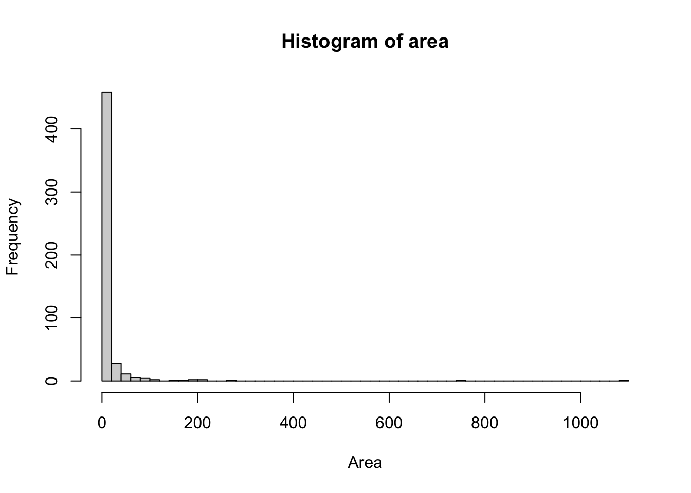
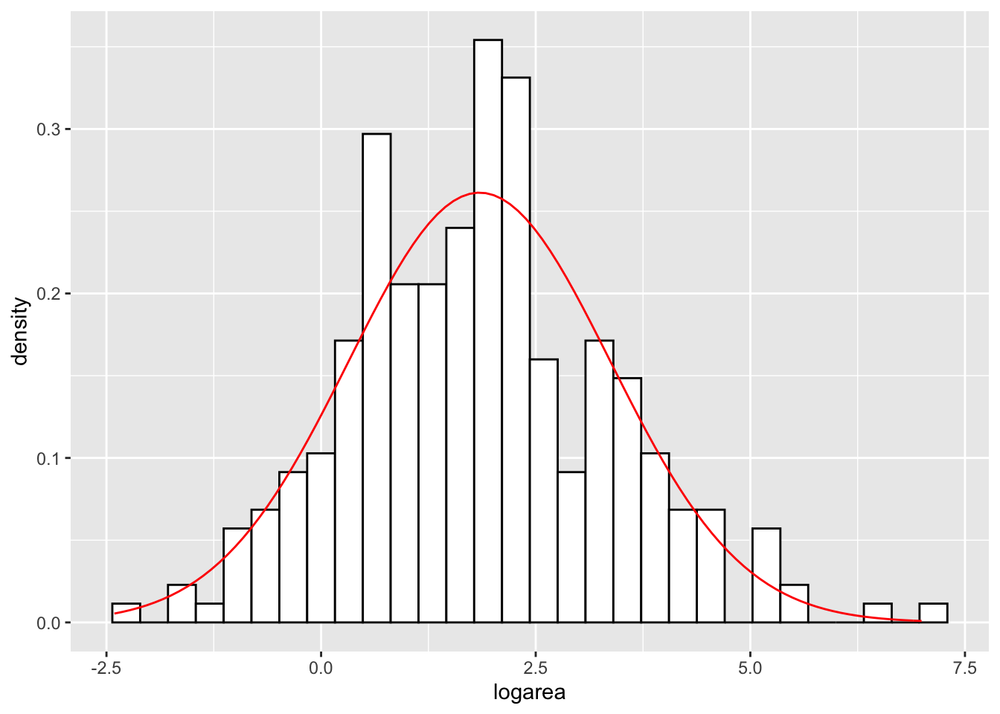
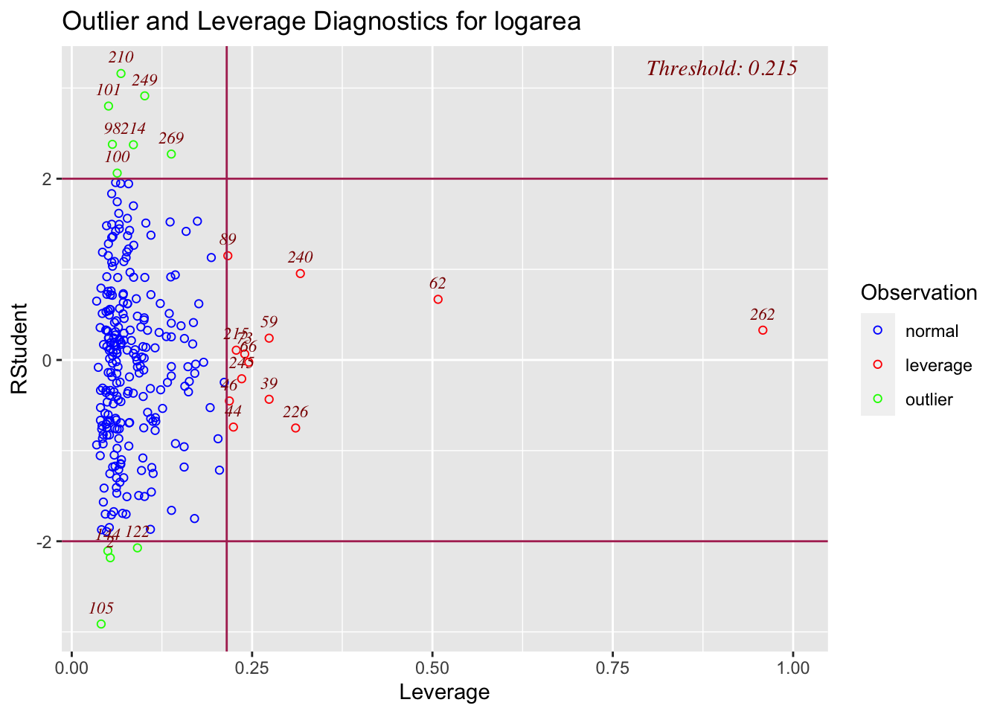
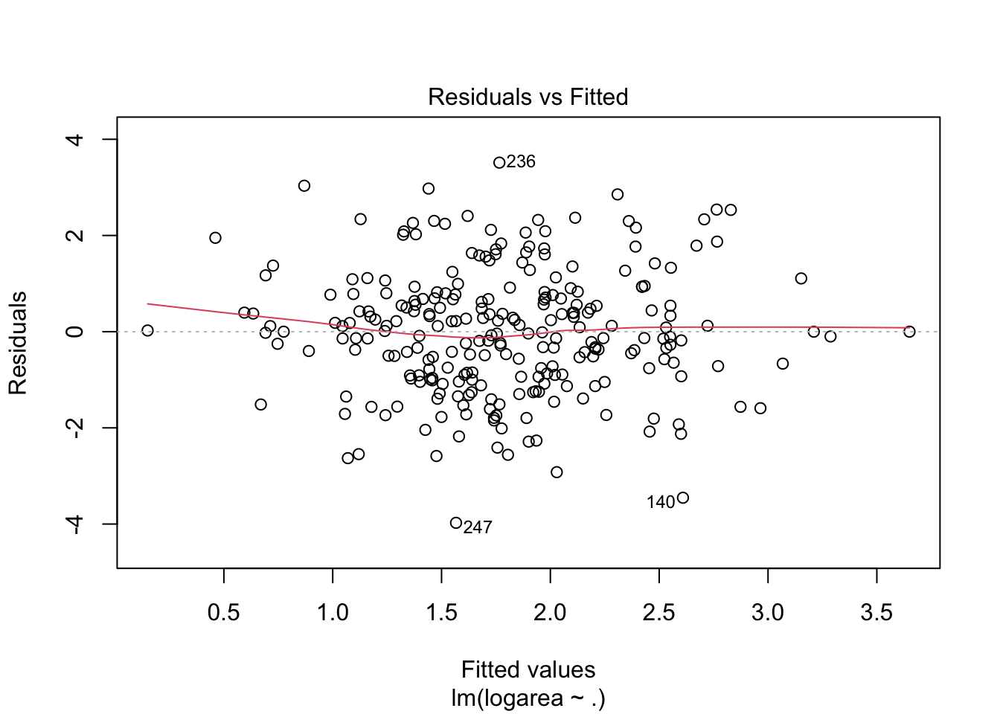
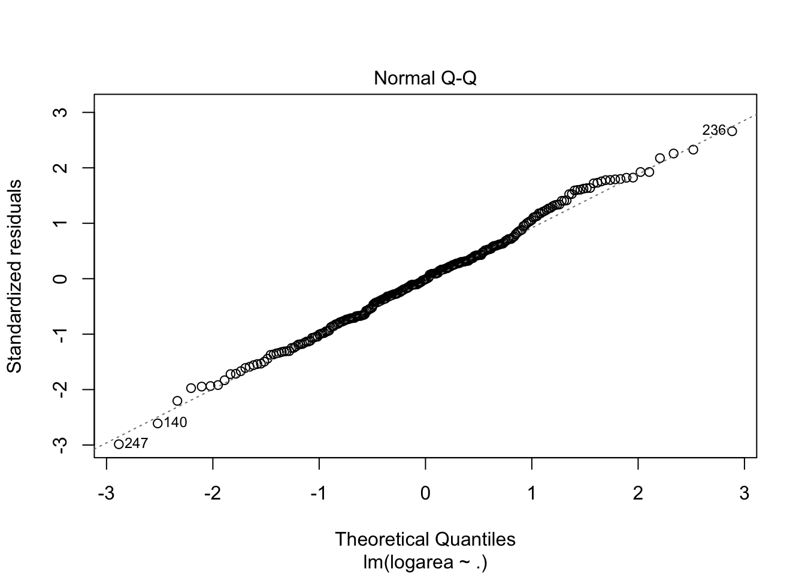
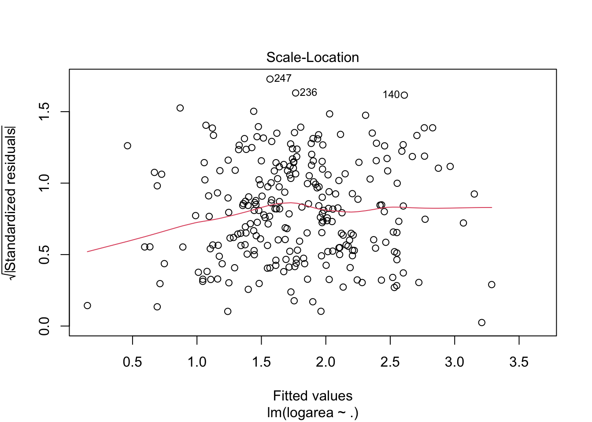
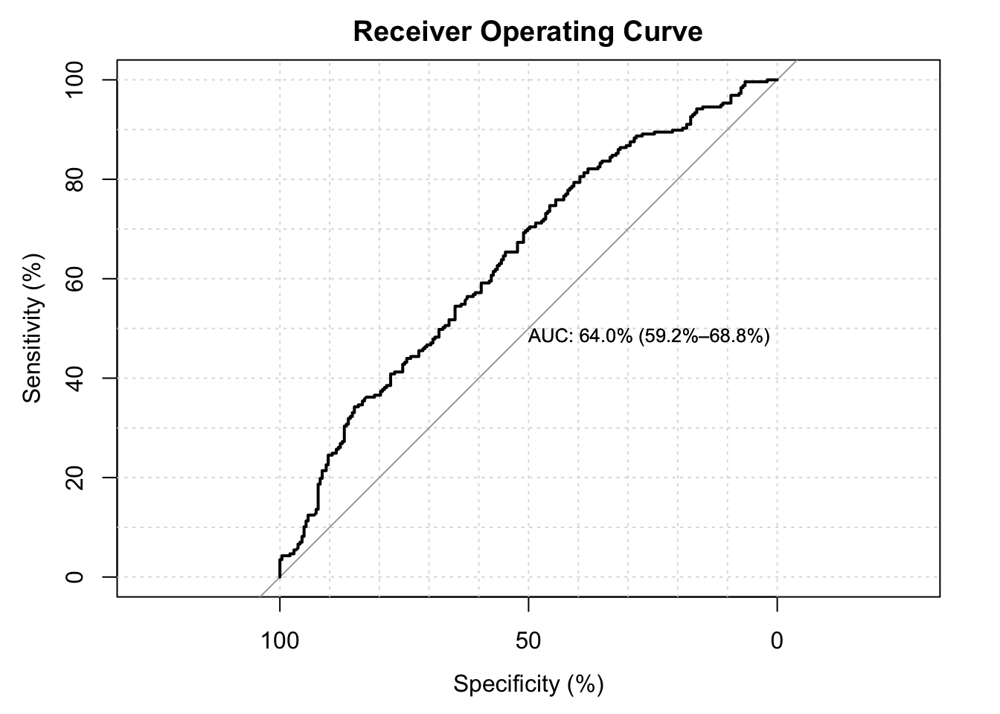

Group_project
Forest Fire
# Add season category
fire <- read.csv("forestfires.csv", header=TRUE, sep = ",")
fire$season <- rep("spring", 517)
for (i in 1:517){
if (fire$month[i] %in% c("feb","jan","dec")) fire$season[i] <- "winter"
if (fire$month[i] %in% c("oct","nov","sep")) fire$season[i] <- "autumn"
if (fire$month[i] %in% c("aug","jul","jun")) fire$season[i] <- "summer"
}
fire$season <- as.factor(fire$season)
fire$season.cat <- rep(0, 517)
for (i in 1:517){
if (fire$season[i] == "summer") {
fire$season.cat[i] <- 1
}
if (fire$season[i] == "autumn") {
fire$season.cat[i] <- 2
}
if (fire$season[i] =="winter") {
fire$season.cat[i] <- 3
}
}
fire## X Y month day FFMC DMC DC ISI temp RH wind rain area season
## 1 7 5 mar fri 86.2 26.2 94.3 5.1 8.2 51 6.7 0.0 0.00 spring
## 2 7 4 oct tue 90.6 35.4 669.1 6.7 18.0 33 0.9 0.0 0.00 autumn
## 3 7 4 oct sat 90.6 43.7 686.9 6.7 14.6 33 1.3 0.0 0.00 autumn
## 4 8 6 mar fri 91.7 33.3 77.5 9.0 8.3 97 4.0 0.2 0.00 spring
## 5 8 6 mar sun 89.3 51.3 102.2 9.6 11.4 99 1.8 0.0 0.00 spring
## 6 8 6 aug sun 92.3 85.3 488.0 14.7 22.2 29 5.4 0.0 0.00 summer
## 7 8 6 aug mon 92.3 88.9 495.6 8.5 24.1 27 3.1 0.0 0.00 summer
## 8 8 6 aug mon 91.5 145.4 608.2 10.7 8.0 86 2.2 0.0 0.00 summer
## 9 8 6 sep tue 91.0 129.5 692.6 7.0 13.1 63 5.4 0.0 0.00 autumn
## 10 7 5 sep sat 92.5 88.0 698.6 7.1 22.8 40 4.0 0.0 0.00 autumn
## 11 7 5 sep sat 92.5 88.0 698.6 7.1 17.8 51 7.2 0.0 0.00 autumn
## 12 7 5 sep sat 92.8 73.2 713.0 22.6 19.3 38 4.0 0.0 0.00 autumn
## 13 6 5 aug fri 63.5 70.8 665.3 0.8 17.0 72 6.7 0.0 0.00 summer
## 14 6 5 sep mon 90.9 126.5 686.5 7.0 21.3 42 2.2 0.0 0.00 autumn
## 15 6 5 sep wed 92.9 133.3 699.6 9.2 26.4 21 4.5 0.0 0.00 autumn
## 16 6 5 sep fri 93.3 141.2 713.9 13.9 22.9 44 5.4 0.0 0.00 autumn
## 17 5 5 mar sat 91.7 35.8 80.8 7.8 15.1 27 5.4 0.0 0.00 spring
## 18 8 5 oct mon 84.9 32.8 664.2 3.0 16.7 47 4.9 0.0 0.00 autumn
## 19 6 4 mar wed 89.2 27.9 70.8 6.3 15.9 35 4.0 0.0 0.00 spring
## 20 6 4 apr sat 86.3 27.4 97.1 5.1 9.3 44 4.5 0.0 0.00 spring
## 21 6 4 sep tue 91.0 129.5 692.6 7.0 18.3 40 2.7 0.0 0.00 autumn
## 22 5 4 sep mon 91.8 78.5 724.3 9.2 19.1 38 2.7 0.0 0.00 autumn
## 23 7 4 jun sun 94.3 96.3 200.0 56.1 21.0 44 4.5 0.0 0.00 summer
## 24 7 4 aug sat 90.2 110.9 537.4 6.2 19.5 43 5.8 0.0 0.00 summer
## 25 7 4 aug sat 93.5 139.4 594.2 20.3 23.7 32 5.8 0.0 0.00 summer
## 26 7 4 aug sun 91.4 142.4 601.4 10.6 16.3 60 5.4 0.0 0.00 summer
## 27 7 4 sep fri 92.4 117.9 668.0 12.2 19.0 34 5.8 0.0 0.00 autumn
## 28 7 4 sep mon 90.9 126.5 686.5 7.0 19.4 48 1.3 0.0 0.00 autumn
## 29 6 3 sep sat 93.4 145.4 721.4 8.1 30.2 24 2.7 0.0 0.00 autumn
## 30 6 3 sep sun 93.5 149.3 728.6 8.1 22.8 39 3.6 0.0 0.00 autumn
## 31 6 3 sep fri 94.3 85.1 692.3 15.9 25.4 24 3.6 0.0 0.00 autumn
## 32 6 3 sep mon 88.6 91.8 709.9 7.1 11.2 78 7.6 0.0 0.00 autumn
## 33 6 3 sep fri 88.6 69.7 706.8 5.8 20.6 37 1.8 0.0 0.00 autumn
## 34 6 3 sep sun 91.7 75.6 718.3 7.8 17.7 39 3.6 0.0 0.00 autumn
## 35 6 3 sep mon 91.8 78.5 724.3 9.2 21.2 32 2.7 0.0 0.00 autumn
## 36 6 3 sep tue 90.3 80.7 730.2 6.3 18.2 62 4.5 0.0 0.00 autumn
## 37 6 3 oct tue 90.6 35.4 669.1 6.7 21.7 24 4.5 0.0 0.00 autumn
## 38 7 4 oct fri 90.0 41.5 682.6 8.7 11.3 60 5.4 0.0 0.00 autumn
## 39 7 3 oct sat 90.6 43.7 686.9 6.7 17.8 27 4.0 0.0 0.00 autumn
## 40 4 4 mar tue 88.1 25.7 67.6 3.8 14.1 43 2.7 0.0 0.00 spring
## 41 4 4 jul tue 79.5 60.6 366.7 1.5 23.3 37 3.1 0.0 0.00 summer
## 42 4 4 aug sat 90.2 96.9 624.2 8.9 18.4 42 6.7 0.0 0.00 summer
## 43 4 4 aug tue 94.8 108.3 647.1 17.0 16.6 54 5.4 0.0 0.00 summer
## 44 4 4 sep sat 92.5 88.0 698.6 7.1 19.6 48 2.7 0.0 0.00 autumn
## 45 4 4 sep wed 90.1 82.9 735.7 6.2 12.9 74 4.9 0.0 0.00 autumn
## 46 5 6 sep wed 94.3 85.1 692.3 15.9 25.9 24 4.0 0.0 0.00 autumn
## 47 5 6 sep mon 90.9 126.5 686.5 7.0 14.7 70 3.6 0.0 0.00 autumn
## 48 6 6 jul mon 94.2 62.3 442.9 11.0 23.0 36 3.1 0.0 0.00 summer
## 49 4 4 mar mon 87.2 23.9 64.7 4.1 11.8 35 1.8 0.0 0.00 spring
## 50 4 4 mar mon 87.6 52.2 103.8 5.0 11.0 46 5.8 0.0 0.00 spring
## 51 4 4 sep thu 92.9 137.0 706.4 9.2 20.8 17 1.3 0.0 0.00 autumn
## 52 4 3 aug sun 90.2 99.6 631.2 6.3 21.5 34 2.2 0.0 0.00 summer
## 53 4 3 aug wed 92.1 111.2 654.1 9.6 20.4 42 4.9 0.0 0.00 summer
## 54 4 3 aug wed 92.1 111.2 654.1 9.6 20.4 42 4.9 0.0 0.00 summer
## 55 4 3 aug thu 91.7 114.3 661.3 6.3 17.6 45 3.6 0.0 0.00 summer
## 56 4 3 sep thu 92.9 137.0 706.4 9.2 27.7 24 2.2 0.0 0.00 autumn
## 57 4 3 sep tue 90.3 80.7 730.2 6.3 17.8 63 4.9 0.0 0.00 autumn
## 58 4 3 oct sun 92.6 46.5 691.8 8.8 13.8 50 2.7 0.0 0.00 autumn
## 59 2 2 feb mon 84.0 9.3 34.0 2.1 13.9 40 5.4 0.0 0.00 winter
## 60 2 2 feb fri 86.6 13.2 43.0 5.3 12.3 51 0.9 0.0 0.00 winter
## 61 2 2 mar sun 89.3 51.3 102.2 9.6 11.5 39 5.8 0.0 0.00 spring
## 62 2 2 mar sun 89.3 51.3 102.2 9.6 5.5 59 6.3 0.0 0.00 spring
## 63 2 2 aug thu 93.0 75.3 466.6 7.7 18.8 35 4.9 0.0 0.00 summer
## 64 2 2 aug sun 90.2 99.6 631.2 6.3 20.8 33 2.7 0.0 0.00 summer
## 65 2 2 aug mon 91.1 103.2 638.8 5.8 23.1 31 3.1 0.0 0.00 summer
## 66 2 2 aug thu 91.7 114.3 661.3 6.3 18.6 44 4.5 0.0 0.00 summer
## 67 2 2 sep fri 92.4 117.9 668.0 12.2 23.0 37 4.5 0.0 0.00 autumn
## 68 2 2 sep fri 92.4 117.9 668.0 12.2 19.6 33 5.4 0.0 0.00 autumn
## 69 2 2 sep fri 92.4 117.9 668.0 12.2 19.6 33 6.3 0.0 0.00 autumn
## 70 4 5 mar fri 91.7 33.3 77.5 9.0 17.2 26 4.5 0.0 0.00 spring
## 71 4 5 mar fri 91.2 48.3 97.8 12.5 15.8 27 7.6 0.0 0.00 spring
## 72 4 5 sep fri 94.3 85.1 692.3 15.9 17.7 37 3.6 0.0 0.00 autumn
## 73 5 4 mar fri 91.7 33.3 77.5 9.0 15.6 25 6.3 0.0 0.00 spring
## 74 5 4 aug tue 88.8 147.3 614.5 9.0 17.3 43 4.5 0.0 0.00 summer
## 75 5 4 sep fri 93.3 141.2 713.9 13.9 27.6 30 1.3 0.0 0.00 autumn
## 76 9 9 feb thu 84.2 6.8 26.6 7.7 6.7 79 3.1 0.0 0.00 winter
## 77 9 9 feb fri 86.6 13.2 43.0 5.3 15.7 43 3.1 0.0 0.00 winter
## 78 1 3 mar mon 87.6 52.2 103.8 5.0 8.3 72 3.1 0.0 0.00 spring
## 79 1 2 aug fri 90.1 108.0 529.8 12.5 14.7 66 2.7 0.0 0.00 summer
## 80 1 2 aug tue 91.0 121.2 561.6 7.0 21.6 19 6.7 0.0 0.00 summer
## 81 1 2 aug sun 91.4 142.4 601.4 10.6 19.5 39 6.3 0.0 0.00 summer
## 82 1 2 aug sun 90.2 99.6 631.2 6.3 17.9 44 2.2 0.0 0.00 summer
## 83 1 2 aug tue 94.8 108.3 647.1 17.0 18.6 51 4.5 0.0 0.00 summer
## 84 1 2 aug wed 92.1 111.2 654.1 9.6 16.6 47 0.9 0.0 0.00 summer
## 85 1 2 aug thu 91.7 114.3 661.3 6.3 20.2 45 3.6 0.0 0.00 summer
## 86 1 2 sep thu 92.9 137.0 706.4 9.2 21.5 15 0.9 0.0 0.00 autumn
## 87 1 2 sep thu 92.9 137.0 706.4 9.2 25.4 27 2.2 0.0 0.00 autumn
## 88 1 2 sep thu 92.9 137.0 706.4 9.2 22.4 34 2.2 0.0 0.00 autumn
## 89 1 2 sep sun 93.5 149.3 728.6 8.1 25.3 36 3.6 0.0 0.00 autumn
## 90 6 5 mar sat 91.7 35.8 80.8 7.8 17.4 25 4.9 0.0 0.00 spring
## 91 6 5 aug sat 90.2 96.9 624.2 8.9 14.7 59 5.8 0.0 0.00 summer
## 92 8 6 mar fri 91.7 35.8 80.8 7.8 17.4 24 5.4 0.0 0.00 spring
## 93 8 6 aug sun 92.3 85.3 488.0 14.7 20.8 32 6.3 0.0 0.00 summer
## 94 8 6 aug sun 91.4 142.4 601.4 10.6 18.2 43 4.9 0.0 0.00 summer
## 95 8 6 aug mon 91.1 103.2 638.8 5.8 23.4 22 2.7 0.0 0.00 summer
## 96 4 4 sep sun 89.7 90.0 704.4 4.8 17.8 64 1.3 0.0 0.00 autumn
## 97 3 4 feb sat 83.9 8.0 30.2 2.6 12.7 48 1.8 0.0 0.00 winter
## 98 3 4 mar sat 69.0 2.4 15.5 0.7 17.4 24 5.4 0.0 0.00 spring
## 99 3 4 aug sun 91.4 142.4 601.4 10.6 11.6 87 4.5 0.0 0.00 summer
## 100 3 4 aug sun 91.4 142.4 601.4 10.6 19.8 39 5.4 0.0 0.00 summer
## 101 3 4 aug sun 91.4 142.4 601.4 10.6 19.8 39 5.4 0.0 0.00 summer
## 102 3 4 aug tue 88.8 147.3 614.5 9.0 14.4 66 5.4 0.0 0.00 summer
## 103 2 4 aug tue 94.8 108.3 647.1 17.0 20.1 40 4.0 0.0 0.00 summer
## 104 2 4 sep sat 92.5 121.1 674.4 8.6 24.1 29 4.5 0.0 0.00 autumn
## 105 2 4 jan sat 82.1 3.7 9.3 2.9 5.3 78 3.1 0.0 0.00 winter
## 106 4 5 mar fri 85.9 19.5 57.3 2.8 12.7 52 6.3 0.0 0.00 spring
## 107 4 5 mar thu 91.4 30.7 74.3 7.5 18.2 29 3.1 0.0 0.00 spring
## 108 4 5 aug sun 90.2 99.6 631.2 6.3 21.4 33 3.1 0.0 0.00 summer
## 109 4 5 sep sat 92.5 88.0 698.6 7.1 20.3 45 3.1 0.0 0.00 autumn
## 110 4 5 sep mon 88.6 91.8 709.9 7.1 17.4 56 5.4 0.0 0.00 autumn
## 111 4 4 mar fri 85.9 19.5 57.3 2.8 13.7 43 5.8 0.0 0.00 spring
## 112 3 4 mar fri 91.7 33.3 77.5 9.0 18.8 18 4.5 0.0 0.00 spring
## 113 3 4 sep sun 89.7 90.0 704.4 4.8 22.8 39 3.6 0.0 0.00 autumn
## 114 3 4 sep mon 91.8 78.5 724.3 9.2 18.9 35 2.7 0.0 0.00 autumn
## 115 3 4 mar tue 88.1 25.7 67.6 3.8 15.8 27 7.6 0.0 0.00 spring
## 116 3 5 mar tue 88.1 25.7 67.6 3.8 15.5 27 6.3 0.0 0.00 spring
## 117 3 4 mar sat 91.7 35.8 80.8 7.8 11.6 30 6.3 0.0 0.00 spring
## 118 3 4 mar sat 91.7 35.8 80.8 7.8 15.2 27 4.9 0.0 0.00 spring
## 119 3 4 mar mon 90.1 39.7 86.6 6.2 10.6 30 4.0 0.0 0.00 spring
## 120 3 4 aug thu 93.0 75.3 466.6 7.7 19.6 36 3.1 0.0 0.00 summer
## 121 3 4 aug mon 91.5 145.4 608.2 10.7 10.3 74 2.2 0.0 0.00 summer
## 122 3 4 aug mon 91.5 145.4 608.2 10.7 17.1 43 5.4 0.0 0.00 summer
## 123 3 4 sep sun 92.4 124.1 680.7 8.5 22.5 42 5.4 0.0 0.00 autumn
## 124 3 4 sep tue 84.4 73.4 671.9 3.2 17.9 45 3.1 0.0 0.00 autumn
## 125 3 4 sep fri 94.3 85.1 692.3 15.9 19.8 50 5.4 0.0 0.00 autumn
## 126 3 4 oct sun 92.6 46.5 691.8 8.8 20.6 24 5.4 0.0 0.00 autumn
## 127 3 5 mar mon 87.6 52.2 103.8 5.0 9.0 49 2.2 0.0 0.00 spring
## 128 3 5 sep fri 93.5 149.3 728.6 8.1 17.2 43 3.1 0.0 0.00 autumn
## 129 3 5 oct wed 91.4 37.9 673.8 5.2 15.9 46 3.6 0.0 0.00 autumn
## 130 2 5 oct sun 92.6 46.5 691.8 8.8 15.4 35 0.9 0.0 0.00 autumn
## 131 4 6 feb sat 68.2 21.5 87.2 0.8 15.4 40 2.7 0.0 0.00 winter
## 132 4 6 mar mon 87.2 23.9 64.7 4.1 14.0 39 3.1 0.0 0.00 spring
## 133 4 6 mar sun 89.3 51.3 102.2 9.6 10.6 46 4.9 0.0 0.00 spring
## 134 4 6 sep thu 93.7 80.9 685.2 17.9 17.6 42 3.1 0.0 0.00 autumn
## 135 3 5 mar tue 88.1 25.7 67.6 3.8 14.9 38 2.7 0.0 0.00 spring
## 136 3 5 aug sat 93.5 139.4 594.2 20.3 17.6 52 5.8 0.0 0.00 summer
## 137 3 6 sep sun 92.4 124.1 680.7 8.5 17.2 58 1.3 0.0 0.00 autumn
## 138 3 6 sep mon 90.9 126.5 686.5 7.0 15.6 66 3.1 0.0 0.00 autumn
## 139 9 9 jul tue 85.8 48.3 313.4 3.9 18.0 42 2.7 0.0 0.36 summer
## 140 1 4 sep tue 91.0 129.5 692.6 7.0 21.7 38 2.2 0.0 0.43 autumn
## 141 2 5 sep mon 90.9 126.5 686.5 7.0 21.9 39 1.8 0.0 0.47 autumn
## 142 1 2 aug wed 95.5 99.9 513.3 13.2 23.3 31 4.5 0.0 0.55 summer
## 143 8 6 aug fri 90.1 108.0 529.8 12.5 21.2 51 8.9 0.0 0.61 summer
## 144 1 2 jul sat 90.0 51.3 296.3 8.7 16.6 53 5.4 0.0 0.71 summer
## 145 2 5 aug wed 95.5 99.9 513.3 13.2 23.8 32 5.4 0.0 0.77 summer
## 146 6 5 aug thu 95.2 131.7 578.8 10.4 27.4 22 4.0 0.0 0.90 summer
## 147 5 4 mar mon 90.1 39.7 86.6 6.2 13.2 40 5.4 0.0 0.95 spring
## 148 8 3 sep tue 84.4 73.4 671.9 3.2 24.2 28 3.6 0.0 0.96 autumn
## 149 2 2 aug tue 94.8 108.3 647.1 17.0 17.4 43 6.7 0.0 1.07 summer
## 150 8 6 sep thu 93.7 80.9 685.2 17.9 23.7 25 4.5 0.0 1.12 autumn
## 151 6 5 jun fri 92.5 56.4 433.3 7.1 23.2 39 5.4 0.0 1.19 summer
## 152 9 9 jul sun 90.1 68.6 355.2 7.2 24.8 29 2.2 0.0 1.36 summer
## 153 3 4 jul sat 90.1 51.2 424.1 6.2 24.6 43 1.8 0.0 1.43 summer
## 154 5 4 sep fri 94.3 85.1 692.3 15.9 20.1 47 4.9 0.0 1.46 autumn
## 155 1 5 sep sat 93.4 145.4 721.4 8.1 29.6 27 2.7 0.0 1.46 autumn
## 156 7 4 aug sun 94.8 108.3 647.1 17.0 16.4 47 1.3 0.0 1.56 summer
## 157 2 4 sep sat 93.4 145.4 721.4 8.1 28.6 27 2.2 0.0 1.61 autumn
## 158 2 2 aug wed 92.1 111.2 654.1 9.6 18.4 45 3.6 0.0 1.63 summer
## 159 2 4 aug wed 92.1 111.2 654.1 9.6 20.5 35 4.0 0.0 1.64 summer
## 160 7 4 sep fri 92.4 117.9 668.0 12.2 19.0 34 5.8 0.0 1.69 autumn
## 161 7 4 mar mon 90.1 39.7 86.6 6.2 16.1 29 3.1 0.0 1.75 spring
## 162 6 4 aug thu 95.2 131.7 578.8 10.4 20.3 41 4.0 0.0 1.90 summer
## 163 6 3 mar sat 90.6 50.1 100.4 7.8 15.2 31 8.5 0.0 1.94 spring
## 164 8 6 sep sat 92.5 121.1 674.4 8.6 17.8 56 1.8 0.0 1.95 autumn
## 165 8 5 sep sun 89.7 90.0 704.4 4.8 17.8 67 2.2 0.0 2.01 autumn
## 166 6 5 mar thu 84.9 18.2 55.0 3.0 5.3 70 4.5 0.0 2.14 spring
## 167 6 5 aug wed 92.1 111.2 654.1 9.6 16.6 47 0.9 0.0 2.29 summer
## 168 6 5 aug wed 96.0 127.1 570.5 16.5 23.4 33 4.5 0.0 2.51 summer
## 169 6 5 mar fri 91.2 48.3 97.8 12.5 14.6 26 9.4 0.0 2.53 spring
## 170 8 6 aug thu 95.2 131.7 578.8 10.4 20.7 45 2.2 0.0 2.55 summer
## 171 5 4 sep wed 92.9 133.3 699.6 9.2 21.9 35 1.8 0.0 2.57 autumn
## 172 8 6 aug wed 85.6 90.4 609.6 6.6 17.4 50 4.0 0.0 2.69 summer
## 173 7 4 aug sun 91.4 142.4 601.4 10.6 20.1 39 5.4 0.0 2.74 summer
## 174 4 4 sep mon 90.9 126.5 686.5 7.0 17.7 39 2.2 0.0 3.07 autumn
## 175 1 4 aug sat 90.2 96.9 624.2 8.9 14.2 53 1.8 0.0 3.50 summer
## 176 1 4 aug sat 90.2 96.9 624.2 8.9 20.3 39 4.9 0.0 4.53 summer
## 177 6 5 apr thu 81.5 9.1 55.2 2.7 5.8 54 5.8 0.0 4.61 spring
## 178 2 5 aug sun 90.2 99.6 631.2 6.3 19.2 44 2.7 0.0 4.69 summer
## 179 2 5 sep wed 90.1 82.9 735.7 6.2 18.3 45 2.2 0.0 4.88 autumn
## 180 8 6 aug tue 88.8 147.3 614.5 9.0 14.4 66 5.4 0.0 5.23 summer
## 181 1 3 sep sun 92.4 124.1 680.7 8.5 23.9 32 6.7 0.0 5.33 autumn
## 182 8 6 oct mon 84.9 32.8 664.2 3.0 19.1 32 4.0 0.0 5.44 autumn
## 183 5 4 feb sun 86.8 15.6 48.3 3.9 12.4 53 2.2 0.0 6.38 winter
## 184 7 4 oct mon 91.7 48.5 696.1 11.1 16.8 45 4.5 0.0 6.83 autumn
## 185 8 6 aug fri 93.9 135.7 586.7 15.1 20.8 34 4.9 0.0 6.96 summer
## 186 2 5 sep tue 91.0 129.5 692.6 7.0 17.6 46 3.1 0.0 7.04 autumn
## 187 8 6 mar sun 89.3 51.3 102.2 9.6 11.5 39 5.8 0.0 7.19 spring
## 188 1 5 sep mon 90.9 126.5 686.5 7.0 21.0 42 2.2 0.0 7.30 autumn
## 189 6 4 mar sat 90.8 41.9 89.4 7.9 13.3 42 0.9 0.0 7.40 spring
## 190 7 4 mar sun 90.7 44.0 92.4 5.5 11.5 60 4.0 0.0 8.24 spring
## 191 6 5 mar fri 91.2 48.3 97.8 12.5 11.7 33 4.0 0.0 8.31 spring
## 192 2 5 aug thu 95.2 131.7 578.8 10.4 24.2 28 2.7 0.0 8.68 summer
## 193 2 2 aug tue 94.8 108.3 647.1 17.0 24.6 22 4.5 0.0 8.71 summer
## 194 4 5 sep wed 92.9 133.3 699.6 9.2 24.3 25 4.0 0.0 9.41 autumn
## 195 2 2 aug tue 94.8 108.3 647.1 17.0 24.6 22 4.5 0.0 10.01 summer
## 196 2 5 aug fri 93.9 135.7 586.7 15.1 23.5 36 5.4 0.0 10.02 summer
## 197 6 5 apr thu 81.5 9.1 55.2 2.7 5.8 54 5.8 0.0 10.93 spring
## 198 4 5 sep thu 92.9 137.0 706.4 9.2 21.5 15 0.9 0.0 11.06 autumn
## 199 3 4 sep tue 91.0 129.5 692.6 7.0 13.9 59 6.3 0.0 11.24 autumn
## 200 2 4 sep mon 63.5 70.8 665.3 0.8 22.6 38 3.6 0.0 11.32 autumn
## 201 1 5 sep tue 91.0 129.5 692.6 7.0 21.6 33 2.2 0.0 11.53 autumn
## 202 6 5 mar sun 90.1 37.6 83.7 7.2 12.4 54 3.6 0.0 12.10 spring
## 203 7 4 feb sun 83.9 8.7 32.1 2.1 8.8 68 2.2 0.0 13.05 winter
## 204 8 6 oct wed 91.4 37.9 673.8 5.2 20.2 37 2.7 0.0 13.70 autumn
## 205 5 6 mar sat 90.6 50.1 100.4 7.8 15.1 64 4.0 0.0 13.99 spring
## 206 4 5 sep thu 92.9 137.0 706.4 9.2 22.1 34 1.8 0.0 14.57 autumn
## 207 2 2 aug sat 93.5 139.4 594.2 20.3 22.9 31 7.2 0.0 15.45 summer
## 208 7 5 sep tue 91.0 129.5 692.6 7.0 20.7 37 2.2 0.0 17.20 autumn
## 209 6 5 sep fri 92.4 117.9 668.0 12.2 19.6 33 6.3 0.0 19.23 autumn
## 210 8 3 sep thu 93.7 80.9 685.2 17.9 23.2 26 4.9 0.0 23.41 autumn
## 211 4 4 oct sat 90.6 43.7 686.9 6.7 18.4 25 3.1 0.0 24.23 autumn
## 212 7 4 aug sat 93.5 139.4 594.2 20.3 5.1 96 5.8 0.0 26.00 summer
## 213 7 4 sep fri 94.3 85.1 692.3 15.9 20.1 47 4.9 0.0 26.13 autumn
## 214 7 3 mar mon 87.6 52.2 103.8 5.0 11.0 46 5.8 0.0 27.35 spring
## 215 4 4 mar sat 91.7 35.8 80.8 7.8 17.0 27 4.9 0.0 28.66 spring
## 216 4 4 mar sat 91.7 35.8 80.8 7.8 17.0 27 4.9 0.0 28.66 spring
## 217 4 4 sep sun 92.4 124.1 680.7 8.5 16.9 60 1.3 0.0 29.48 autumn
## 218 1 3 sep mon 88.6 91.8 709.9 7.1 12.4 73 6.3 0.0 30.32 autumn
## 219 4 5 sep wed 92.9 133.3 699.6 9.2 19.4 19 1.3 0.0 31.72 autumn
## 220 6 5 mar mon 90.1 39.7 86.6 6.2 15.2 27 3.1 0.0 31.86 spring
## 221 8 6 aug sun 90.2 99.6 631.2 6.3 16.2 59 3.1 0.0 32.07 summer
## 222 3 4 sep fri 93.3 141.2 713.9 13.9 18.6 49 3.6 0.0 35.88 autumn
## 223 4 3 mar mon 87.6 52.2 103.8 5.0 11.0 46 5.8 0.0 36.85 spring
## 224 2 2 jul fri 88.3 150.3 309.9 6.8 13.4 79 3.6 0.0 37.02 summer
## 225 7 4 sep wed 90.1 82.9 735.7 6.2 15.4 57 4.5 0.0 37.71 autumn
## 226 4 4 sep sun 93.5 149.3 728.6 8.1 22.9 39 4.9 0.0 48.55 autumn
## 227 7 5 oct mon 91.7 48.5 696.1 11.1 16.1 44 4.0 0.0 49.37 autumn
## 228 8 6 aug sat 92.2 81.8 480.8 11.9 20.1 34 4.5 0.0 58.30 summer
## 229 4 6 sep sun 93.5 149.3 728.6 8.1 28.3 26 3.1 0.0 64.10 autumn
## 230 8 6 aug sat 92.2 81.8 480.8 11.9 16.4 43 4.0 0.0 71.30 summer
## 231 4 4 sep wed 92.9 133.3 699.6 9.2 26.4 21 4.5 0.0 88.49 autumn
## 232 1 5 sep sun 93.5 149.3 728.6 8.1 27.8 27 3.1 0.0 95.18 autumn
## 233 6 4 sep tue 91.0 129.5 692.6 7.0 18.7 43 2.7 0.0 103.39 autumn
## 234 9 4 sep tue 84.4 73.4 671.9 3.2 24.3 36 3.1 0.0 105.66 autumn
## 235 4 5 sep sat 92.5 121.1 674.4 8.6 17.7 25 3.1 0.0 154.88 autumn
## 236 8 6 aug sun 91.4 142.4 601.4 10.6 19.6 41 5.8 0.0 196.48 summer
## 237 2 2 sep sat 92.5 121.1 674.4 8.6 18.2 46 1.8 0.0 200.94 autumn
## 238 1 2 sep tue 91.0 129.5 692.6 7.0 18.8 40 2.2 0.0 212.88 autumn
## 239 6 5 sep sat 92.5 121.1 674.4 8.6 25.1 27 4.0 0.0 1090.84 autumn
## 240 7 5 apr sun 81.9 3.0 7.9 3.5 13.4 75 1.8 0.0 0.00 spring
## 241 6 3 apr wed 88.0 17.2 43.5 3.8 15.2 51 2.7 0.0 0.00 spring
## 242 4 4 apr fri 83.0 23.3 85.3 2.3 16.7 20 3.1 0.0 0.00 spring
## 243 2 4 aug sun 94.2 122.3 589.9 12.9 15.4 66 4.0 0.0 10.13 summer
## 244 7 4 aug sun 91.8 175.1 700.7 13.8 21.9 73 7.6 1.0 0.00 summer
## 245 2 4 aug sun 91.8 175.1 700.7 13.8 22.4 54 7.6 0.0 2.87 summer
## 246 3 4 aug sun 91.8 175.1 700.7 13.8 26.8 38 6.3 0.0 0.76 summer
## 247 5 4 aug sun 91.8 175.1 700.7 13.8 25.7 39 5.4 0.0 0.09 summer
## 248 2 4 aug wed 92.2 91.6 503.6 9.6 20.7 70 2.2 0.0 0.75 summer
## 249 8 6 aug wed 93.1 157.3 666.7 13.5 28.7 28 2.7 0.0 0.00 summer
## 250 3 4 aug wed 93.1 157.3 666.7 13.5 21.7 40 0.4 0.0 2.47 summer
## 251 8 5 aug wed 93.1 157.3 666.7 13.5 26.8 25 3.1 0.0 0.68 summer
## 252 8 5 aug wed 93.1 157.3 666.7 13.5 24.0 36 3.1 0.0 0.24 summer
## 253 6 5 aug wed 93.1 157.3 666.7 13.5 22.1 37 3.6 0.0 0.21 summer
## 254 7 4 aug thu 91.9 109.2 565.5 8.0 21.4 38 2.7 0.0 1.52 summer
## 255 6 3 aug thu 91.6 138.1 621.7 6.3 18.9 41 3.1 0.0 10.34 summer
## 256 2 5 aug thu 87.5 77.0 694.8 5.0 22.3 46 4.0 0.0 0.00 summer
## 257 8 6 aug sat 94.2 117.2 581.1 11.0 23.9 41 2.2 0.0 8.02 summer
## 258 4 3 aug sat 94.2 117.2 581.1 11.0 21.4 44 2.7 0.0 0.68 summer
## 259 3 4 aug sat 91.8 170.9 692.3 13.7 20.6 59 0.9 0.0 0.00 summer
## 260 7 4 aug sat 91.8 170.9 692.3 13.7 23.7 40 1.8 0.0 1.38 summer
## 261 2 4 aug mon 93.6 97.9 542.0 14.4 28.3 32 4.0 0.0 8.85 summer
## 262 3 4 aug fri 91.6 112.4 573.0 8.9 11.2 84 7.6 0.0 3.30 summer
## 263 2 4 aug fri 91.6 112.4 573.0 8.9 21.4 42 3.1 0.0 4.25 summer
## 264 6 3 aug fri 91.1 141.1 629.1 7.1 19.3 39 3.6 0.0 1.56 summer
## 265 4 4 aug fri 94.3 167.6 684.4 13.0 21.8 53 3.1 0.0 6.54 summer
## 266 4 4 aug tue 93.7 102.2 550.3 14.6 22.1 54 7.6 0.0 0.79 summer
## 267 6 5 aug tue 94.3 131.7 607.1 22.7 19.4 55 4.0 0.0 0.17 summer
## 268 2 2 aug tue 92.1 152.6 658.2 14.3 23.7 24 3.1 0.0 0.00 summer
## 269 3 4 aug tue 92.1 152.6 658.2 14.3 21.0 32 3.1 0.0 0.00 summer
## 270 4 4 aug tue 92.1 152.6 658.2 14.3 19.1 53 2.7 0.0 4.40 summer
## 271 2 2 aug tue 92.1 152.6 658.2 14.3 21.8 56 3.1 0.0 0.52 summer
## 272 8 6 aug tue 92.1 152.6 658.2 14.3 20.1 58 4.5 0.0 9.27 summer
## 273 2 5 aug tue 92.1 152.6 658.2 14.3 20.2 47 4.0 0.0 3.09 summer
## 274 4 6 dec sun 84.4 27.2 353.5 6.8 4.8 57 8.5 0.0 8.98 winter
## 275 8 6 dec wed 84.0 27.8 354.6 5.3 5.1 61 8.0 0.0 11.19 winter
## 276 4 6 dec thu 84.6 26.4 352.0 2.0 5.1 61 4.9 0.0 5.38 winter
## 277 4 4 dec mon 85.4 25.4 349.7 2.6 4.6 21 8.5 0.0 17.85 winter
## 278 3 4 dec mon 85.4 25.4 349.7 2.6 4.6 21 8.5 0.0 10.73 winter
## 279 4 4 dec mon 85.4 25.4 349.7 2.6 4.6 21 8.5 0.0 22.03 winter
## 280 4 4 dec mon 85.4 25.4 349.7 2.6 4.6 21 8.5 0.0 9.77 winter
## 281 4 6 dec fri 84.7 26.7 352.6 4.1 2.2 59 4.9 0.0 9.27 winter
## 282 6 5 dec tue 85.4 25.4 349.7 2.6 5.1 24 8.5 0.0 24.77 winter
## 283 6 3 feb sun 84.9 27.5 353.5 3.4 4.2 51 4.0 0.0 0.00 winter
## 284 3 4 feb wed 86.9 6.6 18.7 3.2 8.8 35 3.1 0.0 1.10 winter
## 285 5 4 feb fri 85.2 4.9 15.8 6.3 7.5 46 8.0 0.0 24.24 winter
## 286 2 5 jul sun 93.9 169.7 411.8 12.3 23.4 40 6.3 0.0 0.00 summer
## 287 7 6 jul wed 91.2 183.1 437.7 12.5 12.6 90 7.6 0.2 0.00 summer
## 288 7 4 jul sat 91.6 104.2 474.9 9.0 22.1 49 2.7 0.0 0.00 summer
## 289 7 4 jul sat 91.6 104.2 474.9 9.0 24.2 32 1.8 0.0 0.00 summer
## 290 7 4 jul sat 91.6 104.2 474.9 9.0 24.3 30 1.8 0.0 0.00 summer
## 291 2 5 jul sat 91.6 104.2 474.9 9.0 18.7 53 1.8 0.0 0.00 summer
## 292 9 4 jul sat 91.6 104.2 474.9 9.0 25.3 39 0.9 0.0 8.00 summer
## 293 4 5 jul fri 91.6 100.2 466.3 6.3 22.9 40 1.3 0.0 2.64 summer
## 294 7 6 jul tue 93.1 180.4 430.8 11.0 26.9 28 5.4 0.0 86.45 summer
## 295 8 6 jul tue 92.3 88.8 440.9 8.5 17.1 67 3.6 0.0 6.57 summer
## 296 7 5 jun sun 93.1 180.4 430.8 11.0 22.2 48 1.3 0.0 0.00 summer
## 297 6 4 jun sun 90.4 89.5 290.8 6.4 14.3 46 1.8 0.0 0.90 summer
## 298 8 6 jun sun 90.4 89.5 290.8 6.4 15.4 45 2.2 0.0 0.00 summer
## 299 8 6 jun wed 91.2 147.8 377.2 12.7 19.6 43 4.9 0.0 0.00 summer
## 300 6 5 jun sat 53.4 71.0 233.8 0.4 10.6 90 2.7 0.0 0.00 summer
## 301 6 5 jun mon 90.4 93.3 298.1 7.5 20.7 25 4.9 0.0 0.00 summer
## 302 6 5 jun mon 90.4 93.3 298.1 7.5 19.1 39 5.4 0.0 3.52 summer
## 303 3 6 jun fri 91.1 94.1 232.1 7.1 19.2 38 4.5 0.0 0.00 summer
## 304 3 6 jun fri 91.1 94.1 232.1 7.1 19.2 38 4.5 0.0 0.00 summer
## 305 6 5 may sat 85.1 28.0 113.8 3.5 11.3 94 4.9 0.0 0.00 spring
## 306 1 4 sep sun 89.6 84.1 714.3 5.7 19.0 52 2.2 0.0 0.00 autumn
## 307 7 4 sep sun 89.6 84.1 714.3 5.7 17.1 53 5.4 0.0 0.41 autumn
## 308 3 4 sep sun 89.6 84.1 714.3 5.7 23.8 35 3.6 0.0 5.18 autumn
## 309 2 4 sep sun 92.4 105.8 758.1 9.9 16.0 45 1.8 0.0 0.00 autumn
## 310 2 4 sep sun 92.4 105.8 758.1 9.9 24.9 27 2.2 0.0 0.00 autumn
## 311 7 4 sep sun 92.4 105.8 758.1 9.9 25.3 27 2.7 0.0 0.00 autumn
## 312 6 3 sep sun 92.4 105.8 758.1 9.9 24.8 28 1.8 0.0 14.29 autumn
## 313 2 4 sep sun 50.4 46.2 706.6 0.4 12.2 78 6.3 0.0 0.00 autumn
## 314 6 5 sep wed 92.6 115.4 777.1 8.8 24.3 27 4.9 0.0 0.00 autumn
## 315 4 4 sep wed 92.6 115.4 777.1 8.8 19.7 41 1.8 0.0 1.58 autumn
## 316 3 4 sep wed 91.2 134.7 817.5 7.2 18.5 30 2.7 0.0 0.00 autumn
## 317 4 5 sep thu 92.4 96.2 739.4 8.6 18.6 24 5.8 0.0 0.00 autumn
## 318 4 4 sep thu 92.4 96.2 739.4 8.6 19.2 24 4.9 0.0 3.78 autumn
## 319 6 5 sep thu 92.8 119.0 783.5 7.5 21.6 27 2.2 0.0 0.00 autumn
## 320 5 4 sep thu 92.8 119.0 783.5 7.5 21.6 28 6.3 0.0 4.41 autumn
## 321 6 3 sep thu 92.8 119.0 783.5 7.5 18.9 34 7.2 0.0 34.36 autumn
## 322 1 4 sep thu 92.8 119.0 783.5 7.5 16.8 28 4.0 0.0 7.21 autumn
## 323 6 5 sep thu 92.8 119.0 783.5 7.5 16.8 28 4.0 0.0 1.01 autumn
## 324 3 5 sep thu 90.7 136.9 822.8 6.8 12.9 39 2.7 0.0 2.18 autumn
## 325 6 5 sep thu 88.1 53.3 726.9 5.4 13.7 56 1.8 0.0 4.42 autumn
## 326 1 4 sep sat 92.2 102.3 751.5 8.4 24.2 27 3.1 0.0 0.00 autumn
## 327 5 4 sep sat 92.2 102.3 751.5 8.4 24.1 27 3.1 0.0 0.00 autumn
## 328 6 5 sep sat 92.2 102.3 751.5 8.4 21.2 32 2.2 0.0 0.00 autumn
## 329 6 5 sep sat 92.2 102.3 751.5 8.4 19.7 35 1.8 0.0 0.00 autumn
## 330 4 3 sep sat 92.2 102.3 751.5 8.4 23.5 27 4.0 0.0 3.33 autumn
## 331 3 3 sep sat 92.2 102.3 751.5 8.4 24.2 27 3.1 0.0 6.58 autumn
## 332 7 4 sep sat 91.2 124.4 795.3 8.5 21.5 28 4.5 0.0 15.64 autumn
## 333 4 4 sep sat 91.2 124.4 795.3 8.5 17.1 41 2.2 0.0 11.22 autumn
## 334 1 4 sep mon 92.1 87.7 721.1 9.5 18.1 54 3.1 0.0 2.13 autumn
## 335 2 3 sep mon 91.6 108.4 764.0 6.2 18.0 51 5.4 0.0 0.00 autumn
## 336 4 3 sep mon 91.6 108.4 764.0 6.2 9.8 86 1.8 0.0 0.00 autumn
## 337 7 4 sep mon 91.6 108.4 764.0 6.2 19.3 44 2.2 0.0 0.00 autumn
## 338 6 3 sep mon 91.6 108.4 764.0 6.2 23.0 34 2.2 0.0 56.04 autumn
## 339 8 6 sep mon 91.6 108.4 764.0 6.2 22.7 35 2.2 0.0 7.48 autumn
## 340 2 4 sep mon 91.6 108.4 764.0 6.2 20.4 41 1.8 0.0 1.47 autumn
## 341 2 5 sep mon 91.6 108.4 764.0 6.2 19.3 44 2.2 0.0 3.93 autumn
## 342 8 6 sep mon 91.9 111.7 770.3 6.5 15.7 51 2.2 0.0 0.00 autumn
## 343 6 3 sep mon 91.5 130.1 807.1 7.5 20.6 37 1.8 0.0 0.00 autumn
## 344 8 6 sep mon 91.5 130.1 807.1 7.5 15.9 51 4.5 0.0 2.18 autumn
## 345 6 3 sep mon 91.5 130.1 807.1 7.5 12.2 66 4.9 0.0 6.10 autumn
## 346 2 2 sep mon 91.5 130.1 807.1 7.5 16.8 43 3.1 0.0 5.83 autumn
## 347 1 4 sep mon 91.5 130.1 807.1 7.5 21.3 35 2.2 0.0 28.19 autumn
## 348 5 4 sep fri 92.1 99.0 745.3 9.6 10.1 75 3.6 0.0 0.00 autumn
## 349 3 4 sep fri 92.1 99.0 745.3 9.6 17.4 57 4.5 0.0 0.00 autumn
## 350 5 4 sep fri 92.1 99.0 745.3 9.6 12.8 64 3.6 0.0 1.64 autumn
## 351 5 4 sep fri 92.1 99.0 745.3 9.6 10.1 75 3.6 0.0 3.71 autumn
## 352 4 4 sep fri 92.1 99.0 745.3 9.6 15.4 53 6.3 0.0 7.31 autumn
## 353 7 4 sep fri 92.1 99.0 745.3 9.6 20.6 43 3.6 0.0 2.03 autumn
## 354 7 4 sep fri 92.1 99.0 745.3 9.6 19.8 47 2.7 0.0 1.72 autumn
## 355 7 4 sep fri 92.1 99.0 745.3 9.6 18.7 50 2.2 0.0 5.97 autumn
## 356 4 4 sep fri 92.1 99.0 745.3 9.6 20.8 35 4.9 0.0 13.06 autumn
## 357 4 4 sep fri 92.1 99.0 745.3 9.6 20.8 35 4.9 0.0 1.26 autumn
## 358 6 3 sep fri 92.5 122.0 789.7 10.2 15.9 55 3.6 0.0 0.00 autumn
## 359 6 3 sep fri 92.5 122.0 789.7 10.2 19.7 39 2.7 0.0 0.00 autumn
## 360 1 4 sep fri 92.5 122.0 789.7 10.2 21.1 39 2.2 0.0 8.12 autumn
## 361 6 5 sep fri 92.5 122.0 789.7 10.2 18.4 42 2.2 0.0 1.09 autumn
## 362 4 3 sep fri 92.5 122.0 789.7 10.2 17.3 45 4.0 0.0 3.94 autumn
## 363 7 4 sep fri 88.2 55.2 732.3 11.6 15.2 64 3.1 0.0 0.52 autumn
## 364 4 3 sep tue 91.9 111.7 770.3 6.5 15.9 53 2.2 0.0 2.93 autumn
## 365 6 5 sep tue 91.9 111.7 770.3 6.5 21.1 35 2.7 0.0 5.65 autumn
## 366 6 5 sep tue 91.9 111.7 770.3 6.5 19.6 45 3.1 0.0 20.03 autumn
## 367 4 5 sep tue 91.1 132.3 812.1 12.5 15.9 38 5.4 0.0 1.75 autumn
## 368 4 5 sep tue 91.1 132.3 812.1 12.5 16.4 27 3.6 0.0 0.00 autumn
## 369 6 5 sep sat 91.2 94.3 744.4 8.4 16.8 47 4.9 0.0 12.64 autumn
## 370 4 5 sep sun 91.0 276.3 825.1 7.1 13.8 77 7.6 0.0 0.00 autumn
## 371 7 4 sep sun 91.0 276.3 825.1 7.1 13.8 77 7.6 0.0 11.06 autumn
## 372 3 4 jul wed 91.9 133.6 520.5 8.0 14.2 58 4.0 0.0 0.00 summer
## 373 4 5 aug sun 92.0 203.2 664.5 8.1 10.4 75 0.9 0.0 0.00 summer
## 374 5 4 aug thu 94.8 222.4 698.6 13.9 20.3 42 2.7 0.0 0.00 summer
## 375 6 5 sep fri 90.3 290.0 855.3 7.4 10.3 78 4.0 0.0 18.30 autumn
## 376 6 5 sep sat 91.2 94.3 744.4 8.4 15.4 57 4.9 0.0 39.35 autumn
## 377 8 6 aug mon 92.1 207.0 672.6 8.2 21.1 54 2.2 0.0 0.00 summer
## 378 2 2 aug sat 93.7 231.1 715.1 8.4 21.9 42 2.2 0.0 174.63 summer
## 379 6 5 mar thu 90.9 18.9 30.6 8.0 8.7 51 5.8 0.0 0.00 spring
## 380 4 5 jan sun 18.7 1.1 171.4 0.0 5.2 100 0.9 0.0 0.00 winter
## 381 5 4 jul wed 93.7 101.3 458.8 11.9 19.3 39 7.2 0.0 7.73 summer
## 382 8 6 aug thu 90.7 194.1 643.0 6.8 16.2 63 2.7 0.0 16.33 summer
## 383 8 6 aug wed 95.2 217.7 690.0 18.0 28.2 29 1.8 0.0 5.86 summer
## 384 9 6 aug thu 91.6 248.4 753.8 6.3 20.5 58 2.7 0.0 42.87 summer
## 385 8 4 aug sat 91.6 273.8 819.1 7.7 21.3 44 4.5 0.0 12.18 summer
## 386 2 4 aug sun 91.6 181.3 613.0 7.6 20.9 50 2.2 0.0 16.00 summer
## 387 3 4 sep sun 90.5 96.7 750.5 11.4 20.6 55 5.4 0.0 24.59 autumn
## 388 5 5 mar thu 90.9 18.9 30.6 8.0 11.6 48 5.4 0.0 0.00 spring
## 389 6 4 aug fri 94.8 227.0 706.7 12.0 23.3 34 3.1 0.0 28.74 summer
## 390 7 4 aug fri 94.8 227.0 706.7 12.0 23.3 34 3.1 0.0 0.00 summer
## 391 7 4 feb mon 84.7 9.5 58.3 4.1 7.5 71 6.3 0.0 9.96 winter
## 392 8 6 sep fri 91.1 91.3 738.1 7.2 20.7 46 2.7 0.0 30.18 autumn
## 393 1 3 sep sun 91.0 276.3 825.1 7.1 21.9 43 4.0 0.0 70.76 autumn
## 394 2 4 mar tue 93.4 15.0 25.6 11.4 15.2 19 7.6 0.0 0.00 spring
## 395 6 5 feb mon 84.1 4.6 46.7 2.2 5.3 68 1.8 0.0 0.00 winter
## 396 4 5 feb sun 85.0 9.0 56.9 3.5 10.1 62 1.8 0.0 51.78 winter
## 397 4 3 sep sun 90.5 96.7 750.5 11.4 20.4 55 4.9 0.0 3.64 autumn
## 398 5 6 aug sun 91.6 181.3 613.0 7.6 24.3 33 3.6 0.0 3.63 summer
## 399 1 2 aug sat 93.7 231.1 715.1 8.4 25.9 32 3.1 0.0 0.00 summer
## 400 9 5 jun wed 93.3 49.5 297.7 14.0 28.0 34 4.5 0.0 0.00 summer
## 401 9 5 jun wed 93.3 49.5 297.7 14.0 28.0 34 4.5 0.0 8.16 summer
## 402 3 4 sep thu 91.1 88.2 731.7 8.3 22.8 46 4.0 0.0 4.95 autumn
## 403 9 9 aug fri 94.8 227.0 706.7 12.0 25.0 36 4.0 0.0 0.00 summer
## 404 8 6 aug thu 90.7 194.1 643.0 6.8 21.3 41 3.6 0.0 0.00 summer
## 405 2 4 sep wed 87.9 84.8 725.1 3.7 21.8 34 2.2 0.0 6.04 autumn
## 406 2 2 aug tue 94.6 212.1 680.9 9.5 27.9 27 2.2 0.0 0.00 summer
## 407 6 5 sep sat 87.1 291.3 860.6 4.0 17.0 67 4.9 0.0 3.95 autumn
## 408 4 5 feb sat 84.7 8.2 55.0 2.9 14.2 46 4.0 0.0 0.00 winter
## 409 4 3 sep fri 90.3 290.0 855.3 7.4 19.9 44 3.1 0.0 7.80 autumn
## 410 1 4 jul tue 92.3 96.2 450.2 12.1 23.4 31 5.4 0.0 0.00 summer
## 411 6 3 feb fri 84.1 7.3 52.8 2.7 14.7 42 2.7 0.0 0.00 winter
## 412 7 4 feb fri 84.6 3.2 43.6 3.3 8.2 53 9.4 0.0 4.62 winter
## 413 9 4 jul mon 92.3 92.1 442.1 9.8 22.8 27 4.5 0.0 1.63 summer
## 414 7 5 aug sat 93.7 231.1 715.1 8.4 26.4 33 3.6 0.0 0.00 summer
## 415 5 4 aug sun 93.6 235.1 723.1 10.1 24.1 50 4.0 0.0 0.00 summer
## 416 8 6 aug thu 94.8 222.4 698.6 13.9 27.5 27 4.9 0.0 746.28 summer
## 417 6 3 jul tue 92.7 164.1 575.8 8.9 26.3 39 3.1 0.0 7.02 summer
## 418 6 5 mar wed 93.4 17.3 28.3 9.9 13.8 24 5.8 0.0 0.00 spring
## 419 2 4 aug sun 92.0 203.2 664.5 8.1 24.9 42 5.4 0.0 2.44 summer
## 420 2 5 aug sun 91.6 181.3 613.0 7.6 24.8 36 4.0 0.0 3.05 summer
## 421 8 8 aug wed 91.7 191.4 635.9 7.8 26.2 36 4.5 0.0 185.76 summer
## 422 2 4 aug wed 95.2 217.7 690.0 18.0 30.8 19 4.5 0.0 0.00 summer
## 423 8 6 jul sun 88.9 263.1 795.9 5.2 29.3 27 3.6 0.0 6.30 summer
## 424 1 3 sep sat 91.2 94.3 744.4 8.4 22.3 48 4.0 0.0 0.72 autumn
## 425 8 6 aug sat 93.7 231.1 715.1 8.4 26.9 31 3.6 0.0 4.96 summer
## 426 2 2 aug thu 91.6 248.4 753.8 6.3 20.4 56 2.2 0.0 0.00 summer
## 427 8 6 aug thu 91.6 248.4 753.8 6.3 20.4 56 2.2 0.0 0.00 summer
## 428 2 4 aug mon 92.1 207.0 672.6 8.2 27.9 33 2.2 0.0 2.35 summer
## 429 1 3 aug thu 94.8 222.4 698.6 13.9 26.2 34 5.8 0.0 0.00 summer
## 430 3 4 aug sun 91.6 181.3 613.0 7.6 24.6 44 4.0 0.0 3.20 summer
## 431 7 4 sep thu 89.7 287.2 849.3 6.8 19.4 45 3.6 0.0 0.00 autumn
## 432 1 3 aug sat 92.1 178.0 605.3 9.6 23.3 40 4.0 0.0 6.36 summer
## 433 8 6 aug thu 94.8 222.4 698.6 13.9 23.9 38 6.7 0.0 0.00 summer
## 434 2 4 aug sun 93.6 235.1 723.1 10.1 20.9 66 4.9 0.0 15.34 summer
## 435 1 4 aug fri 90.6 269.8 811.2 5.5 22.2 45 3.6 0.0 0.00 summer
## 436 2 5 jul sat 90.8 84.7 376.6 5.6 23.8 51 1.8 0.0 0.00 summer
## 437 8 6 aug mon 92.1 207.0 672.6 8.2 26.8 35 1.3 0.0 0.54 summer
## 438 8 6 aug sat 89.4 253.6 768.4 9.7 14.2 73 2.7 0.0 0.00 summer
## 439 2 5 aug sat 93.7 231.1 715.1 8.4 23.6 53 4.0 0.0 6.43 summer
## 440 1 3 sep fri 91.1 91.3 738.1 7.2 19.1 46 2.2 0.0 0.33 autumn
## 441 5 4 sep fri 90.3 290.0 855.3 7.4 16.2 58 3.6 0.0 0.00 autumn
## 442 8 6 aug mon 92.1 207.0 672.6 8.2 25.5 29 1.8 0.0 1.23 summer
## 443 6 5 apr mon 87.9 24.9 41.6 3.7 10.9 64 3.1 0.0 3.35 spring
## 444 1 2 jul fri 90.7 80.9 368.3 16.8 14.8 78 8.0 0.0 0.00 summer
## 445 2 5 sep fri 90.3 290.0 855.3 7.4 16.2 58 3.6 0.0 9.96 autumn
## 446 5 5 aug sun 94.0 47.9 100.7 10.7 17.3 80 4.5 0.0 0.00 summer
## 447 6 5 aug sun 92.0 203.2 664.5 8.1 19.1 70 2.2 0.0 0.00 summer
## 448 3 4 mar wed 93.4 17.3 28.3 9.9 8.9 35 8.0 0.0 0.00 spring
## 449 7 4 sep wed 89.7 284.9 844.0 10.1 10.5 77 4.0 0.0 0.00 autumn
## 450 7 4 aug sun 91.6 181.3 613.0 7.6 19.3 61 4.9 0.0 0.00 summer
## 451 4 5 aug wed 95.2 217.7 690.0 18.0 23.4 49 5.4 0.0 6.43 summer
## 452 1 4 aug fri 90.5 196.8 649.9 16.3 11.8 88 4.9 0.0 9.71 summer
## 453 7 4 aug mon 91.5 238.2 730.6 7.5 17.7 65 4.0 0.0 0.00 summer
## 454 4 5 aug thu 89.4 266.2 803.3 5.6 17.4 54 3.1 0.0 0.00 summer
## 455 3 4 aug thu 91.6 248.4 753.8 6.3 16.8 56 3.1 0.0 0.00 summer
## 456 3 4 jul mon 94.6 160.0 567.2 16.7 17.9 48 2.7 0.0 0.00 summer
## 457 2 4 aug thu 91.6 248.4 753.8 6.3 16.6 59 2.7 0.0 0.00 summer
## 458 1 4 aug wed 91.7 191.4 635.9 7.8 19.9 50 4.0 0.0 82.75 summer
## 459 8 6 aug sat 93.7 231.1 715.1 8.4 18.9 64 4.9 0.0 3.32 summer
## 460 7 4 aug sat 91.6 273.8 819.1 7.7 15.5 72 8.0 0.0 1.94 summer
## 461 2 5 aug sat 93.7 231.1 715.1 8.4 18.9 64 4.9 0.0 0.00 summer
## 462 8 6 aug sat 93.7 231.1 715.1 8.4 18.9 64 4.9 0.0 0.00 summer
## 463 1 4 sep sun 91.0 276.3 825.1 7.1 14.5 76 7.6 0.0 3.71 autumn
## 464 6 5 feb tue 75.1 4.4 16.2 1.9 4.6 82 6.3 0.0 5.39 winter
## 465 6 4 feb tue 75.1 4.4 16.2 1.9 5.1 77 5.4 0.0 2.14 winter
## 466 2 2 feb sat 79.5 3.6 15.3 1.8 4.6 59 0.9 0.0 6.84 winter
## 467 6 5 mar mon 87.2 15.1 36.9 7.1 10.2 45 5.8 0.0 3.18 spring
## 468 3 4 mar wed 90.2 18.5 41.1 7.3 11.2 41 5.4 0.0 5.55 spring
## 469 6 5 mar thu 91.3 20.6 43.5 8.5 13.3 27 3.6 0.0 6.61 spring
## 470 6 3 apr sun 91.0 14.6 25.6 12.3 13.7 33 9.4 0.0 61.13 spring
## 471 5 4 apr sun 91.0 14.6 25.6 12.3 17.6 27 5.8 0.0 0.00 spring
## 472 4 3 may fri 89.6 25.4 73.7 5.7 18.0 40 4.0 0.0 38.48 spring
## 473 8 3 jun mon 88.2 96.2 229.0 4.7 14.3 79 4.0 0.0 1.94 summer
## 474 9 4 jun sat 90.5 61.1 252.6 9.4 24.5 50 3.1 0.0 70.32 summer
## 475 4 3 jun thu 93.0 103.8 316.7 10.8 26.4 35 2.7 0.0 10.08 summer
## 476 2 5 jun thu 93.7 121.7 350.2 18.0 22.7 40 9.4 0.0 3.19 summer
## 477 4 3 jul thu 93.5 85.3 395.0 9.9 27.2 28 1.3 0.0 1.76 summer
## 478 4 3 jul sun 93.7 101.3 423.4 14.7 26.1 45 4.0 0.0 7.36 summer
## 479 7 4 jul sun 93.7 101.3 423.4 14.7 18.2 82 4.5 0.0 2.21 summer
## 480 7 4 jul mon 89.2 103.9 431.6 6.4 22.6 57 4.9 0.0 278.53 summer
## 481 9 9 jul thu 93.2 114.4 560.0 9.5 30.2 25 4.5 0.0 2.75 summer
## 482 4 3 jul thu 93.2 114.4 560.0 9.5 30.2 22 4.9 0.0 0.00 summer
## 483 3 4 aug sun 94.9 130.3 587.1 14.1 23.4 40 5.8 0.0 1.29 summer
## 484 8 6 aug sun 94.9 130.3 587.1 14.1 31.0 27 5.4 0.0 0.00 summer
## 485 2 5 aug sun 94.9 130.3 587.1 14.1 33.1 25 4.0 0.0 26.43 summer
## 486 2 4 aug mon 95.0 135.5 596.3 21.3 30.6 28 3.6 0.0 2.07 summer
## 487 5 4 aug tue 95.1 141.3 605.8 17.7 24.1 43 6.3 0.0 2.00 summer
## 488 5 4 aug tue 95.1 141.3 605.8 17.7 26.4 34 3.6 0.0 16.40 summer
## 489 4 4 aug tue 95.1 141.3 605.8 17.7 19.4 71 7.6 0.0 46.70 summer
## 490 4 4 aug wed 95.1 141.3 605.8 17.7 20.6 58 1.3 0.0 0.00 summer
## 491 4 4 aug wed 95.1 141.3 605.8 17.7 28.7 33 4.0 0.0 0.00 summer
## 492 4 4 aug thu 95.8 152.0 624.1 13.8 32.4 21 4.5 0.0 0.00 summer
## 493 1 3 aug fri 95.9 158.0 633.6 11.3 32.4 27 2.2 0.0 0.00 summer
## 494 1 3 aug fri 95.9 158.0 633.6 11.3 27.5 29 4.5 0.0 43.32 summer
## 495 6 6 aug sat 96.0 164.0 643.0 14.0 30.8 30 4.9 0.0 8.59 summer
## 496 6 6 aug mon 96.2 175.5 661.8 16.8 23.9 42 2.2 0.0 0.00 summer
## 497 4 5 aug mon 96.2 175.5 661.8 16.8 32.6 26 3.1 0.0 2.77 summer
## 498 3 4 aug tue 96.1 181.1 671.2 14.3 32.3 27 2.2 0.0 14.68 summer
## 499 6 5 aug tue 96.1 181.1 671.2 14.3 33.3 26 2.7 0.0 40.54 summer
## 500 7 5 aug tue 96.1 181.1 671.2 14.3 27.3 63 4.9 6.4 10.82 summer
## 501 8 6 aug tue 96.1 181.1 671.2 14.3 21.6 65 4.9 0.8 0.00 summer
## 502 7 5 aug tue 96.1 181.1 671.2 14.3 21.6 65 4.9 0.8 0.00 summer
## 503 4 4 aug tue 96.1 181.1 671.2 14.3 20.7 69 4.9 0.4 0.00 summer
## 504 2 4 aug wed 94.5 139.4 689.1 20.0 29.2 30 4.9 0.0 1.95 summer
## 505 4 3 aug wed 94.5 139.4 689.1 20.0 28.9 29 4.9 0.0 49.59 summer
## 506 1 2 aug thu 91.0 163.2 744.4 10.1 26.7 35 1.8 0.0 5.80 summer
## 507 1 2 aug fri 91.0 166.9 752.6 7.1 18.5 73 8.5 0.0 0.00 summer
## 508 2 4 aug fri 91.0 166.9 752.6 7.1 25.9 41 3.6 0.0 0.00 summer
## 509 1 2 aug fri 91.0 166.9 752.6 7.1 25.9 41 3.6 0.0 0.00 summer
## 510 5 4 aug fri 91.0 166.9 752.6 7.1 21.1 71 7.6 1.4 2.17 summer
## 511 6 5 aug fri 91.0 166.9 752.6 7.1 18.2 62 5.4 0.0 0.43 summer
## 512 8 6 aug sun 81.6 56.7 665.6 1.9 27.8 35 2.7 0.0 0.00 summer
## 513 4 3 aug sun 81.6 56.7 665.6 1.9 27.8 32 2.7 0.0 6.44 summer
## 514 2 4 aug sun 81.6 56.7 665.6 1.9 21.9 71 5.8 0.0 54.29 summer
## 515 7 4 aug sun 81.6 56.7 665.6 1.9 21.2 70 6.7 0.0 11.16 summer
## 516 1 4 aug sat 94.4 146.0 614.7 11.3 25.6 42 4.0 0.0 0.00 summer
## 517 6 3 nov tue 79.5 3.0 106.7 1.1 11.8 31 4.5 0.0 0.00 autumn
## season.cat
## 1 0
## 2 2
## 3 2
## 4 0
## 5 0
## 6 1
## 7 1
## 8 1
## 9 2
## 10 2
## 11 2
## 12 2
## 13 1
## 14 2
## 15 2
## 16 2
## 17 0
## 18 2
## 19 0
## 20 0
## 21 2
## 22 2
## 23 1
## 24 1
## 25 1
## 26 1
## 27 2
## 28 2
## 29 2
## 30 2
## 31 2
## 32 2
## 33 2
## 34 2
## 35 2
## 36 2
## 37 2
## 38 2
## 39 2
## 40 0
## 41 1
## 42 1
## 43 1
## 44 2
## 45 2
## 46 2
## 47 2
## 48 1
## 49 0
## 50 0
## 51 2
## 52 1
## 53 1
## 54 1
## 55 1
## 56 2
## 57 2
## 58 2
## 59 3
## 60 3
## 61 0
## 62 0
## 63 1
## 64 1
## 65 1
## 66 1
## 67 2
## 68 2
## 69 2
## 70 0
## 71 0
## 72 2
## 73 0
## 74 1
## 75 2
## 76 3
## 77 3
## 78 0
## 79 1
## 80 1
## 81 1
## 82 1
## 83 1
## 84 1
## 85 1
## 86 2
## 87 2
## 88 2
## 89 2
## 90 0
## 91 1
## 92 0
## 93 1
## 94 1
## 95 1
## 96 2
## 97 3
## 98 0
## 99 1
## 100 1
## 101 1
## 102 1
## 103 1
## 104 2
## 105 3
## 106 0
## 107 0
## 108 1
## 109 2
## 110 2
## 111 0
## 112 0
## 113 2
## 114 2
## 115 0
## 116 0
## 117 0
## 118 0
## 119 0
## 120 1
## 121 1
## 122 1
## 123 2
## 124 2
## 125 2
## 126 2
## 127 0
## 128 2
## 129 2
## 130 2
## 131 3
## 132 0
## 133 0
## 134 2
## 135 0
## 136 1
## 137 2
## 138 2
## 139 1
## 140 2
## 141 2
## 142 1
## 143 1
## 144 1
## 145 1
## 146 1
## 147 0
## 148 2
## 149 1
## 150 2
## 151 1
## 152 1
## 153 1
## 154 2
## 155 2
## 156 1
## 157 2
## 158 1
## 159 1
## 160 2
## 161 0
## 162 1
## 163 0
## 164 2
## 165 2
## 166 0
## 167 1
## 168 1
## 169 0
## 170 1
## 171 2
## 172 1
## 173 1
## 174 2
## 175 1
## 176 1
## 177 0
## 178 1
## 179 2
## 180 1
## 181 2
## 182 2
## 183 3
## 184 2
## 185 1
## 186 2
## 187 0
## 188 2
## 189 0
## 190 0
## 191 0
## 192 1
## 193 1
## 194 2
## 195 1
## 196 1
## 197 0
## 198 2
## 199 2
## 200 2
## 201 2
## 202 0
## 203 3
## 204 2
## 205 0
## 206 2
## 207 1
## 208 2
## 209 2
## 210 2
## 211 2
## 212 1
## 213 2
## 214 0
## 215 0
## 216 0
## 217 2
## 218 2
## 219 2
## 220 0
## 221 1
## 222 2
## 223 0
## 224 1
## 225 2
## 226 2
## 227 2
## 228 1
## 229 2
## 230 1
## 231 2
## 232 2
## 233 2
## 234 2
## 235 2
## 236 1
## 237 2
## 238 2
## 239 2
## 240 0
## 241 0
## 242 0
## 243 1
## 244 1
## 245 1
## 246 1
## 247 1
## 248 1
## 249 1
## 250 1
## 251 1
## 252 1
## 253 1
## 254 1
## 255 1
## 256 1
## 257 1
## 258 1
## 259 1
## 260 1
## 261 1
## 262 1
## 263 1
## 264 1
## 265 1
## 266 1
## 267 1
## 268 1
## 269 1
## 270 1
## 271 1
## 272 1
## 273 1
## 274 3
## 275 3
## 276 3
## 277 3
## 278 3
## 279 3
## 280 3
## 281 3
## 282 3
## 283 3
## 284 3
## 285 3
## 286 1
## 287 1
## 288 1
## 289 1
## 290 1
## 291 1
## 292 1
## 293 1
## 294 1
## 295 1
## 296 1
## 297 1
## 298 1
## 299 1
## 300 1
## 301 1
## 302 1
## 303 1
## 304 1
## 305 0
## 306 2
## 307 2
## 308 2
## 309 2
## 310 2
## 311 2
## 312 2
## 313 2
## 314 2
## 315 2
## 316 2
## 317 2
## 318 2
## 319 2
## 320 2
## 321 2
## 322 2
## 323 2
## 324 2
## 325 2
## 326 2
## 327 2
## 328 2
## 329 2
## 330 2
## 331 2
## 332 2
## 333 2
## 334 2
## 335 2
## 336 2
## 337 2
## 338 2
## 339 2
## 340 2
## 341 2
## 342 2
## 343 2
## 344 2
## 345 2
## 346 2
## 347 2
## 348 2
## 349 2
## 350 2
## 351 2
## 352 2
## 353 2
## 354 2
## 355 2
## 356 2
## 357 2
## 358 2
## 359 2
## 360 2
## 361 2
## 362 2
## 363 2
## 364 2
## 365 2
## 366 2
## 367 2
## 368 2
## 369 2
## 370 2
## 371 2
## 372 1
## 373 1
## 374 1
## 375 2
## 376 2
## 377 1
## 378 1
## 379 0
## 380 3
## 381 1
## 382 1
## 383 1
## 384 1
## 385 1
## 386 1
## 387 2
## 388 0
## 389 1
## 390 1
## 391 3
## 392 2
## 393 2
## 394 0
## 395 3
## 396 3
## 397 2
## 398 1
## 399 1
## 400 1
## 401 1
## 402 2
## 403 1
## 404 1
## 405 2
## 406 1
## 407 2
## 408 3
## 409 2
## 410 1
## 411 3
## 412 3
## 413 1
## 414 1
## 415 1
## 416 1
## 417 1
## 418 0
## 419 1
## 420 1
## 421 1
## 422 1
## 423 1
## 424 2
## 425 1
## 426 1
## 427 1
## 428 1
## 429 1
## 430 1
## 431 2
## 432 1
## 433 1
## 434 1
## 435 1
## 436 1
## 437 1
## 438 1
## 439 1
## 440 2
## 441 2
## 442 1
## 443 0
## 444 1
## 445 2
## 446 1
## 447 1
## 448 0
## 449 2
## 450 1
## 451 1
## 452 1
## 453 1
## 454 1
## 455 1
## 456 1
## 457 1
## 458 1
## 459 1
## 460 1
## 461 1
## 462 1
## 463 2
## 464 3
## 465 3
## 466 3
## 467 0
## 468 0
## 469 0
## 470 0
## 471 0
## 472 0
## 473 1
## 474 1
## 475 1
## 476 1
## 477 1
## 478 1
## 479 1
## 480 1
## 481 1
## 482 1
## 483 1
## 484 1
## 485 1
## 486 1
## 487 1
## 488 1
## 489 1
## 490 1
## 491 1
## 492 1
## 493 1
## 494 1
## 495 1
## 496 1
## 497 1
## 498 1
## 499 1
## 500 1
## 501 1
## 502 1
## 503 1
## 504 1
## 505 1
## 506 1
## 507 1
## 508 1
## 509 1
## 510 1
## 511 1
## 512 1
## 513 1
## 514 1
## 515 1
## 516 1
## 517 2# Area log transformation (for area>0)
hist(fire$area,40, main = "Histogram of area", xlab = "Area")
fire["logarea"] <- ifelse(fire$area >0, log(fire$area), NA)
ggplot(data=fire, aes(x=logarea))+
geom_histogram(aes(y=..density..), col="black",fill="white")+
stat_function(fun=dnorm, args = list(mean=mean(fire$logarea, na.rm = TRUE), sd = sd(fire$logarea, na.rm=TRUE)),col="red")## `stat_bin()` using `bins = 30`. Pick better value with `binwidth`.## Warning: Removed 247 rows containing non-finite values (stat_bin).
Linear Regression Analysis
# Fit linear regression model to area>0 since this is normally distributed
area_posit <- fire[which(fire$area>0),]
summary(area_posit)## X Y month day
## Min. :1.000 Min. :2.000 Length:270 Length:270
## 1st Qu.:3.000 1st Qu.:4.000 Class :character Class :character
## Median :5.000 Median :4.000 Mode :character Mode :character
## Mean :4.807 Mean :4.367
## 3rd Qu.:7.000 3rd Qu.:5.000
## Max. :9.000 Max. :9.000
## FFMC DMC DC ISI
## Min. :63.50 Min. : 3.2 Min. : 15.3 Min. : 0.800
## 1st Qu.:90.33 1st Qu.: 82.9 1st Qu.:486.5 1st Qu.: 6.800
## Median :91.70 Median :111.7 Median :665.6 Median : 8.400
## Mean :91.03 Mean :114.7 Mean :570.9 Mean : 9.177
## 3rd Qu.:92.97 3rd Qu.:141.3 3rd Qu.:721.3 3rd Qu.:11.375
## Max. :96.20 Max. :291.3 Max. :860.6 Max. :22.700
## temp RH wind rain
## Min. : 2.20 Min. :15.00 Min. :0.400 Min. :0.00000
## 1st Qu.:16.12 1st Qu.:33.00 1st Qu.:2.700 1st Qu.:0.00000
## Median :20.10 Median :41.00 Median :4.000 Median :0.00000
## Mean :19.31 Mean :43.73 Mean :4.113 Mean :0.02889
## 3rd Qu.:23.40 3rd Qu.:53.00 3rd Qu.:4.900 3rd Qu.:0.00000
## Max. :33.30 Max. :96.00 Max. :9.400 Max. :6.40000
## area season season.cat logarea
## Min. : 0.09 autumn:102 Min. :0.00 Min. :-2.4079
## 1st Qu.: 2.14 spring: 24 1st Qu.:1.00 1st Qu.: 0.7608
## Median : 6.37 summer:125 Median :1.00 Median : 1.8516
## Mean : 24.60 winter: 19 Mean :1.43 Mean : 1.8448
## 3rd Qu.: 15.42 3rd Qu.:2.00 3rd Qu.: 2.7358
## Max. :1090.84 Max. :3.00 Max. : 6.9947area_posit## X Y month day FFMC DMC DC ISI temp RH wind rain area season
## 139 9 9 jul tue 85.8 48.3 313.4 3.9 18.0 42 2.7 0.0 0.36 summer
## 140 1 4 sep tue 91.0 129.5 692.6 7.0 21.7 38 2.2 0.0 0.43 autumn
## 141 2 5 sep mon 90.9 126.5 686.5 7.0 21.9 39 1.8 0.0 0.47 autumn
## 142 1 2 aug wed 95.5 99.9 513.3 13.2 23.3 31 4.5 0.0 0.55 summer
## 143 8 6 aug fri 90.1 108.0 529.8 12.5 21.2 51 8.9 0.0 0.61 summer
## 144 1 2 jul sat 90.0 51.3 296.3 8.7 16.6 53 5.4 0.0 0.71 summer
## 145 2 5 aug wed 95.5 99.9 513.3 13.2 23.8 32 5.4 0.0 0.77 summer
## 146 6 5 aug thu 95.2 131.7 578.8 10.4 27.4 22 4.0 0.0 0.90 summer
## 147 5 4 mar mon 90.1 39.7 86.6 6.2 13.2 40 5.4 0.0 0.95 spring
## 148 8 3 sep tue 84.4 73.4 671.9 3.2 24.2 28 3.6 0.0 0.96 autumn
## 149 2 2 aug tue 94.8 108.3 647.1 17.0 17.4 43 6.7 0.0 1.07 summer
## 150 8 6 sep thu 93.7 80.9 685.2 17.9 23.7 25 4.5 0.0 1.12 autumn
## 151 6 5 jun fri 92.5 56.4 433.3 7.1 23.2 39 5.4 0.0 1.19 summer
## 152 9 9 jul sun 90.1 68.6 355.2 7.2 24.8 29 2.2 0.0 1.36 summer
## 153 3 4 jul sat 90.1 51.2 424.1 6.2 24.6 43 1.8 0.0 1.43 summer
## 154 5 4 sep fri 94.3 85.1 692.3 15.9 20.1 47 4.9 0.0 1.46 autumn
## 155 1 5 sep sat 93.4 145.4 721.4 8.1 29.6 27 2.7 0.0 1.46 autumn
## 156 7 4 aug sun 94.8 108.3 647.1 17.0 16.4 47 1.3 0.0 1.56 summer
## 157 2 4 sep sat 93.4 145.4 721.4 8.1 28.6 27 2.2 0.0 1.61 autumn
## 158 2 2 aug wed 92.1 111.2 654.1 9.6 18.4 45 3.6 0.0 1.63 summer
## 159 2 4 aug wed 92.1 111.2 654.1 9.6 20.5 35 4.0 0.0 1.64 summer
## 160 7 4 sep fri 92.4 117.9 668.0 12.2 19.0 34 5.8 0.0 1.69 autumn
## 161 7 4 mar mon 90.1 39.7 86.6 6.2 16.1 29 3.1 0.0 1.75 spring
## 162 6 4 aug thu 95.2 131.7 578.8 10.4 20.3 41 4.0 0.0 1.90 summer
## 163 6 3 mar sat 90.6 50.1 100.4 7.8 15.2 31 8.5 0.0 1.94 spring
## 164 8 6 sep sat 92.5 121.1 674.4 8.6 17.8 56 1.8 0.0 1.95 autumn
## 165 8 5 sep sun 89.7 90.0 704.4 4.8 17.8 67 2.2 0.0 2.01 autumn
## 166 6 5 mar thu 84.9 18.2 55.0 3.0 5.3 70 4.5 0.0 2.14 spring
## 167 6 5 aug wed 92.1 111.2 654.1 9.6 16.6 47 0.9 0.0 2.29 summer
## 168 6 5 aug wed 96.0 127.1 570.5 16.5 23.4 33 4.5 0.0 2.51 summer
## 169 6 5 mar fri 91.2 48.3 97.8 12.5 14.6 26 9.4 0.0 2.53 spring
## 170 8 6 aug thu 95.2 131.7 578.8 10.4 20.7 45 2.2 0.0 2.55 summer
## 171 5 4 sep wed 92.9 133.3 699.6 9.2 21.9 35 1.8 0.0 2.57 autumn
## 172 8 6 aug wed 85.6 90.4 609.6 6.6 17.4 50 4.0 0.0 2.69 summer
## 173 7 4 aug sun 91.4 142.4 601.4 10.6 20.1 39 5.4 0.0 2.74 summer
## 174 4 4 sep mon 90.9 126.5 686.5 7.0 17.7 39 2.2 0.0 3.07 autumn
## 175 1 4 aug sat 90.2 96.9 624.2 8.9 14.2 53 1.8 0.0 3.50 summer
## 176 1 4 aug sat 90.2 96.9 624.2 8.9 20.3 39 4.9 0.0 4.53 summer
## 177 6 5 apr thu 81.5 9.1 55.2 2.7 5.8 54 5.8 0.0 4.61 spring
## 178 2 5 aug sun 90.2 99.6 631.2 6.3 19.2 44 2.7 0.0 4.69 summer
## 179 2 5 sep wed 90.1 82.9 735.7 6.2 18.3 45 2.2 0.0 4.88 autumn
## 180 8 6 aug tue 88.8 147.3 614.5 9.0 14.4 66 5.4 0.0 5.23 summer
## 181 1 3 sep sun 92.4 124.1 680.7 8.5 23.9 32 6.7 0.0 5.33 autumn
## 182 8 6 oct mon 84.9 32.8 664.2 3.0 19.1 32 4.0 0.0 5.44 autumn
## 183 5 4 feb sun 86.8 15.6 48.3 3.9 12.4 53 2.2 0.0 6.38 winter
## 184 7 4 oct mon 91.7 48.5 696.1 11.1 16.8 45 4.5 0.0 6.83 autumn
## 185 8 6 aug fri 93.9 135.7 586.7 15.1 20.8 34 4.9 0.0 6.96 summer
## 186 2 5 sep tue 91.0 129.5 692.6 7.0 17.6 46 3.1 0.0 7.04 autumn
## 187 8 6 mar sun 89.3 51.3 102.2 9.6 11.5 39 5.8 0.0 7.19 spring
## 188 1 5 sep mon 90.9 126.5 686.5 7.0 21.0 42 2.2 0.0 7.30 autumn
## 189 6 4 mar sat 90.8 41.9 89.4 7.9 13.3 42 0.9 0.0 7.40 spring
## 190 7 4 mar sun 90.7 44.0 92.4 5.5 11.5 60 4.0 0.0 8.24 spring
## 191 6 5 mar fri 91.2 48.3 97.8 12.5 11.7 33 4.0 0.0 8.31 spring
## 192 2 5 aug thu 95.2 131.7 578.8 10.4 24.2 28 2.7 0.0 8.68 summer
## 193 2 2 aug tue 94.8 108.3 647.1 17.0 24.6 22 4.5 0.0 8.71 summer
## 194 4 5 sep wed 92.9 133.3 699.6 9.2 24.3 25 4.0 0.0 9.41 autumn
## 195 2 2 aug tue 94.8 108.3 647.1 17.0 24.6 22 4.5 0.0 10.01 summer
## 196 2 5 aug fri 93.9 135.7 586.7 15.1 23.5 36 5.4 0.0 10.02 summer
## 197 6 5 apr thu 81.5 9.1 55.2 2.7 5.8 54 5.8 0.0 10.93 spring
## 198 4 5 sep thu 92.9 137.0 706.4 9.2 21.5 15 0.9 0.0 11.06 autumn
## 199 3 4 sep tue 91.0 129.5 692.6 7.0 13.9 59 6.3 0.0 11.24 autumn
## 200 2 4 sep mon 63.5 70.8 665.3 0.8 22.6 38 3.6 0.0 11.32 autumn
## 201 1 5 sep tue 91.0 129.5 692.6 7.0 21.6 33 2.2 0.0 11.53 autumn
## 202 6 5 mar sun 90.1 37.6 83.7 7.2 12.4 54 3.6 0.0 12.10 spring
## 203 7 4 feb sun 83.9 8.7 32.1 2.1 8.8 68 2.2 0.0 13.05 winter
## 204 8 6 oct wed 91.4 37.9 673.8 5.2 20.2 37 2.7 0.0 13.70 autumn
## 205 5 6 mar sat 90.6 50.1 100.4 7.8 15.1 64 4.0 0.0 13.99 spring
## 206 4 5 sep thu 92.9 137.0 706.4 9.2 22.1 34 1.8 0.0 14.57 autumn
## 207 2 2 aug sat 93.5 139.4 594.2 20.3 22.9 31 7.2 0.0 15.45 summer
## 208 7 5 sep tue 91.0 129.5 692.6 7.0 20.7 37 2.2 0.0 17.20 autumn
## 209 6 5 sep fri 92.4 117.9 668.0 12.2 19.6 33 6.3 0.0 19.23 autumn
## 210 8 3 sep thu 93.7 80.9 685.2 17.9 23.2 26 4.9 0.0 23.41 autumn
## 211 4 4 oct sat 90.6 43.7 686.9 6.7 18.4 25 3.1 0.0 24.23 autumn
## 212 7 4 aug sat 93.5 139.4 594.2 20.3 5.1 96 5.8 0.0 26.00 summer
## 213 7 4 sep fri 94.3 85.1 692.3 15.9 20.1 47 4.9 0.0 26.13 autumn
## 214 7 3 mar mon 87.6 52.2 103.8 5.0 11.0 46 5.8 0.0 27.35 spring
## 215 4 4 mar sat 91.7 35.8 80.8 7.8 17.0 27 4.9 0.0 28.66 spring
## 216 4 4 mar sat 91.7 35.8 80.8 7.8 17.0 27 4.9 0.0 28.66 spring
## 217 4 4 sep sun 92.4 124.1 680.7 8.5 16.9 60 1.3 0.0 29.48 autumn
## 218 1 3 sep mon 88.6 91.8 709.9 7.1 12.4 73 6.3 0.0 30.32 autumn
## 219 4 5 sep wed 92.9 133.3 699.6 9.2 19.4 19 1.3 0.0 31.72 autumn
## 220 6 5 mar mon 90.1 39.7 86.6 6.2 15.2 27 3.1 0.0 31.86 spring
## 221 8 6 aug sun 90.2 99.6 631.2 6.3 16.2 59 3.1 0.0 32.07 summer
## 222 3 4 sep fri 93.3 141.2 713.9 13.9 18.6 49 3.6 0.0 35.88 autumn
## 223 4 3 mar mon 87.6 52.2 103.8 5.0 11.0 46 5.8 0.0 36.85 spring
## 224 2 2 jul fri 88.3 150.3 309.9 6.8 13.4 79 3.6 0.0 37.02 summer
## 225 7 4 sep wed 90.1 82.9 735.7 6.2 15.4 57 4.5 0.0 37.71 autumn
## 226 4 4 sep sun 93.5 149.3 728.6 8.1 22.9 39 4.9 0.0 48.55 autumn
## 227 7 5 oct mon 91.7 48.5 696.1 11.1 16.1 44 4.0 0.0 49.37 autumn
## 228 8 6 aug sat 92.2 81.8 480.8 11.9 20.1 34 4.5 0.0 58.30 summer
## 229 4 6 sep sun 93.5 149.3 728.6 8.1 28.3 26 3.1 0.0 64.10 autumn
## 230 8 6 aug sat 92.2 81.8 480.8 11.9 16.4 43 4.0 0.0 71.30 summer
## 231 4 4 sep wed 92.9 133.3 699.6 9.2 26.4 21 4.5 0.0 88.49 autumn
## 232 1 5 sep sun 93.5 149.3 728.6 8.1 27.8 27 3.1 0.0 95.18 autumn
## 233 6 4 sep tue 91.0 129.5 692.6 7.0 18.7 43 2.7 0.0 103.39 autumn
## 234 9 4 sep tue 84.4 73.4 671.9 3.2 24.3 36 3.1 0.0 105.66 autumn
## 235 4 5 sep sat 92.5 121.1 674.4 8.6 17.7 25 3.1 0.0 154.88 autumn
## 236 8 6 aug sun 91.4 142.4 601.4 10.6 19.6 41 5.8 0.0 196.48 summer
## 237 2 2 sep sat 92.5 121.1 674.4 8.6 18.2 46 1.8 0.0 200.94 autumn
## 238 1 2 sep tue 91.0 129.5 692.6 7.0 18.8 40 2.2 0.0 212.88 autumn
## 239 6 5 sep sat 92.5 121.1 674.4 8.6 25.1 27 4.0 0.0 1090.84 autumn
## 243 2 4 aug sun 94.2 122.3 589.9 12.9 15.4 66 4.0 0.0 10.13 summer
## 245 2 4 aug sun 91.8 175.1 700.7 13.8 22.4 54 7.6 0.0 2.87 summer
## 246 3 4 aug sun 91.8 175.1 700.7 13.8 26.8 38 6.3 0.0 0.76 summer
## 247 5 4 aug sun 91.8 175.1 700.7 13.8 25.7 39 5.4 0.0 0.09 summer
## 248 2 4 aug wed 92.2 91.6 503.6 9.6 20.7 70 2.2 0.0 0.75 summer
## 250 3 4 aug wed 93.1 157.3 666.7 13.5 21.7 40 0.4 0.0 2.47 summer
## 251 8 5 aug wed 93.1 157.3 666.7 13.5 26.8 25 3.1 0.0 0.68 summer
## 252 8 5 aug wed 93.1 157.3 666.7 13.5 24.0 36 3.1 0.0 0.24 summer
## 253 6 5 aug wed 93.1 157.3 666.7 13.5 22.1 37 3.6 0.0 0.21 summer
## 254 7 4 aug thu 91.9 109.2 565.5 8.0 21.4 38 2.7 0.0 1.52 summer
## 255 6 3 aug thu 91.6 138.1 621.7 6.3 18.9 41 3.1 0.0 10.34 summer
## 257 8 6 aug sat 94.2 117.2 581.1 11.0 23.9 41 2.2 0.0 8.02 summer
## 258 4 3 aug sat 94.2 117.2 581.1 11.0 21.4 44 2.7 0.0 0.68 summer
## 260 7 4 aug sat 91.8 170.9 692.3 13.7 23.7 40 1.8 0.0 1.38 summer
## 261 2 4 aug mon 93.6 97.9 542.0 14.4 28.3 32 4.0 0.0 8.85 summer
## 262 3 4 aug fri 91.6 112.4 573.0 8.9 11.2 84 7.6 0.0 3.30 summer
## 263 2 4 aug fri 91.6 112.4 573.0 8.9 21.4 42 3.1 0.0 4.25 summer
## 264 6 3 aug fri 91.1 141.1 629.1 7.1 19.3 39 3.6 0.0 1.56 summer
## 265 4 4 aug fri 94.3 167.6 684.4 13.0 21.8 53 3.1 0.0 6.54 summer
## 266 4 4 aug tue 93.7 102.2 550.3 14.6 22.1 54 7.6 0.0 0.79 summer
## 267 6 5 aug tue 94.3 131.7 607.1 22.7 19.4 55 4.0 0.0 0.17 summer
## 270 4 4 aug tue 92.1 152.6 658.2 14.3 19.1 53 2.7 0.0 4.40 summer
## 271 2 2 aug tue 92.1 152.6 658.2 14.3 21.8 56 3.1 0.0 0.52 summer
## 272 8 6 aug tue 92.1 152.6 658.2 14.3 20.1 58 4.5 0.0 9.27 summer
## 273 2 5 aug tue 92.1 152.6 658.2 14.3 20.2 47 4.0 0.0 3.09 summer
## 274 4 6 dec sun 84.4 27.2 353.5 6.8 4.8 57 8.5 0.0 8.98 winter
## 275 8 6 dec wed 84.0 27.8 354.6 5.3 5.1 61 8.0 0.0 11.19 winter
## 276 4 6 dec thu 84.6 26.4 352.0 2.0 5.1 61 4.9 0.0 5.38 winter
## 277 4 4 dec mon 85.4 25.4 349.7 2.6 4.6 21 8.5 0.0 17.85 winter
## 278 3 4 dec mon 85.4 25.4 349.7 2.6 4.6 21 8.5 0.0 10.73 winter
## 279 4 4 dec mon 85.4 25.4 349.7 2.6 4.6 21 8.5 0.0 22.03 winter
## 280 4 4 dec mon 85.4 25.4 349.7 2.6 4.6 21 8.5 0.0 9.77 winter
## 281 4 6 dec fri 84.7 26.7 352.6 4.1 2.2 59 4.9 0.0 9.27 winter
## 282 6 5 dec tue 85.4 25.4 349.7 2.6 5.1 24 8.5 0.0 24.77 winter
## 284 3 4 feb wed 86.9 6.6 18.7 3.2 8.8 35 3.1 0.0 1.10 winter
## 285 5 4 feb fri 85.2 4.9 15.8 6.3 7.5 46 8.0 0.0 24.24 winter
## 292 9 4 jul sat 91.6 104.2 474.9 9.0 25.3 39 0.9 0.0 8.00 summer
## 293 4 5 jul fri 91.6 100.2 466.3 6.3 22.9 40 1.3 0.0 2.64 summer
## 294 7 6 jul tue 93.1 180.4 430.8 11.0 26.9 28 5.4 0.0 86.45 summer
## 295 8 6 jul tue 92.3 88.8 440.9 8.5 17.1 67 3.6 0.0 6.57 summer
## 297 6 4 jun sun 90.4 89.5 290.8 6.4 14.3 46 1.8 0.0 0.90 summer
## 302 6 5 jun mon 90.4 93.3 298.1 7.5 19.1 39 5.4 0.0 3.52 summer
## 307 7 4 sep sun 89.6 84.1 714.3 5.7 17.1 53 5.4 0.0 0.41 autumn
## 308 3 4 sep sun 89.6 84.1 714.3 5.7 23.8 35 3.6 0.0 5.18 autumn
## 312 6 3 sep sun 92.4 105.8 758.1 9.9 24.8 28 1.8 0.0 14.29 autumn
## 315 4 4 sep wed 92.6 115.4 777.1 8.8 19.7 41 1.8 0.0 1.58 autumn
## 318 4 4 sep thu 92.4 96.2 739.4 8.6 19.2 24 4.9 0.0 3.78 autumn
## 320 5 4 sep thu 92.8 119.0 783.5 7.5 21.6 28 6.3 0.0 4.41 autumn
## 321 6 3 sep thu 92.8 119.0 783.5 7.5 18.9 34 7.2 0.0 34.36 autumn
## 322 1 4 sep thu 92.8 119.0 783.5 7.5 16.8 28 4.0 0.0 7.21 autumn
## 323 6 5 sep thu 92.8 119.0 783.5 7.5 16.8 28 4.0 0.0 1.01 autumn
## 324 3 5 sep thu 90.7 136.9 822.8 6.8 12.9 39 2.7 0.0 2.18 autumn
## 325 6 5 sep thu 88.1 53.3 726.9 5.4 13.7 56 1.8 0.0 4.42 autumn
## 330 4 3 sep sat 92.2 102.3 751.5 8.4 23.5 27 4.0 0.0 3.33 autumn
## 331 3 3 sep sat 92.2 102.3 751.5 8.4 24.2 27 3.1 0.0 6.58 autumn
## 332 7 4 sep sat 91.2 124.4 795.3 8.5 21.5 28 4.5 0.0 15.64 autumn
## 333 4 4 sep sat 91.2 124.4 795.3 8.5 17.1 41 2.2 0.0 11.22 autumn
## 334 1 4 sep mon 92.1 87.7 721.1 9.5 18.1 54 3.1 0.0 2.13 autumn
## 338 6 3 sep mon 91.6 108.4 764.0 6.2 23.0 34 2.2 0.0 56.04 autumn
## 339 8 6 sep mon 91.6 108.4 764.0 6.2 22.7 35 2.2 0.0 7.48 autumn
## 340 2 4 sep mon 91.6 108.4 764.0 6.2 20.4 41 1.8 0.0 1.47 autumn
## 341 2 5 sep mon 91.6 108.4 764.0 6.2 19.3 44 2.2 0.0 3.93 autumn
## 344 8 6 sep mon 91.5 130.1 807.1 7.5 15.9 51 4.5 0.0 2.18 autumn
## 345 6 3 sep mon 91.5 130.1 807.1 7.5 12.2 66 4.9 0.0 6.10 autumn
## 346 2 2 sep mon 91.5 130.1 807.1 7.5 16.8 43 3.1 0.0 5.83 autumn
## 347 1 4 sep mon 91.5 130.1 807.1 7.5 21.3 35 2.2 0.0 28.19 autumn
## 350 5 4 sep fri 92.1 99.0 745.3 9.6 12.8 64 3.6 0.0 1.64 autumn
## 351 5 4 sep fri 92.1 99.0 745.3 9.6 10.1 75 3.6 0.0 3.71 autumn
## 352 4 4 sep fri 92.1 99.0 745.3 9.6 15.4 53 6.3 0.0 7.31 autumn
## 353 7 4 sep fri 92.1 99.0 745.3 9.6 20.6 43 3.6 0.0 2.03 autumn
## 354 7 4 sep fri 92.1 99.0 745.3 9.6 19.8 47 2.7 0.0 1.72 autumn
## 355 7 4 sep fri 92.1 99.0 745.3 9.6 18.7 50 2.2 0.0 5.97 autumn
## 356 4 4 sep fri 92.1 99.0 745.3 9.6 20.8 35 4.9 0.0 13.06 autumn
## 357 4 4 sep fri 92.1 99.0 745.3 9.6 20.8 35 4.9 0.0 1.26 autumn
## 360 1 4 sep fri 92.5 122.0 789.7 10.2 21.1 39 2.2 0.0 8.12 autumn
## 361 6 5 sep fri 92.5 122.0 789.7 10.2 18.4 42 2.2 0.0 1.09 autumn
## 362 4 3 sep fri 92.5 122.0 789.7 10.2 17.3 45 4.0 0.0 3.94 autumn
## 363 7 4 sep fri 88.2 55.2 732.3 11.6 15.2 64 3.1 0.0 0.52 autumn
## 364 4 3 sep tue 91.9 111.7 770.3 6.5 15.9 53 2.2 0.0 2.93 autumn
## 365 6 5 sep tue 91.9 111.7 770.3 6.5 21.1 35 2.7 0.0 5.65 autumn
## 366 6 5 sep tue 91.9 111.7 770.3 6.5 19.6 45 3.1 0.0 20.03 autumn
## 367 4 5 sep tue 91.1 132.3 812.1 12.5 15.9 38 5.4 0.0 1.75 autumn
## 369 6 5 sep sat 91.2 94.3 744.4 8.4 16.8 47 4.9 0.0 12.64 autumn
## 371 7 4 sep sun 91.0 276.3 825.1 7.1 13.8 77 7.6 0.0 11.06 autumn
## 375 6 5 sep fri 90.3 290.0 855.3 7.4 10.3 78 4.0 0.0 18.30 autumn
## 376 6 5 sep sat 91.2 94.3 744.4 8.4 15.4 57 4.9 0.0 39.35 autumn
## 378 2 2 aug sat 93.7 231.1 715.1 8.4 21.9 42 2.2 0.0 174.63 summer
## 381 5 4 jul wed 93.7 101.3 458.8 11.9 19.3 39 7.2 0.0 7.73 summer
## 382 8 6 aug thu 90.7 194.1 643.0 6.8 16.2 63 2.7 0.0 16.33 summer
## 383 8 6 aug wed 95.2 217.7 690.0 18.0 28.2 29 1.8 0.0 5.86 summer
## 384 9 6 aug thu 91.6 248.4 753.8 6.3 20.5 58 2.7 0.0 42.87 summer
## 385 8 4 aug sat 91.6 273.8 819.1 7.7 21.3 44 4.5 0.0 12.18 summer
## 386 2 4 aug sun 91.6 181.3 613.0 7.6 20.9 50 2.2 0.0 16.00 summer
## 387 3 4 sep sun 90.5 96.7 750.5 11.4 20.6 55 5.4 0.0 24.59 autumn
## 389 6 4 aug fri 94.8 227.0 706.7 12.0 23.3 34 3.1 0.0 28.74 summer
## 391 7 4 feb mon 84.7 9.5 58.3 4.1 7.5 71 6.3 0.0 9.96 winter
## 392 8 6 sep fri 91.1 91.3 738.1 7.2 20.7 46 2.7 0.0 30.18 autumn
## 393 1 3 sep sun 91.0 276.3 825.1 7.1 21.9 43 4.0 0.0 70.76 autumn
## 396 4 5 feb sun 85.0 9.0 56.9 3.5 10.1 62 1.8 0.0 51.78 winter
## 397 4 3 sep sun 90.5 96.7 750.5 11.4 20.4 55 4.9 0.0 3.64 autumn
## 398 5 6 aug sun 91.6 181.3 613.0 7.6 24.3 33 3.6 0.0 3.63 summer
## 401 9 5 jun wed 93.3 49.5 297.7 14.0 28.0 34 4.5 0.0 8.16 summer
## 402 3 4 sep thu 91.1 88.2 731.7 8.3 22.8 46 4.0 0.0 4.95 autumn
## 405 2 4 sep wed 87.9 84.8 725.1 3.7 21.8 34 2.2 0.0 6.04 autumn
## 407 6 5 sep sat 87.1 291.3 860.6 4.0 17.0 67 4.9 0.0 3.95 autumn
## 409 4 3 sep fri 90.3 290.0 855.3 7.4 19.9 44 3.1 0.0 7.80 autumn
## 412 7 4 feb fri 84.6 3.2 43.6 3.3 8.2 53 9.4 0.0 4.62 winter
## 413 9 4 jul mon 92.3 92.1 442.1 9.8 22.8 27 4.5 0.0 1.63 summer
## 416 8 6 aug thu 94.8 222.4 698.6 13.9 27.5 27 4.9 0.0 746.28 summer
## 417 6 3 jul tue 92.7 164.1 575.8 8.9 26.3 39 3.1 0.0 7.02 summer
## 419 2 4 aug sun 92.0 203.2 664.5 8.1 24.9 42 5.4 0.0 2.44 summer
## 420 2 5 aug sun 91.6 181.3 613.0 7.6 24.8 36 4.0 0.0 3.05 summer
## 421 8 8 aug wed 91.7 191.4 635.9 7.8 26.2 36 4.5 0.0 185.76 summer
## 423 8 6 jul sun 88.9 263.1 795.9 5.2 29.3 27 3.6 0.0 6.30 summer
## 424 1 3 sep sat 91.2 94.3 744.4 8.4 22.3 48 4.0 0.0 0.72 autumn
## 425 8 6 aug sat 93.7 231.1 715.1 8.4 26.9 31 3.6 0.0 4.96 summer
## 428 2 4 aug mon 92.1 207.0 672.6 8.2 27.9 33 2.2 0.0 2.35 summer
## 430 3 4 aug sun 91.6 181.3 613.0 7.6 24.6 44 4.0 0.0 3.20 summer
## 432 1 3 aug sat 92.1 178.0 605.3 9.6 23.3 40 4.0 0.0 6.36 summer
## 434 2 4 aug sun 93.6 235.1 723.1 10.1 20.9 66 4.9 0.0 15.34 summer
## 437 8 6 aug mon 92.1 207.0 672.6 8.2 26.8 35 1.3 0.0 0.54 summer
## 439 2 5 aug sat 93.7 231.1 715.1 8.4 23.6 53 4.0 0.0 6.43 summer
## 440 1 3 sep fri 91.1 91.3 738.1 7.2 19.1 46 2.2 0.0 0.33 autumn
## 442 8 6 aug mon 92.1 207.0 672.6 8.2 25.5 29 1.8 0.0 1.23 summer
## 443 6 5 apr mon 87.9 24.9 41.6 3.7 10.9 64 3.1 0.0 3.35 spring
## 445 2 5 sep fri 90.3 290.0 855.3 7.4 16.2 58 3.6 0.0 9.96 autumn
## 451 4 5 aug wed 95.2 217.7 690.0 18.0 23.4 49 5.4 0.0 6.43 summer
## 452 1 4 aug fri 90.5 196.8 649.9 16.3 11.8 88 4.9 0.0 9.71 summer
## 458 1 4 aug wed 91.7 191.4 635.9 7.8 19.9 50 4.0 0.0 82.75 summer
## 459 8 6 aug sat 93.7 231.1 715.1 8.4 18.9 64 4.9 0.0 3.32 summer
## 460 7 4 aug sat 91.6 273.8 819.1 7.7 15.5 72 8.0 0.0 1.94 summer
## 463 1 4 sep sun 91.0 276.3 825.1 7.1 14.5 76 7.6 0.0 3.71 autumn
## 464 6 5 feb tue 75.1 4.4 16.2 1.9 4.6 82 6.3 0.0 5.39 winter
## 465 6 4 feb tue 75.1 4.4 16.2 1.9 5.1 77 5.4 0.0 2.14 winter
## 466 2 2 feb sat 79.5 3.6 15.3 1.8 4.6 59 0.9 0.0 6.84 winter
## 467 6 5 mar mon 87.2 15.1 36.9 7.1 10.2 45 5.8 0.0 3.18 spring
## 468 3 4 mar wed 90.2 18.5 41.1 7.3 11.2 41 5.4 0.0 5.55 spring
## 469 6 5 mar thu 91.3 20.6 43.5 8.5 13.3 27 3.6 0.0 6.61 spring
## 470 6 3 apr sun 91.0 14.6 25.6 12.3 13.7 33 9.4 0.0 61.13 spring
## 472 4 3 may fri 89.6 25.4 73.7 5.7 18.0 40 4.0 0.0 38.48 spring
## 473 8 3 jun mon 88.2 96.2 229.0 4.7 14.3 79 4.0 0.0 1.94 summer
## 474 9 4 jun sat 90.5 61.1 252.6 9.4 24.5 50 3.1 0.0 70.32 summer
## 475 4 3 jun thu 93.0 103.8 316.7 10.8 26.4 35 2.7 0.0 10.08 summer
## 476 2 5 jun thu 93.7 121.7 350.2 18.0 22.7 40 9.4 0.0 3.19 summer
## 477 4 3 jul thu 93.5 85.3 395.0 9.9 27.2 28 1.3 0.0 1.76 summer
## 478 4 3 jul sun 93.7 101.3 423.4 14.7 26.1 45 4.0 0.0 7.36 summer
## 479 7 4 jul sun 93.7 101.3 423.4 14.7 18.2 82 4.5 0.0 2.21 summer
## 480 7 4 jul mon 89.2 103.9 431.6 6.4 22.6 57 4.9 0.0 278.53 summer
## 481 9 9 jul thu 93.2 114.4 560.0 9.5 30.2 25 4.5 0.0 2.75 summer
## 483 3 4 aug sun 94.9 130.3 587.1 14.1 23.4 40 5.8 0.0 1.29 summer
## 485 2 5 aug sun 94.9 130.3 587.1 14.1 33.1 25 4.0 0.0 26.43 summer
## 486 2 4 aug mon 95.0 135.5 596.3 21.3 30.6 28 3.6 0.0 2.07 summer
## 487 5 4 aug tue 95.1 141.3 605.8 17.7 24.1 43 6.3 0.0 2.00 summer
## 488 5 4 aug tue 95.1 141.3 605.8 17.7 26.4 34 3.6 0.0 16.40 summer
## 489 4 4 aug tue 95.1 141.3 605.8 17.7 19.4 71 7.6 0.0 46.70 summer
## 494 1 3 aug fri 95.9 158.0 633.6 11.3 27.5 29 4.5 0.0 43.32 summer
## 495 6 6 aug sat 96.0 164.0 643.0 14.0 30.8 30 4.9 0.0 8.59 summer
## 497 4 5 aug mon 96.2 175.5 661.8 16.8 32.6 26 3.1 0.0 2.77 summer
## 498 3 4 aug tue 96.1 181.1 671.2 14.3 32.3 27 2.2 0.0 14.68 summer
## 499 6 5 aug tue 96.1 181.1 671.2 14.3 33.3 26 2.7 0.0 40.54 summer
## 500 7 5 aug tue 96.1 181.1 671.2 14.3 27.3 63 4.9 6.4 10.82 summer
## 504 2 4 aug wed 94.5 139.4 689.1 20.0 29.2 30 4.9 0.0 1.95 summer
## 505 4 3 aug wed 94.5 139.4 689.1 20.0 28.9 29 4.9 0.0 49.59 summer
## 506 1 2 aug thu 91.0 163.2 744.4 10.1 26.7 35 1.8 0.0 5.80 summer
## 510 5 4 aug fri 91.0 166.9 752.6 7.1 21.1 71 7.6 1.4 2.17 summer
## 511 6 5 aug fri 91.0 166.9 752.6 7.1 18.2 62 5.4 0.0 0.43 summer
## 513 4 3 aug sun 81.6 56.7 665.6 1.9 27.8 32 2.7 0.0 6.44 summer
## 514 2 4 aug sun 81.6 56.7 665.6 1.9 21.9 71 5.8 0.0 54.29 summer
## 515 7 4 aug sun 81.6 56.7 665.6 1.9 21.2 70 6.7 0.0 11.16 summer
## season.cat logarea
## 139 1 -1.021651248
## 140 2 -0.843970070
## 141 2 -0.755022584
## 142 1 -0.597837001
## 143 1 -0.494296322
## 144 1 -0.342490309
## 145 1 -0.261364764
## 146 1 -0.105360516
## 147 0 -0.051293294
## 148 2 -0.040821995
## 149 1 0.067658648
## 150 2 0.113328685
## 151 1 0.173953307
## 152 1 0.307484700
## 153 1 0.357674444
## 154 2 0.378436436
## 155 2 0.378436436
## 156 1 0.444685821
## 157 2 0.476234179
## 158 1 0.488580015
## 159 1 0.494696242
## 160 2 0.524728529
## 161 0 0.559615788
## 162 1 0.641853886
## 163 0 0.662687973
## 164 2 0.667829373
## 165 2 0.698134722
## 166 0 0.760805829
## 167 1 0.828551818
## 168 1 0.920282753
## 169 0 0.928219303
## 170 1 0.936093359
## 171 2 0.943905899
## 172 1 0.989541194
## 173 1 1.007957920
## 174 2 1.121677562
## 175 1 1.252762968
## 176 1 1.510721939
## 177 0 1.528227857
## 178 1 1.545432582
## 179 2 1.585145220
## 180 1 1.654411278
## 181 2 1.673351238
## 182 2 1.693779061
## 183 3 1.853168097
## 184 2 1.921324674
## 185 1 1.940179474
## 186 2 1.951608170
## 187 0 1.972691172
## 188 2 1.987874348
## 189 0 2.001480000
## 190 0 2.109000344
## 191 0 2.117459609
## 192 1 2.161021529
## 193 1 2.164471791
## 194 2 2.241772954
## 195 1 2.303584593
## 196 1 2.304583096
## 197 0 2.391511302
## 198 2 2.403334996
## 199 2 2.419478844
## 200 2 2.426571073
## 201 2 2.444952334
## 202 0 2.493205453
## 203 3 2.568788134
## 204 2 2.617395833
## 205 0 2.638342789
## 206 2 2.678964620
## 207 1 2.737609003
## 208 2 2.844909384
## 209 2 2.956471560
## 210 2 3.153163282
## 211 2 3.187591535
## 212 1 3.258096538
## 213 2 3.263084080
## 214 0 3.308716529
## 215 0 3.355502422
## 216 0 3.355502422
## 217 2 3.383712067
## 218 2 3.411807561
## 219 2 3.456947397
## 220 0 3.461351304
## 221 1 3.467921014
## 222 2 3.580180037
## 223 0 3.606855619
## 224 1 3.611458307
## 225 2 3.629925311
## 226 2 3.882594195
## 227 2 3.899342952
## 228 1 4.065602093
## 229 2 4.160444364
## 230 1 4.266896327
## 231 2 4.482889551
## 232 2 4.555769836
## 233 2 4.638508246
## 234 2 4.660226392
## 235 2 5.042650624
## 236 1 5.280560645
## 237 2 5.303006356
## 238 2 5.360728627
## 239 2 6.994703321
## 243 1 2.315501318
## 245 1 1.054312030
## 246 1 -0.274436846
## 247 1 -2.407945609
## 248 1 -0.287682072
## 250 1 0.904218151
## 251 1 -0.385662481
## 252 1 -1.427116356
## 253 1 -1.560647748
## 254 1 0.418710335
## 255 1 2.336019869
## 257 1 2.081938422
## 258 1 -0.385662481
## 260 1 0.322083499
## 261 1 2.180417459
## 262 1 1.193922468
## 263 1 1.446918983
## 264 1 0.444685821
## 265 1 1.877937165
## 266 1 -0.235722334
## 267 1 -1.771956842
## 270 1 1.481604541
## 271 1 -0.653926467
## 272 1 2.226783380
## 273 1 1.128171091
## 274 3 2.194999882
## 275 3 2.415020522
## 276 3 1.682688374
## 277 3 2.882003508
## 278 3 2.373043557
## 279 3 3.092405161
## 280 3 2.279316466
## 281 3 2.226783380
## 282 3 3.209633244
## 284 3 0.095310180
## 285 3 3.188004161
## 292 1 2.079441542
## 293 1 0.970778917
## 294 1 4.459566212
## 295 1 1.882513832
## 297 1 -0.105360516
## 302 1 1.258460990
## 307 2 -0.891598119
## 308 2 1.644805056
## 312 2 2.659559992
## 315 2 0.457424847
## 318 2 1.329724010
## 320 2 1.483874689
## 321 2 3.536893097
## 322 2 1.975468951
## 323 2 0.009950331
## 324 2 0.779324877
## 325 2 1.486139696
## 330 2 1.202972304
## 331 2 1.884034745
## 332 2 2.749831735
## 333 2 2.417697900
## 334 2 0.756121980
## 338 2 4.026065721
## 339 2 2.012232792
## 340 2 0.385262401
## 341 2 1.368639426
## 344 2 0.779324877
## 345 2 1.808288771
## 346 2 1.763017000
## 347 2 3.338967305
## 350 2 0.494696242
## 351 2 1.311031877
## 352 2 1.989243274
## 353 2 0.708035793
## 354 2 0.542324291
## 355 2 1.786746927
## 356 2 2.569554124
## 357 2 0.231111721
## 360 2 2.094330154
## 361 2 0.086177696
## 362 2 1.371180723
## 363 2 -0.653926467
## 364 2 1.075002423
## 365 2 1.731655545
## 366 2 2.997231150
## 367 2 0.559615788
## 369 2 2.536866389
## 371 2 2.403334996
## 375 2 2.906901060
## 376 2 3.672495975
## 378 1 5.162669450
## 381 1 2.045108863
## 382 1 2.793003907
## 383 1 1.768149604
## 384 1 3.758172281
## 385 1 2.499795262
## 386 1 2.772588722
## 387 2 3.202339856
## 389 1 3.358289881
## 391 3 2.298577072
## 392 2 3.407179453
## 393 2 4.259293869
## 396 3 3.947003974
## 397 2 1.291983682
## 398 1 1.289232648
## 401 1 2.099244169
## 402 2 1.599387577
## 405 2 1.798404012
## 407 2 1.373715579
## 409 2 2.054123734
## 412 3 1.530394705
## 413 1 0.488580015
## 416 1 6.615100865
## 417 1 1.948763218
## 419 1 0.891998039
## 420 1 1.115141591
## 421 1 5.224455518
## 423 1 1.840549633
## 424 2 -0.328504067
## 425 1 1.601405741
## 428 1 0.854415328
## 430 1 1.163150810
## 432 1 1.850028377
## 434 1 2.730463796
## 437 1 -0.616186139
## 439 1 1.860974538
## 440 2 -1.108662625
## 442 1 0.207014169
## 443 0 1.208960346
## 445 2 2.298577072
## 451 1 1.860974538
## 452 1 2.273156282
## 458 1 4.415824014
## 459 1 1.199964783
## 460 1 0.662687973
## 463 2 1.311031877
## 464 3 1.684545385
## 465 3 0.760805829
## 466 3 1.922787732
## 467 0 1.156881197
## 468 0 1.713797928
## 469 0 1.888583654
## 470 0 4.113002744
## 472 0 3.650138626
## 473 1 0.662687973
## 474 1 4.253056253
## 475 1 2.310553263
## 476 1 1.160020917
## 477 1 0.565313809
## 478 1 1.996059933
## 479 1 0.792992516
## 480 1 5.629525773
## 481 1 1.011600912
## 483 1 0.254642218
## 485 1 3.274499729
## 486 1 0.727548607
## 487 1 0.693147181
## 488 1 2.797281335
## 489 1 3.843744165
## 494 1 3.768614422
## 495 1 2.150598736
## 497 1 1.018847320
## 498 1 2.686486023
## 499 1 3.702289141
## 500 1 2.381396273
## 504 1 0.667829373
## 505 1 3.903789201
## 506 1 1.757857918
## 510 1 0.774727168
## 511 1 -0.843970070
## 513 1 1.862528540
## 514 1 3.994340048
## 515 1 2.412335957mod_lin <- lm(logarea ~X+Y+month+day+FFMC+DMC+DC+ISI+temp+RH+wind+rain+as.factor(season.cat), data=area_posit[c(seq(1,12),15,16)])
summary(mod_lin) # DMC and DC are being statistically significant ##
## Call:
## lm(formula = logarea ~ X + Y + month + day + FFMC + DMC + DC +
## ISI + temp + RH + wind + rain + as.factor(season.cat), data = area_posit[c(seq(1,
## 12), 15, 16)])
##
## Residuals:
## Min 1Q Median 3Q Max
## -4.2131 -0.9790 0.0380 0.8145 4.4916
##
## Coefficients: (3 not defined because of singularities)
## Estimate Std. Error t value Pr(>|t|)
## (Intercept) 1.2117947 3.9629695 0.306 0.760033
## X 0.0515407 0.0473061 1.090 0.277001
## Y -0.0944394 0.0960197 -0.984 0.326315
## monthaug 0.7546454 1.3660544 0.552 0.581161
## monthdec 1.9052997 1.1644253 1.636 0.103075
## monthfeb -0.2741962 0.9130864 -0.300 0.764207
## monthjul 0.0373724 1.1677970 0.032 0.974496
## monthjun -0.4647905 1.0983596 -0.423 0.672545
## monthmar -0.4325527 0.8534419 -0.507 0.612730
## monthmay 1.2928830 1.7376890 0.744 0.457578
## monthoct 3.2689080 1.6666212 1.961 0.050970 .
## monthsep 2.0552667 1.5337220 1.340 0.181475
## daymon -0.0005960 0.3603204 -0.002 0.998682
## daysat 0.6039482 0.3413894 1.769 0.078128 .
## daysun 0.4058246 0.3367923 1.205 0.229382
## daythu 0.2295388 0.3752345 0.612 0.541292
## daytue 0.3295887 0.3519106 0.937 0.349906
## daywed 0.0269697 0.3705798 0.073 0.942043
## FFMC 0.0071617 0.0433667 0.165 0.868969
## DMC 0.0094934 0.0028344 3.349 0.000938 ***
## DC -0.0051541 0.0020759 -2.483 0.013706 *
## ISI -0.0309518 0.0372786 -0.830 0.407190
## temp 0.0393276 0.0348704 1.128 0.260504
## RH -0.0004741 0.0100132 -0.047 0.962274
## wind 0.0517875 0.0584917 0.885 0.376822
## rain 0.0457141 0.2420749 0.189 0.850373
## as.factor(season.cat)1 NA NA NA NA
## as.factor(season.cat)2 NA NA NA NA
## as.factor(season.cat)3 NA NA NA NA
## ---
## Signif. codes: 0 '***' 0.001 '**' 0.01 '*' 0.05 '.' 0.1 ' ' 1
##
## Residual standard error: 1.499 on 244 degrees of freedom
## Multiple R-squared: 0.1254, Adjusted R-squared: 0.0358
## F-statistic: 1.4 on 25 and 244 DF, p-value: 0.1036# Outliers
ols_plot_cooksd_chart(mod_lin) #number 262 datapoint in this data set, which is id=500
ols_plot_resid_lev(mod_lin)
`
cooksd <- cooks.distance(mod_lin)
plot(cooksd, pch="*", cex=2, main="Influential Obs by Cooks distance") # plot cook's distance
abline(h = 4*mean(cooksd, na.rm=T), col="red") # add cutoff line
text(x=1:length(cooksd)+1, y=cooksd+0.001, labels=ifelse(cooksd>4*mean(cooksd, na.rm=T),names(cooksd),""), col="red")
# Get rid off the outliers
influential = which(cooksd>4*mean(cooksd, na.rm=T)) # influential points
area_posit[influential, ] #all data for influential points## X Y month day FFMC DMC DC ISI temp RH wind rain area season
## 139 9 9 jul tue 85.8 48.3 313.4 3.9 18.0 42 2.7 0.0 0.36 summer
## 144 1 2 jul sat 90.0 51.3 296.3 8.7 16.6 53 5.4 0.0 0.71 summer
## 148 8 3 sep tue 84.4 73.4 671.9 3.2 24.2 28 3.6 0.0 0.96 autumn
## 200 2 4 sep mon 63.5 70.8 665.3 0.8 22.6 38 3.6 0.0 11.32 autumn
## 239 6 5 sep sat 92.5 121.1 674.4 8.6 25.1 27 4.0 0.0 1090.84 autumn
## 267 6 5 aug tue 94.3 131.7 607.1 22.7 19.4 55 4.0 0.0 0.17 summer
## 416 8 6 aug thu 94.8 222.4 698.6 13.9 27.5 27 4.9 0.0 746.28 summer
## 421 8 8 aug wed 91.7 191.4 635.9 7.8 26.2 36 4.5 0.0 185.76 summer
## 470 6 3 apr sun 91.0 14.6 25.6 12.3 13.7 33 9.4 0.0 61.13 spring
## 474 9 4 jun sat 90.5 61.1 252.6 9.4 24.5 50 3.1 0.0 70.32 summer
## 480 7 4 jul mon 89.2 103.9 431.6 6.4 22.6 57 4.9 0.0 278.53 summer
## 500 7 5 aug tue 96.1 181.1 671.2 14.3 27.3 63 4.9 6.4 10.82 summer
## 514 2 4 aug sun 81.6 56.7 665.6 1.9 21.9 71 5.8 0.0 54.29 summer
## season.cat logarea
## 139 1 -1.02165125
## 144 1 -0.34249031
## 148 2 -0.04082199
## 200 2 2.42657107
## 239 2 6.99470332
## 267 1 -1.77195684
## 416 1 6.61510086
## 421 1 5.22445552
## 470 0 4.11300274
## 474 1 4.25305625
## 480 1 5.62952577
## 500 1 2.38139627
## 514 1 3.99434005dat <- area_posit[-influential,] #get rid off the influential points
dat## X Y month day FFMC DMC DC ISI temp RH wind rain area season
## 140 1 4 sep tue 91.0 129.5 692.6 7.0 21.7 38 2.2 0.0 0.43 autumn
## 141 2 5 sep mon 90.9 126.5 686.5 7.0 21.9 39 1.8 0.0 0.47 autumn
## 142 1 2 aug wed 95.5 99.9 513.3 13.2 23.3 31 4.5 0.0 0.55 summer
## 143 8 6 aug fri 90.1 108.0 529.8 12.5 21.2 51 8.9 0.0 0.61 summer
## 145 2 5 aug wed 95.5 99.9 513.3 13.2 23.8 32 5.4 0.0 0.77 summer
## 146 6 5 aug thu 95.2 131.7 578.8 10.4 27.4 22 4.0 0.0 0.90 summer
## 147 5 4 mar mon 90.1 39.7 86.6 6.2 13.2 40 5.4 0.0 0.95 spring
## 149 2 2 aug tue 94.8 108.3 647.1 17.0 17.4 43 6.7 0.0 1.07 summer
## 150 8 6 sep thu 93.7 80.9 685.2 17.9 23.7 25 4.5 0.0 1.12 autumn
## 151 6 5 jun fri 92.5 56.4 433.3 7.1 23.2 39 5.4 0.0 1.19 summer
## 152 9 9 jul sun 90.1 68.6 355.2 7.2 24.8 29 2.2 0.0 1.36 summer
## 153 3 4 jul sat 90.1 51.2 424.1 6.2 24.6 43 1.8 0.0 1.43 summer
## 154 5 4 sep fri 94.3 85.1 692.3 15.9 20.1 47 4.9 0.0 1.46 autumn
## 155 1 5 sep sat 93.4 145.4 721.4 8.1 29.6 27 2.7 0.0 1.46 autumn
## 156 7 4 aug sun 94.8 108.3 647.1 17.0 16.4 47 1.3 0.0 1.56 summer
## 157 2 4 sep sat 93.4 145.4 721.4 8.1 28.6 27 2.2 0.0 1.61 autumn
## 158 2 2 aug wed 92.1 111.2 654.1 9.6 18.4 45 3.6 0.0 1.63 summer
## 159 2 4 aug wed 92.1 111.2 654.1 9.6 20.5 35 4.0 0.0 1.64 summer
## 160 7 4 sep fri 92.4 117.9 668.0 12.2 19.0 34 5.8 0.0 1.69 autumn
## 161 7 4 mar mon 90.1 39.7 86.6 6.2 16.1 29 3.1 0.0 1.75 spring
## 162 6 4 aug thu 95.2 131.7 578.8 10.4 20.3 41 4.0 0.0 1.90 summer
## 163 6 3 mar sat 90.6 50.1 100.4 7.8 15.2 31 8.5 0.0 1.94 spring
## 164 8 6 sep sat 92.5 121.1 674.4 8.6 17.8 56 1.8 0.0 1.95 autumn
## 165 8 5 sep sun 89.7 90.0 704.4 4.8 17.8 67 2.2 0.0 2.01 autumn
## 166 6 5 mar thu 84.9 18.2 55.0 3.0 5.3 70 4.5 0.0 2.14 spring
## 167 6 5 aug wed 92.1 111.2 654.1 9.6 16.6 47 0.9 0.0 2.29 summer
## 168 6 5 aug wed 96.0 127.1 570.5 16.5 23.4 33 4.5 0.0 2.51 summer
## 169 6 5 mar fri 91.2 48.3 97.8 12.5 14.6 26 9.4 0.0 2.53 spring
## 170 8 6 aug thu 95.2 131.7 578.8 10.4 20.7 45 2.2 0.0 2.55 summer
## 171 5 4 sep wed 92.9 133.3 699.6 9.2 21.9 35 1.8 0.0 2.57 autumn
## 172 8 6 aug wed 85.6 90.4 609.6 6.6 17.4 50 4.0 0.0 2.69 summer
## 173 7 4 aug sun 91.4 142.4 601.4 10.6 20.1 39 5.4 0.0 2.74 summer
## 174 4 4 sep mon 90.9 126.5 686.5 7.0 17.7 39 2.2 0.0 3.07 autumn
## 175 1 4 aug sat 90.2 96.9 624.2 8.9 14.2 53 1.8 0.0 3.50 summer
## 176 1 4 aug sat 90.2 96.9 624.2 8.9 20.3 39 4.9 0.0 4.53 summer
## 177 6 5 apr thu 81.5 9.1 55.2 2.7 5.8 54 5.8 0.0 4.61 spring
## 178 2 5 aug sun 90.2 99.6 631.2 6.3 19.2 44 2.7 0.0 4.69 summer
## 179 2 5 sep wed 90.1 82.9 735.7 6.2 18.3 45 2.2 0.0 4.88 autumn
## 180 8 6 aug tue 88.8 147.3 614.5 9.0 14.4 66 5.4 0.0 5.23 summer
## 181 1 3 sep sun 92.4 124.1 680.7 8.5 23.9 32 6.7 0.0 5.33 autumn
## 182 8 6 oct mon 84.9 32.8 664.2 3.0 19.1 32 4.0 0.0 5.44 autumn
## 183 5 4 feb sun 86.8 15.6 48.3 3.9 12.4 53 2.2 0.0 6.38 winter
## 184 7 4 oct mon 91.7 48.5 696.1 11.1 16.8 45 4.5 0.0 6.83 autumn
## 185 8 6 aug fri 93.9 135.7 586.7 15.1 20.8 34 4.9 0.0 6.96 summer
## 186 2 5 sep tue 91.0 129.5 692.6 7.0 17.6 46 3.1 0.0 7.04 autumn
## 187 8 6 mar sun 89.3 51.3 102.2 9.6 11.5 39 5.8 0.0 7.19 spring
## 188 1 5 sep mon 90.9 126.5 686.5 7.0 21.0 42 2.2 0.0 7.30 autumn
## 189 6 4 mar sat 90.8 41.9 89.4 7.9 13.3 42 0.9 0.0 7.40 spring
## 190 7 4 mar sun 90.7 44.0 92.4 5.5 11.5 60 4.0 0.0 8.24 spring
## 191 6 5 mar fri 91.2 48.3 97.8 12.5 11.7 33 4.0 0.0 8.31 spring
## 192 2 5 aug thu 95.2 131.7 578.8 10.4 24.2 28 2.7 0.0 8.68 summer
## 193 2 2 aug tue 94.8 108.3 647.1 17.0 24.6 22 4.5 0.0 8.71 summer
## 194 4 5 sep wed 92.9 133.3 699.6 9.2 24.3 25 4.0 0.0 9.41 autumn
## 195 2 2 aug tue 94.8 108.3 647.1 17.0 24.6 22 4.5 0.0 10.01 summer
## 196 2 5 aug fri 93.9 135.7 586.7 15.1 23.5 36 5.4 0.0 10.02 summer
## 197 6 5 apr thu 81.5 9.1 55.2 2.7 5.8 54 5.8 0.0 10.93 spring
## 198 4 5 sep thu 92.9 137.0 706.4 9.2 21.5 15 0.9 0.0 11.06 autumn
## 199 3 4 sep tue 91.0 129.5 692.6 7.0 13.9 59 6.3 0.0 11.24 autumn
## 201 1 5 sep tue 91.0 129.5 692.6 7.0 21.6 33 2.2 0.0 11.53 autumn
## 202 6 5 mar sun 90.1 37.6 83.7 7.2 12.4 54 3.6 0.0 12.10 spring
## 203 7 4 feb sun 83.9 8.7 32.1 2.1 8.8 68 2.2 0.0 13.05 winter
## 204 8 6 oct wed 91.4 37.9 673.8 5.2 20.2 37 2.7 0.0 13.70 autumn
## 205 5 6 mar sat 90.6 50.1 100.4 7.8 15.1 64 4.0 0.0 13.99 spring
## 206 4 5 sep thu 92.9 137.0 706.4 9.2 22.1 34 1.8 0.0 14.57 autumn
## 207 2 2 aug sat 93.5 139.4 594.2 20.3 22.9 31 7.2 0.0 15.45 summer
## 208 7 5 sep tue 91.0 129.5 692.6 7.0 20.7 37 2.2 0.0 17.20 autumn
## 209 6 5 sep fri 92.4 117.9 668.0 12.2 19.6 33 6.3 0.0 19.23 autumn
## 210 8 3 sep thu 93.7 80.9 685.2 17.9 23.2 26 4.9 0.0 23.41 autumn
## 211 4 4 oct sat 90.6 43.7 686.9 6.7 18.4 25 3.1 0.0 24.23 autumn
## 212 7 4 aug sat 93.5 139.4 594.2 20.3 5.1 96 5.8 0.0 26.00 summer
## 213 7 4 sep fri 94.3 85.1 692.3 15.9 20.1 47 4.9 0.0 26.13 autumn
## 214 7 3 mar mon 87.6 52.2 103.8 5.0 11.0 46 5.8 0.0 27.35 spring
## 215 4 4 mar sat 91.7 35.8 80.8 7.8 17.0 27 4.9 0.0 28.66 spring
## 216 4 4 mar sat 91.7 35.8 80.8 7.8 17.0 27 4.9 0.0 28.66 spring
## 217 4 4 sep sun 92.4 124.1 680.7 8.5 16.9 60 1.3 0.0 29.48 autumn
## 218 1 3 sep mon 88.6 91.8 709.9 7.1 12.4 73 6.3 0.0 30.32 autumn
## 219 4 5 sep wed 92.9 133.3 699.6 9.2 19.4 19 1.3 0.0 31.72 autumn
## 220 6 5 mar mon 90.1 39.7 86.6 6.2 15.2 27 3.1 0.0 31.86 spring
## 221 8 6 aug sun 90.2 99.6 631.2 6.3 16.2 59 3.1 0.0 32.07 summer
## 222 3 4 sep fri 93.3 141.2 713.9 13.9 18.6 49 3.6 0.0 35.88 autumn
## 223 4 3 mar mon 87.6 52.2 103.8 5.0 11.0 46 5.8 0.0 36.85 spring
## 224 2 2 jul fri 88.3 150.3 309.9 6.8 13.4 79 3.6 0.0 37.02 summer
## 225 7 4 sep wed 90.1 82.9 735.7 6.2 15.4 57 4.5 0.0 37.71 autumn
## 226 4 4 sep sun 93.5 149.3 728.6 8.1 22.9 39 4.9 0.0 48.55 autumn
## 227 7 5 oct mon 91.7 48.5 696.1 11.1 16.1 44 4.0 0.0 49.37 autumn
## 228 8 6 aug sat 92.2 81.8 480.8 11.9 20.1 34 4.5 0.0 58.30 summer
## 229 4 6 sep sun 93.5 149.3 728.6 8.1 28.3 26 3.1 0.0 64.10 autumn
## 230 8 6 aug sat 92.2 81.8 480.8 11.9 16.4 43 4.0 0.0 71.30 summer
## 231 4 4 sep wed 92.9 133.3 699.6 9.2 26.4 21 4.5 0.0 88.49 autumn
## 232 1 5 sep sun 93.5 149.3 728.6 8.1 27.8 27 3.1 0.0 95.18 autumn
## 233 6 4 sep tue 91.0 129.5 692.6 7.0 18.7 43 2.7 0.0 103.39 autumn
## 234 9 4 sep tue 84.4 73.4 671.9 3.2 24.3 36 3.1 0.0 105.66 autumn
## 235 4 5 sep sat 92.5 121.1 674.4 8.6 17.7 25 3.1 0.0 154.88 autumn
## 236 8 6 aug sun 91.4 142.4 601.4 10.6 19.6 41 5.8 0.0 196.48 summer
## 237 2 2 sep sat 92.5 121.1 674.4 8.6 18.2 46 1.8 0.0 200.94 autumn
## 238 1 2 sep tue 91.0 129.5 692.6 7.0 18.8 40 2.2 0.0 212.88 autumn
## 243 2 4 aug sun 94.2 122.3 589.9 12.9 15.4 66 4.0 0.0 10.13 summer
## 245 2 4 aug sun 91.8 175.1 700.7 13.8 22.4 54 7.6 0.0 2.87 summer
## 246 3 4 aug sun 91.8 175.1 700.7 13.8 26.8 38 6.3 0.0 0.76 summer
## 247 5 4 aug sun 91.8 175.1 700.7 13.8 25.7 39 5.4 0.0 0.09 summer
## 248 2 4 aug wed 92.2 91.6 503.6 9.6 20.7 70 2.2 0.0 0.75 summer
## 250 3 4 aug wed 93.1 157.3 666.7 13.5 21.7 40 0.4 0.0 2.47 summer
## 251 8 5 aug wed 93.1 157.3 666.7 13.5 26.8 25 3.1 0.0 0.68 summer
## 252 8 5 aug wed 93.1 157.3 666.7 13.5 24.0 36 3.1 0.0 0.24 summer
## 253 6 5 aug wed 93.1 157.3 666.7 13.5 22.1 37 3.6 0.0 0.21 summer
## 254 7 4 aug thu 91.9 109.2 565.5 8.0 21.4 38 2.7 0.0 1.52 summer
## 255 6 3 aug thu 91.6 138.1 621.7 6.3 18.9 41 3.1 0.0 10.34 summer
## 257 8 6 aug sat 94.2 117.2 581.1 11.0 23.9 41 2.2 0.0 8.02 summer
## 258 4 3 aug sat 94.2 117.2 581.1 11.0 21.4 44 2.7 0.0 0.68 summer
## 260 7 4 aug sat 91.8 170.9 692.3 13.7 23.7 40 1.8 0.0 1.38 summer
## 261 2 4 aug mon 93.6 97.9 542.0 14.4 28.3 32 4.0 0.0 8.85 summer
## 262 3 4 aug fri 91.6 112.4 573.0 8.9 11.2 84 7.6 0.0 3.30 summer
## 263 2 4 aug fri 91.6 112.4 573.0 8.9 21.4 42 3.1 0.0 4.25 summer
## 264 6 3 aug fri 91.1 141.1 629.1 7.1 19.3 39 3.6 0.0 1.56 summer
## 265 4 4 aug fri 94.3 167.6 684.4 13.0 21.8 53 3.1 0.0 6.54 summer
## 266 4 4 aug tue 93.7 102.2 550.3 14.6 22.1 54 7.6 0.0 0.79 summer
## 270 4 4 aug tue 92.1 152.6 658.2 14.3 19.1 53 2.7 0.0 4.40 summer
## 271 2 2 aug tue 92.1 152.6 658.2 14.3 21.8 56 3.1 0.0 0.52 summer
## 272 8 6 aug tue 92.1 152.6 658.2 14.3 20.1 58 4.5 0.0 9.27 summer
## 273 2 5 aug tue 92.1 152.6 658.2 14.3 20.2 47 4.0 0.0 3.09 summer
## 274 4 6 dec sun 84.4 27.2 353.5 6.8 4.8 57 8.5 0.0 8.98 winter
## 275 8 6 dec wed 84.0 27.8 354.6 5.3 5.1 61 8.0 0.0 11.19 winter
## 276 4 6 dec thu 84.6 26.4 352.0 2.0 5.1 61 4.9 0.0 5.38 winter
## 277 4 4 dec mon 85.4 25.4 349.7 2.6 4.6 21 8.5 0.0 17.85 winter
## 278 3 4 dec mon 85.4 25.4 349.7 2.6 4.6 21 8.5 0.0 10.73 winter
## 279 4 4 dec mon 85.4 25.4 349.7 2.6 4.6 21 8.5 0.0 22.03 winter
## 280 4 4 dec mon 85.4 25.4 349.7 2.6 4.6 21 8.5 0.0 9.77 winter
## 281 4 6 dec fri 84.7 26.7 352.6 4.1 2.2 59 4.9 0.0 9.27 winter
## 282 6 5 dec tue 85.4 25.4 349.7 2.6 5.1 24 8.5 0.0 24.77 winter
## 284 3 4 feb wed 86.9 6.6 18.7 3.2 8.8 35 3.1 0.0 1.10 winter
## 285 5 4 feb fri 85.2 4.9 15.8 6.3 7.5 46 8.0 0.0 24.24 winter
## 292 9 4 jul sat 91.6 104.2 474.9 9.0 25.3 39 0.9 0.0 8.00 summer
## 293 4 5 jul fri 91.6 100.2 466.3 6.3 22.9 40 1.3 0.0 2.64 summer
## 294 7 6 jul tue 93.1 180.4 430.8 11.0 26.9 28 5.4 0.0 86.45 summer
## 295 8 6 jul tue 92.3 88.8 440.9 8.5 17.1 67 3.6 0.0 6.57 summer
## 297 6 4 jun sun 90.4 89.5 290.8 6.4 14.3 46 1.8 0.0 0.90 summer
## 302 6 5 jun mon 90.4 93.3 298.1 7.5 19.1 39 5.4 0.0 3.52 summer
## 307 7 4 sep sun 89.6 84.1 714.3 5.7 17.1 53 5.4 0.0 0.41 autumn
## 308 3 4 sep sun 89.6 84.1 714.3 5.7 23.8 35 3.6 0.0 5.18 autumn
## 312 6 3 sep sun 92.4 105.8 758.1 9.9 24.8 28 1.8 0.0 14.29 autumn
## 315 4 4 sep wed 92.6 115.4 777.1 8.8 19.7 41 1.8 0.0 1.58 autumn
## 318 4 4 sep thu 92.4 96.2 739.4 8.6 19.2 24 4.9 0.0 3.78 autumn
## 320 5 4 sep thu 92.8 119.0 783.5 7.5 21.6 28 6.3 0.0 4.41 autumn
## 321 6 3 sep thu 92.8 119.0 783.5 7.5 18.9 34 7.2 0.0 34.36 autumn
## 322 1 4 sep thu 92.8 119.0 783.5 7.5 16.8 28 4.0 0.0 7.21 autumn
## 323 6 5 sep thu 92.8 119.0 783.5 7.5 16.8 28 4.0 0.0 1.01 autumn
## 324 3 5 sep thu 90.7 136.9 822.8 6.8 12.9 39 2.7 0.0 2.18 autumn
## 325 6 5 sep thu 88.1 53.3 726.9 5.4 13.7 56 1.8 0.0 4.42 autumn
## 330 4 3 sep sat 92.2 102.3 751.5 8.4 23.5 27 4.0 0.0 3.33 autumn
## 331 3 3 sep sat 92.2 102.3 751.5 8.4 24.2 27 3.1 0.0 6.58 autumn
## 332 7 4 sep sat 91.2 124.4 795.3 8.5 21.5 28 4.5 0.0 15.64 autumn
## 333 4 4 sep sat 91.2 124.4 795.3 8.5 17.1 41 2.2 0.0 11.22 autumn
## 334 1 4 sep mon 92.1 87.7 721.1 9.5 18.1 54 3.1 0.0 2.13 autumn
## 338 6 3 sep mon 91.6 108.4 764.0 6.2 23.0 34 2.2 0.0 56.04 autumn
## 339 8 6 sep mon 91.6 108.4 764.0 6.2 22.7 35 2.2 0.0 7.48 autumn
## 340 2 4 sep mon 91.6 108.4 764.0 6.2 20.4 41 1.8 0.0 1.47 autumn
## 341 2 5 sep mon 91.6 108.4 764.0 6.2 19.3 44 2.2 0.0 3.93 autumn
## 344 8 6 sep mon 91.5 130.1 807.1 7.5 15.9 51 4.5 0.0 2.18 autumn
## 345 6 3 sep mon 91.5 130.1 807.1 7.5 12.2 66 4.9 0.0 6.10 autumn
## 346 2 2 sep mon 91.5 130.1 807.1 7.5 16.8 43 3.1 0.0 5.83 autumn
## 347 1 4 sep mon 91.5 130.1 807.1 7.5 21.3 35 2.2 0.0 28.19 autumn
## 350 5 4 sep fri 92.1 99.0 745.3 9.6 12.8 64 3.6 0.0 1.64 autumn
## 351 5 4 sep fri 92.1 99.0 745.3 9.6 10.1 75 3.6 0.0 3.71 autumn
## 352 4 4 sep fri 92.1 99.0 745.3 9.6 15.4 53 6.3 0.0 7.31 autumn
## 353 7 4 sep fri 92.1 99.0 745.3 9.6 20.6 43 3.6 0.0 2.03 autumn
## 354 7 4 sep fri 92.1 99.0 745.3 9.6 19.8 47 2.7 0.0 1.72 autumn
## 355 7 4 sep fri 92.1 99.0 745.3 9.6 18.7 50 2.2 0.0 5.97 autumn
## 356 4 4 sep fri 92.1 99.0 745.3 9.6 20.8 35 4.9 0.0 13.06 autumn
## 357 4 4 sep fri 92.1 99.0 745.3 9.6 20.8 35 4.9 0.0 1.26 autumn
## 360 1 4 sep fri 92.5 122.0 789.7 10.2 21.1 39 2.2 0.0 8.12 autumn
## 361 6 5 sep fri 92.5 122.0 789.7 10.2 18.4 42 2.2 0.0 1.09 autumn
## 362 4 3 sep fri 92.5 122.0 789.7 10.2 17.3 45 4.0 0.0 3.94 autumn
## 363 7 4 sep fri 88.2 55.2 732.3 11.6 15.2 64 3.1 0.0 0.52 autumn
## 364 4 3 sep tue 91.9 111.7 770.3 6.5 15.9 53 2.2 0.0 2.93 autumn
## 365 6 5 sep tue 91.9 111.7 770.3 6.5 21.1 35 2.7 0.0 5.65 autumn
## 366 6 5 sep tue 91.9 111.7 770.3 6.5 19.6 45 3.1 0.0 20.03 autumn
## 367 4 5 sep tue 91.1 132.3 812.1 12.5 15.9 38 5.4 0.0 1.75 autumn
## 369 6 5 sep sat 91.2 94.3 744.4 8.4 16.8 47 4.9 0.0 12.64 autumn
## 371 7 4 sep sun 91.0 276.3 825.1 7.1 13.8 77 7.6 0.0 11.06 autumn
## 375 6 5 sep fri 90.3 290.0 855.3 7.4 10.3 78 4.0 0.0 18.30 autumn
## 376 6 5 sep sat 91.2 94.3 744.4 8.4 15.4 57 4.9 0.0 39.35 autumn
## 378 2 2 aug sat 93.7 231.1 715.1 8.4 21.9 42 2.2 0.0 174.63 summer
## 381 5 4 jul wed 93.7 101.3 458.8 11.9 19.3 39 7.2 0.0 7.73 summer
## 382 8 6 aug thu 90.7 194.1 643.0 6.8 16.2 63 2.7 0.0 16.33 summer
## 383 8 6 aug wed 95.2 217.7 690.0 18.0 28.2 29 1.8 0.0 5.86 summer
## 384 9 6 aug thu 91.6 248.4 753.8 6.3 20.5 58 2.7 0.0 42.87 summer
## 385 8 4 aug sat 91.6 273.8 819.1 7.7 21.3 44 4.5 0.0 12.18 summer
## 386 2 4 aug sun 91.6 181.3 613.0 7.6 20.9 50 2.2 0.0 16.00 summer
## 387 3 4 sep sun 90.5 96.7 750.5 11.4 20.6 55 5.4 0.0 24.59 autumn
## 389 6 4 aug fri 94.8 227.0 706.7 12.0 23.3 34 3.1 0.0 28.74 summer
## 391 7 4 feb mon 84.7 9.5 58.3 4.1 7.5 71 6.3 0.0 9.96 winter
## 392 8 6 sep fri 91.1 91.3 738.1 7.2 20.7 46 2.7 0.0 30.18 autumn
## 393 1 3 sep sun 91.0 276.3 825.1 7.1 21.9 43 4.0 0.0 70.76 autumn
## 396 4 5 feb sun 85.0 9.0 56.9 3.5 10.1 62 1.8 0.0 51.78 winter
## 397 4 3 sep sun 90.5 96.7 750.5 11.4 20.4 55 4.9 0.0 3.64 autumn
## 398 5 6 aug sun 91.6 181.3 613.0 7.6 24.3 33 3.6 0.0 3.63 summer
## 401 9 5 jun wed 93.3 49.5 297.7 14.0 28.0 34 4.5 0.0 8.16 summer
## 402 3 4 sep thu 91.1 88.2 731.7 8.3 22.8 46 4.0 0.0 4.95 autumn
## 405 2 4 sep wed 87.9 84.8 725.1 3.7 21.8 34 2.2 0.0 6.04 autumn
## 407 6 5 sep sat 87.1 291.3 860.6 4.0 17.0 67 4.9 0.0 3.95 autumn
## 409 4 3 sep fri 90.3 290.0 855.3 7.4 19.9 44 3.1 0.0 7.80 autumn
## 412 7 4 feb fri 84.6 3.2 43.6 3.3 8.2 53 9.4 0.0 4.62 winter
## 413 9 4 jul mon 92.3 92.1 442.1 9.8 22.8 27 4.5 0.0 1.63 summer
## 417 6 3 jul tue 92.7 164.1 575.8 8.9 26.3 39 3.1 0.0 7.02 summer
## 419 2 4 aug sun 92.0 203.2 664.5 8.1 24.9 42 5.4 0.0 2.44 summer
## 420 2 5 aug sun 91.6 181.3 613.0 7.6 24.8 36 4.0 0.0 3.05 summer
## 423 8 6 jul sun 88.9 263.1 795.9 5.2 29.3 27 3.6 0.0 6.30 summer
## 424 1 3 sep sat 91.2 94.3 744.4 8.4 22.3 48 4.0 0.0 0.72 autumn
## 425 8 6 aug sat 93.7 231.1 715.1 8.4 26.9 31 3.6 0.0 4.96 summer
## 428 2 4 aug mon 92.1 207.0 672.6 8.2 27.9 33 2.2 0.0 2.35 summer
## 430 3 4 aug sun 91.6 181.3 613.0 7.6 24.6 44 4.0 0.0 3.20 summer
## 432 1 3 aug sat 92.1 178.0 605.3 9.6 23.3 40 4.0 0.0 6.36 summer
## 434 2 4 aug sun 93.6 235.1 723.1 10.1 20.9 66 4.9 0.0 15.34 summer
## 437 8 6 aug mon 92.1 207.0 672.6 8.2 26.8 35 1.3 0.0 0.54 summer
## 439 2 5 aug sat 93.7 231.1 715.1 8.4 23.6 53 4.0 0.0 6.43 summer
## 440 1 3 sep fri 91.1 91.3 738.1 7.2 19.1 46 2.2 0.0 0.33 autumn
## 442 8 6 aug mon 92.1 207.0 672.6 8.2 25.5 29 1.8 0.0 1.23 summer
## 443 6 5 apr mon 87.9 24.9 41.6 3.7 10.9 64 3.1 0.0 3.35 spring
## 445 2 5 sep fri 90.3 290.0 855.3 7.4 16.2 58 3.6 0.0 9.96 autumn
## 451 4 5 aug wed 95.2 217.7 690.0 18.0 23.4 49 5.4 0.0 6.43 summer
## 452 1 4 aug fri 90.5 196.8 649.9 16.3 11.8 88 4.9 0.0 9.71 summer
## 458 1 4 aug wed 91.7 191.4 635.9 7.8 19.9 50 4.0 0.0 82.75 summer
## 459 8 6 aug sat 93.7 231.1 715.1 8.4 18.9 64 4.9 0.0 3.32 summer
## 460 7 4 aug sat 91.6 273.8 819.1 7.7 15.5 72 8.0 0.0 1.94 summer
## 463 1 4 sep sun 91.0 276.3 825.1 7.1 14.5 76 7.6 0.0 3.71 autumn
## 464 6 5 feb tue 75.1 4.4 16.2 1.9 4.6 82 6.3 0.0 5.39 winter
## 465 6 4 feb tue 75.1 4.4 16.2 1.9 5.1 77 5.4 0.0 2.14 winter
## 466 2 2 feb sat 79.5 3.6 15.3 1.8 4.6 59 0.9 0.0 6.84 winter
## 467 6 5 mar mon 87.2 15.1 36.9 7.1 10.2 45 5.8 0.0 3.18 spring
## 468 3 4 mar wed 90.2 18.5 41.1 7.3 11.2 41 5.4 0.0 5.55 spring
## 469 6 5 mar thu 91.3 20.6 43.5 8.5 13.3 27 3.6 0.0 6.61 spring
## 472 4 3 may fri 89.6 25.4 73.7 5.7 18.0 40 4.0 0.0 38.48 spring
## 473 8 3 jun mon 88.2 96.2 229.0 4.7 14.3 79 4.0 0.0 1.94 summer
## 475 4 3 jun thu 93.0 103.8 316.7 10.8 26.4 35 2.7 0.0 10.08 summer
## 476 2 5 jun thu 93.7 121.7 350.2 18.0 22.7 40 9.4 0.0 3.19 summer
## 477 4 3 jul thu 93.5 85.3 395.0 9.9 27.2 28 1.3 0.0 1.76 summer
## 478 4 3 jul sun 93.7 101.3 423.4 14.7 26.1 45 4.0 0.0 7.36 summer
## 479 7 4 jul sun 93.7 101.3 423.4 14.7 18.2 82 4.5 0.0 2.21 summer
## 481 9 9 jul thu 93.2 114.4 560.0 9.5 30.2 25 4.5 0.0 2.75 summer
## 483 3 4 aug sun 94.9 130.3 587.1 14.1 23.4 40 5.8 0.0 1.29 summer
## 485 2 5 aug sun 94.9 130.3 587.1 14.1 33.1 25 4.0 0.0 26.43 summer
## 486 2 4 aug mon 95.0 135.5 596.3 21.3 30.6 28 3.6 0.0 2.07 summer
## 487 5 4 aug tue 95.1 141.3 605.8 17.7 24.1 43 6.3 0.0 2.00 summer
## 488 5 4 aug tue 95.1 141.3 605.8 17.7 26.4 34 3.6 0.0 16.40 summer
## 489 4 4 aug tue 95.1 141.3 605.8 17.7 19.4 71 7.6 0.0 46.70 summer
## 494 1 3 aug fri 95.9 158.0 633.6 11.3 27.5 29 4.5 0.0 43.32 summer
## 495 6 6 aug sat 96.0 164.0 643.0 14.0 30.8 30 4.9 0.0 8.59 summer
## 497 4 5 aug mon 96.2 175.5 661.8 16.8 32.6 26 3.1 0.0 2.77 summer
## 498 3 4 aug tue 96.1 181.1 671.2 14.3 32.3 27 2.2 0.0 14.68 summer
## 499 6 5 aug tue 96.1 181.1 671.2 14.3 33.3 26 2.7 0.0 40.54 summer
## 504 2 4 aug wed 94.5 139.4 689.1 20.0 29.2 30 4.9 0.0 1.95 summer
## 505 4 3 aug wed 94.5 139.4 689.1 20.0 28.9 29 4.9 0.0 49.59 summer
## 506 1 2 aug thu 91.0 163.2 744.4 10.1 26.7 35 1.8 0.0 5.80 summer
## 510 5 4 aug fri 91.0 166.9 752.6 7.1 21.1 71 7.6 1.4 2.17 summer
## 511 6 5 aug fri 91.0 166.9 752.6 7.1 18.2 62 5.4 0.0 0.43 summer
## 513 4 3 aug sun 81.6 56.7 665.6 1.9 27.8 32 2.7 0.0 6.44 summer
## 515 7 4 aug sun 81.6 56.7 665.6 1.9 21.2 70 6.7 0.0 11.16 summer
## season.cat logarea
## 140 2 -0.843970070
## 141 2 -0.755022584
## 142 1 -0.597837001
## 143 1 -0.494296322
## 145 1 -0.261364764
## 146 1 -0.105360516
## 147 0 -0.051293294
## 149 1 0.067658648
## 150 2 0.113328685
## 151 1 0.173953307
## 152 1 0.307484700
## 153 1 0.357674444
## 154 2 0.378436436
## 155 2 0.378436436
## 156 1 0.444685821
## 157 2 0.476234179
## 158 1 0.488580015
## 159 1 0.494696242
## 160 2 0.524728529
## 161 0 0.559615788
## 162 1 0.641853886
## 163 0 0.662687973
## 164 2 0.667829373
## 165 2 0.698134722
## 166 0 0.760805829
## 167 1 0.828551818
## 168 1 0.920282753
## 169 0 0.928219303
## 170 1 0.936093359
## 171 2 0.943905899
## 172 1 0.989541194
## 173 1 1.007957920
## 174 2 1.121677562
## 175 1 1.252762968
## 176 1 1.510721939
## 177 0 1.528227857
## 178 1 1.545432582
## 179 2 1.585145220
## 180 1 1.654411278
## 181 2 1.673351238
## 182 2 1.693779061
## 183 3 1.853168097
## 184 2 1.921324674
## 185 1 1.940179474
## 186 2 1.951608170
## 187 0 1.972691172
## 188 2 1.987874348
## 189 0 2.001480000
## 190 0 2.109000344
## 191 0 2.117459609
## 192 1 2.161021529
## 193 1 2.164471791
## 194 2 2.241772954
## 195 1 2.303584593
## 196 1 2.304583096
## 197 0 2.391511302
## 198 2 2.403334996
## 199 2 2.419478844
## 201 2 2.444952334
## 202 0 2.493205453
## 203 3 2.568788134
## 204 2 2.617395833
## 205 0 2.638342789
## 206 2 2.678964620
## 207 1 2.737609003
## 208 2 2.844909384
## 209 2 2.956471560
## 210 2 3.153163282
## 211 2 3.187591535
## 212 1 3.258096538
## 213 2 3.263084080
## 214 0 3.308716529
## 215 0 3.355502422
## 216 0 3.355502422
## 217 2 3.383712067
## 218 2 3.411807561
## 219 2 3.456947397
## 220 0 3.461351304
## 221 1 3.467921014
## 222 2 3.580180037
## 223 0 3.606855619
## 224 1 3.611458307
## 225 2 3.629925311
## 226 2 3.882594195
## 227 2 3.899342952
## 228 1 4.065602093
## 229 2 4.160444364
## 230 1 4.266896327
## 231 2 4.482889551
## 232 2 4.555769836
## 233 2 4.638508246
## 234 2 4.660226392
## 235 2 5.042650624
## 236 1 5.280560645
## 237 2 5.303006356
## 238 2 5.360728627
## 243 1 2.315501318
## 245 1 1.054312030
## 246 1 -0.274436846
## 247 1 -2.407945609
## 248 1 -0.287682072
## 250 1 0.904218151
## 251 1 -0.385662481
## 252 1 -1.427116356
## 253 1 -1.560647748
## 254 1 0.418710335
## 255 1 2.336019869
## 257 1 2.081938422
## 258 1 -0.385662481
## 260 1 0.322083499
## 261 1 2.180417459
## 262 1 1.193922468
## 263 1 1.446918983
## 264 1 0.444685821
## 265 1 1.877937165
## 266 1 -0.235722334
## 270 1 1.481604541
## 271 1 -0.653926467
## 272 1 2.226783380
## 273 1 1.128171091
## 274 3 2.194999882
## 275 3 2.415020522
## 276 3 1.682688374
## 277 3 2.882003508
## 278 3 2.373043557
## 279 3 3.092405161
## 280 3 2.279316466
## 281 3 2.226783380
## 282 3 3.209633244
## 284 3 0.095310180
## 285 3 3.188004161
## 292 1 2.079441542
## 293 1 0.970778917
## 294 1 4.459566212
## 295 1 1.882513832
## 297 1 -0.105360516
## 302 1 1.258460990
## 307 2 -0.891598119
## 308 2 1.644805056
## 312 2 2.659559992
## 315 2 0.457424847
## 318 2 1.329724010
## 320 2 1.483874689
## 321 2 3.536893097
## 322 2 1.975468951
## 323 2 0.009950331
## 324 2 0.779324877
## 325 2 1.486139696
## 330 2 1.202972304
## 331 2 1.884034745
## 332 2 2.749831735
## 333 2 2.417697900
## 334 2 0.756121980
## 338 2 4.026065721
## 339 2 2.012232792
## 340 2 0.385262401
## 341 2 1.368639426
## 344 2 0.779324877
## 345 2 1.808288771
## 346 2 1.763017000
## 347 2 3.338967305
## 350 2 0.494696242
## 351 2 1.311031877
## 352 2 1.989243274
## 353 2 0.708035793
## 354 2 0.542324291
## 355 2 1.786746927
## 356 2 2.569554124
## 357 2 0.231111721
## 360 2 2.094330154
## 361 2 0.086177696
## 362 2 1.371180723
## 363 2 -0.653926467
## 364 2 1.075002423
## 365 2 1.731655545
## 366 2 2.997231150
## 367 2 0.559615788
## 369 2 2.536866389
## 371 2 2.403334996
## 375 2 2.906901060
## 376 2 3.672495975
## 378 1 5.162669450
## 381 1 2.045108863
## 382 1 2.793003907
## 383 1 1.768149604
## 384 1 3.758172281
## 385 1 2.499795262
## 386 1 2.772588722
## 387 2 3.202339856
## 389 1 3.358289881
## 391 3 2.298577072
## 392 2 3.407179453
## 393 2 4.259293869
## 396 3 3.947003974
## 397 2 1.291983682
## 398 1 1.289232648
## 401 1 2.099244169
## 402 2 1.599387577
## 405 2 1.798404012
## 407 2 1.373715579
## 409 2 2.054123734
## 412 3 1.530394705
## 413 1 0.488580015
## 417 1 1.948763218
## 419 1 0.891998039
## 420 1 1.115141591
## 423 1 1.840549633
## 424 2 -0.328504067
## 425 1 1.601405741
## 428 1 0.854415328
## 430 1 1.163150810
## 432 1 1.850028377
## 434 1 2.730463796
## 437 1 -0.616186139
## 439 1 1.860974538
## 440 2 -1.108662625
## 442 1 0.207014169
## 443 0 1.208960346
## 445 2 2.298577072
## 451 1 1.860974538
## 452 1 2.273156282
## 458 1 4.415824014
## 459 1 1.199964783
## 460 1 0.662687973
## 463 2 1.311031877
## 464 3 1.684545385
## 465 3 0.760805829
## 466 3 1.922787732
## 467 0 1.156881197
## 468 0 1.713797928
## 469 0 1.888583654
## 472 0 3.650138626
## 473 1 0.662687973
## 475 1 2.310553263
## 476 1 1.160020917
## 477 1 0.565313809
## 478 1 1.996059933
## 479 1 0.792992516
## 481 1 1.011600912
## 483 1 0.254642218
## 485 1 3.274499729
## 486 1 0.727548607
## 487 1 0.693147181
## 488 1 2.797281335
## 489 1 3.843744165
## 494 1 3.768614422
## 495 1 2.150598736
## 497 1 1.018847320
## 498 1 2.686486023
## 499 1 3.702289141
## 504 1 0.667829373
## 505 1 3.903789201
## 506 1 1.757857918
## 510 1 0.774727168
## 511 1 -0.843970070
## 513 1 1.862528540
## 515 1 2.412335957#Fit linear regression again, now without the influential points and outliers
mod_lin2 <- lm(logarea ~ ., data=dat[c(seq(1,12),15,16)])
summary(mod_lin2)##
## Call:
## lm(formula = logarea ~ ., data = dat[c(seq(1, 12), 15, 16)])
##
## Residuals:
## Min 1Q Median 3Q Max
## -3.9746 -0.9080 -0.0007 0.7724 3.5148
##
## Coefficients: (1 not defined because of singularities)
## Estimate Std. Error t value Pr(>|t|)
## (Intercept) 0.987342 4.994567 0.198 0.843467
## X 0.032411 0.044763 0.724 0.469771
## Y -0.101419 0.092957 -1.091 0.276398
## monthaug 1.313931 1.374839 0.956 0.340224
## monthdec 2.022285 1.150576 1.758 0.080135 .
## monthfeb -0.043227 0.925304 -0.047 0.962780
## monthjul 0.789941 1.219786 0.648 0.517883
## monthjun -0.028542 1.132933 -0.025 0.979922
## monthmar -0.119666 0.904959 -0.132 0.894914
## monthmay 1.731173 1.647245 1.051 0.294379
## monthoct 3.860256 1.625441 2.375 0.018372 *
## monthsep 2.582194 1.532596 1.685 0.093368 .
## daymon -0.115957 0.333272 -0.348 0.728206
## daysat 0.525835 0.317920 1.654 0.099489 .
## daysun 0.440884 0.312954 1.409 0.160244
## daythu 0.088689 0.347098 0.256 0.798553
## daytue 0.609855 0.329800 1.849 0.065711 .
## daywed -0.085819 0.340491 -0.252 0.801231
## FFMC 0.020687 0.056889 0.364 0.716462
## DMC 0.009157 0.002689 3.406 0.000778 ***
## DC -0.005234 0.001983 -2.640 0.008856 **
## ISI -0.011857 0.037883 -0.313 0.754582
## temp -0.011517 0.033153 -0.347 0.728616
## RH -0.008238 0.009472 -0.870 0.385330
## wind 0.002567 0.055097 0.047 0.962878
## rain 0.098441 1.030367 0.096 0.923969
## season.cat NA NA NA NA
## ---
## Signif. codes: 0 '***' 0.001 '**' 0.01 '*' 0.05 '.' 0.1 ' ' 1
##
## Residual standard error: 1.362 on 231 degrees of freedom
## Multiple R-squared: 0.1515, Adjusted R-squared: 0.05972
## F-statistic: 1.65 on 25 and 231 DF, p-value: 0.03051plot(mod_lin2, which=c(1,2,3))## Warning: not plotting observations with leverage one:
## 232, 254
# Linear model with forward selection & backward elimination based on AIC
full.model <- lm(logarea ~., data = dat[c(seq(1,12),15,16)])
step.forw <- step(lm(logarea~1, data=dat[c(seq(1,12),15,16)]), ~X+Y+month+day+FFMC+DMC+DC+ISI+temp+RH+wind+rain, direction = "forward")## Start: AIC=175.77
## logarea ~ 1
##
## Df Sum of Sq RSS AIC
## + ISI 1 6.1318 499.20 174.63
## + temp 1 4.2722 501.06 175.59
## <none> 505.33 175.77
## + FFMC 1 1.8494 503.48 176.83
## + rain 1 1.0318 504.30 177.24
## + Y 1 0.7418 504.59 177.39
## + RH 1 0.6581 504.67 177.43
## + DC 1 0.6023 504.73 177.46
## + wind 1 0.3736 504.96 177.58
## + X 1 0.1436 505.19 177.69
## + DMC 1 0.0142 505.32 177.76
## + month 9 28.4319 476.90 178.89
## + day 6 16.8713 488.46 179.04
##
## Step: AIC=174.63
## logarea ~ ISI
##
## Df Sum of Sq RSS AIC
## <none> 499.20 174.63
## + RH 1 1.5252 497.68 175.84
## + rain 1 1.2029 498.00 176.01
## + Y 1 1.1403 498.06 176.04
## + DMC 1 0.9407 498.26 176.15
## + temp 1 0.9073 498.29 176.16
## + wind 1 0.6063 498.59 176.32
## + FFMC 1 0.4141 498.79 176.42
## + X 1 0.3244 498.88 176.46
## + DC 1 0.0082 499.19 176.63
## + day 6 16.7117 482.49 177.88
## + month 9 22.3065 476.89 180.88step.back <- step(full.model, direction = "backward")## Start: AIC=183.53
## logarea ~ X + Y + month + day + FFMC + DMC + DC + ISI + temp +
## RH + wind + rain + season.cat
##
##
## Step: AIC=183.53
## logarea ~ X + Y + month + day + FFMC + DMC + DC + ISI + temp +
## RH + wind + rain
##
## Df Sum of Sq RSS AIC
## - wind 1 0.004 428.76 181.53
## - rain 1 0.017 428.77 181.54
## - ISI 1 0.182 428.93 181.64
## - temp 1 0.224 428.98 181.67
## - FFMC 1 0.245 429.00 181.68
## - X 1 0.973 429.72 182.12
## - day 6 18.275 447.03 182.26
## - RH 1 1.404 430.16 182.37
## - Y 1 2.209 430.96 182.85
## <none> 428.75 183.53
## - month 9 37.254 466.01 186.95
## - DC 1 12.936 441.69 189.17
## - DMC 1 21.529 450.28 194.12
##
## Step: AIC=181.54
## logarea ~ X + Y + month + day + FFMC + DMC + DC + ISI + temp +
## RH + rain
##
## Df Sum of Sq RSS AIC
## - rain 1 0.020 428.78 179.55
## - ISI 1 0.184 428.94 179.65
## - temp 1 0.236 428.99 179.68
## - FFMC 1 0.242 429.00 179.68
## - X 1 0.979 429.73 180.12
## - day 6 18.335 447.09 180.30
## - RH 1 1.412 430.17 180.38
## - Y 1 2.223 430.98 180.86
## <none> 428.76 181.53
## - month 9 37.269 466.02 184.96
## - DC 1 12.932 441.69 187.17
## - DMC 1 21.779 450.53 192.27
##
## Step: AIC=179.55
## logarea ~ X + Y + month + day + FFMC + DMC + DC + ISI + temp +
## RH
##
## Df Sum of Sq RSS AIC
## - ISI 1 0.201 428.98 177.67
## - temp 1 0.223 429.00 177.68
## - FFMC 1 0.250 429.03 177.70
## - X 1 0.981 429.76 178.13
## - day 6 18.354 447.13 178.32
## - RH 1 1.395 430.17 178.38
## - Y 1 2.237 431.01 178.88
## <none> 428.78 179.55
## - month 9 37.476 466.25 183.08
## - DC 1 13.013 441.79 185.23
## - DMC 1 21.864 450.64 190.33
##
## Step: AIC=177.67
## logarea ~ X + Y + month + day + FFMC + DMC + DC + temp + RH
##
## Df Sum of Sq RSS AIC
## - FFMC 1 0.083 429.06 175.72
## - temp 1 0.267 429.24 175.83
## - X 1 0.919 429.90 176.22
## - day 6 18.312 447.29 176.41
## - RH 1 1.558 430.53 176.60
## - Y 1 2.120 431.10 176.94
## <none> 428.98 177.67
## - month 9 40.010 468.99 182.59
## - DC 1 12.934 441.91 183.30
## - DMC 1 22.914 451.89 189.04
##
## Step: AIC=175.72
## logarea ~ X + Y + month + day + DMC + DC + temp + RH
##
## Df Sum of Sq RSS AIC
## - temp 1 0.229 429.29 173.85
## - X 1 0.899 429.96 174.26
## - day 6 18.249 447.31 174.42
## - RH 1 1.723 430.78 174.75
## - Y 1 2.156 431.22 175.01
## <none> 429.06 175.72
## - month 9 39.933 468.99 180.59
## - DC 1 13.726 442.79 181.81
## - DMC 1 24.395 453.45 187.93
##
## Step: AIC=173.85
## logarea ~ X + Y + month + day + DMC + DC + RH
##
## Df Sum of Sq RSS AIC
## - day 6 18.022 447.31 172.42
## - X 1 1.008 430.30 172.46
## - RH 1 2.032 431.32 173.07
## - Y 1 2.361 431.65 173.26
## <none> 429.29 173.85
## - DC 1 14.038 443.33 180.12
## - DMC 1 24.169 453.46 185.93
## - month 9 55.884 485.17 187.31
##
## Step: AIC=172.42
## logarea ~ X + Y + month + DMC + DC + RH
##
## Df Sum of Sq RSS AIC
## - X 1 0.996 448.31 171.00
## - RH 1 1.333 448.64 171.19
## - Y 1 2.796 450.11 172.03
## <none> 447.31 172.42
## - DC 1 15.327 462.64 179.08
## - month 9 54.709 502.02 184.08
## - DMC 1 27.839 475.15 185.94
##
## Step: AIC=171
## logarea ~ Y + month + DMC + DC + RH
##
## Df Sum of Sq RSS AIC
## - RH 1 1.083 449.39 169.62
## - Y 1 1.834 450.14 170.04
## <none> 448.31 171.00
## - DC 1 14.482 462.79 177.17
## - month 9 53.721 502.03 182.08
## - DMC 1 26.874 475.18 183.96
##
## Step: AIC=169.62
## logarea ~ Y + month + DMC + DC
##
## Df Sum of Sq RSS AIC
## - Y 1 1.775 451.16 168.63
## <none> 449.39 169.62
## - DC 1 14.348 463.74 175.69
## - month 9 53.707 503.10 180.63
## - DMC 1 26.021 475.41 182.08
##
## Step: AIC=168.63
## logarea ~ month + DMC + DC
##
## Df Sum of Sq RSS AIC
## <none> 451.16 168.63
## - DC 1 13.848 465.01 174.40
## - month 9 52.829 503.99 179.09
## - DMC 1 25.059 476.22 180.52summary(step.forw)##
## Call:
## lm(formula = logarea ~ ISI, data = dat[c(seq(1, 12), 15, 16)])
##
## Residuals:
## Min 1Q Median 3Q Max
## -4.0204 -1.0208 -0.0905 0.8410 3.5457
##
## Coefficients:
## Estimate Std. Error t value Pr(>|t|)
## (Intercept) 2.14044 0.21716 9.857 <2e-16 ***
## ISI -0.03826 0.02162 -1.770 0.078 .
## ---
## Signif. codes: 0 '***' 0.001 '**' 0.01 '*' 0.05 '.' 0.1 ' ' 1
##
## Residual standard error: 1.399 on 255 degrees of freedom
## Multiple R-squared: 0.01213, Adjusted R-squared: 0.00826
## F-statistic: 3.132 on 1 and 255 DF, p-value: 0.07795summary(step.back)##
## Call:
## lm(formula = logarea ~ month + DMC + DC, data = dat[c(seq(1,
## 12), 15, 16)])
##
## Residuals:
## Min 1Q Median 3Q Max
## -3.7872 -0.9334 -0.0507 0.8514 3.6869
##
## Coefficients:
## Estimate Std. Error t value Pr(>|t|)
## (Intercept) 1.840299 0.787455 2.337 0.020245 *
## monthaug 1.563758 1.231400 1.270 0.205324
## monthdec 2.225481 1.059302 2.101 0.036672 *
## monthfeb 0.247090 0.893731 0.276 0.782420
## monthjul 1.113326 1.081491 1.029 0.304290
## monthjun 0.079900 1.025060 0.078 0.937934
## monthmar 0.232653 0.844752 0.275 0.783233
## monthmay 1.958612 1.567324 1.250 0.212618
## monthoct 3.979868 1.522284 2.614 0.009492 **
## monthsep 2.833618 1.406153 2.015 0.044980 *
## DMC 0.009194 0.002492 3.689 0.000277 ***
## DC -0.005187 0.001892 -2.742 0.006553 **
## ---
## Signif. codes: 0 '***' 0.001 '**' 0.01 '*' 0.05 '.' 0.1 ' ' 1
##
## Residual standard error: 1.357 on 245 degrees of freedom
## Multiple R-squared: 0.1072, Adjusted R-squared: 0.06711
## F-statistic: 2.674 on 11 and 245 DF, p-value: 0.00293table1<- matrix(c(summary(mod_lin)$r.squared, summary(mod_lin)$adj.r.squared, sqrt(mean(mod_lin$residuals^2)),AIC(mod_lin), BIC(mod_lin),
summary(mod_lin2)$r.squared, summary(mod_lin2)$adj.r.squared, sqrt(mean(mod_lin2$residuals^2)),AIC(mod_lin2), BIC(mod_lin2),
summary(step.forw)$r.squared, summary(step.forw)$adj.r.squared, sqrt(mean(step.forw$residuals^2)),AIC(step.forw), BIC(step.forw),
summary(step.back)$r.squared, summary(step.back)$adj.r.squared, sqrt(mean(step.back$residuals^2)),AIC(step.back), BIC(step.back)), ncol=5,nrow=4, byrow=TRUE)
colnames(table1)<- c("R^2", "Adjusted R^2", "Square root of MSE","AIC", "BIC")
rownames(table1)<- c("logarea ~.",
"logarea~., (w/o influential points)",
"model with forward selection based on AIC",
"model with backward elimination based on AIC")
table1 <- as.table(table1)
kable(table1)| R^2 | Adjusted R^2 | Square root of MSE | AIC | BIC | |
|---|---|---|---|---|---|
| logarea ~. | 0.1254112 | 0.0358017 | 1.425126 | 1011.5275 | 1108.6849 |
| logarea~., (w/o influential points) | 0.1515462 | 0.0597222 | 1.291624 | 914.8673 | 1010.6923 |
| model with forward selection based on AIC | 0.0121343 | 0.0082603 | 1.393706 | 905.9650 | 916.6122 |
| model with backward elimination based on AIC | 0.1071920 | 0.0671067 | 1.324955 | 899.9630 | 946.1009 |
New complete dataset
new_dat <- rbind(fire[which(fire$area==0),], dat) #join the area_positive w/o influential points to the data w/ area=0
new_dat$burn <- ifelse(new_dat$area==0,0,1) #to get the new dataset without the influential points
new_dat## X Y month day FFMC DMC DC ISI temp RH wind rain area season
## 1 7 5 mar fri 86.2 26.2 94.3 5.1 8.2 51 6.7 0.0 0.00 spring
## 2 7 4 oct tue 90.6 35.4 669.1 6.7 18.0 33 0.9 0.0 0.00 autumn
## 3 7 4 oct sat 90.6 43.7 686.9 6.7 14.6 33 1.3 0.0 0.00 autumn
## 4 8 6 mar fri 91.7 33.3 77.5 9.0 8.3 97 4.0 0.2 0.00 spring
## 5 8 6 mar sun 89.3 51.3 102.2 9.6 11.4 99 1.8 0.0 0.00 spring
## 6 8 6 aug sun 92.3 85.3 488.0 14.7 22.2 29 5.4 0.0 0.00 summer
## 7 8 6 aug mon 92.3 88.9 495.6 8.5 24.1 27 3.1 0.0 0.00 summer
## 8 8 6 aug mon 91.5 145.4 608.2 10.7 8.0 86 2.2 0.0 0.00 summer
## 9 8 6 sep tue 91.0 129.5 692.6 7.0 13.1 63 5.4 0.0 0.00 autumn
## 10 7 5 sep sat 92.5 88.0 698.6 7.1 22.8 40 4.0 0.0 0.00 autumn
## 11 7 5 sep sat 92.5 88.0 698.6 7.1 17.8 51 7.2 0.0 0.00 autumn
## 12 7 5 sep sat 92.8 73.2 713.0 22.6 19.3 38 4.0 0.0 0.00 autumn
## 13 6 5 aug fri 63.5 70.8 665.3 0.8 17.0 72 6.7 0.0 0.00 summer
## 14 6 5 sep mon 90.9 126.5 686.5 7.0 21.3 42 2.2 0.0 0.00 autumn
## 15 6 5 sep wed 92.9 133.3 699.6 9.2 26.4 21 4.5 0.0 0.00 autumn
## 16 6 5 sep fri 93.3 141.2 713.9 13.9 22.9 44 5.4 0.0 0.00 autumn
## 17 5 5 mar sat 91.7 35.8 80.8 7.8 15.1 27 5.4 0.0 0.00 spring
## 18 8 5 oct mon 84.9 32.8 664.2 3.0 16.7 47 4.9 0.0 0.00 autumn
## 19 6 4 mar wed 89.2 27.9 70.8 6.3 15.9 35 4.0 0.0 0.00 spring
## 20 6 4 apr sat 86.3 27.4 97.1 5.1 9.3 44 4.5 0.0 0.00 spring
## 21 6 4 sep tue 91.0 129.5 692.6 7.0 18.3 40 2.7 0.0 0.00 autumn
## 22 5 4 sep mon 91.8 78.5 724.3 9.2 19.1 38 2.7 0.0 0.00 autumn
## 23 7 4 jun sun 94.3 96.3 200.0 56.1 21.0 44 4.5 0.0 0.00 summer
## 24 7 4 aug sat 90.2 110.9 537.4 6.2 19.5 43 5.8 0.0 0.00 summer
## 25 7 4 aug sat 93.5 139.4 594.2 20.3 23.7 32 5.8 0.0 0.00 summer
## 26 7 4 aug sun 91.4 142.4 601.4 10.6 16.3 60 5.4 0.0 0.00 summer
## 27 7 4 sep fri 92.4 117.9 668.0 12.2 19.0 34 5.8 0.0 0.00 autumn
## 28 7 4 sep mon 90.9 126.5 686.5 7.0 19.4 48 1.3 0.0 0.00 autumn
## 29 6 3 sep sat 93.4 145.4 721.4 8.1 30.2 24 2.7 0.0 0.00 autumn
## 30 6 3 sep sun 93.5 149.3 728.6 8.1 22.8 39 3.6 0.0 0.00 autumn
## 31 6 3 sep fri 94.3 85.1 692.3 15.9 25.4 24 3.6 0.0 0.00 autumn
## 32 6 3 sep mon 88.6 91.8 709.9 7.1 11.2 78 7.6 0.0 0.00 autumn
## 33 6 3 sep fri 88.6 69.7 706.8 5.8 20.6 37 1.8 0.0 0.00 autumn
## 34 6 3 sep sun 91.7 75.6 718.3 7.8 17.7 39 3.6 0.0 0.00 autumn
## 35 6 3 sep mon 91.8 78.5 724.3 9.2 21.2 32 2.7 0.0 0.00 autumn
## 36 6 3 sep tue 90.3 80.7 730.2 6.3 18.2 62 4.5 0.0 0.00 autumn
## 37 6 3 oct tue 90.6 35.4 669.1 6.7 21.7 24 4.5 0.0 0.00 autumn
## 38 7 4 oct fri 90.0 41.5 682.6 8.7 11.3 60 5.4 0.0 0.00 autumn
## 39 7 3 oct sat 90.6 43.7 686.9 6.7 17.8 27 4.0 0.0 0.00 autumn
## 40 4 4 mar tue 88.1 25.7 67.6 3.8 14.1 43 2.7 0.0 0.00 spring
## 41 4 4 jul tue 79.5 60.6 366.7 1.5 23.3 37 3.1 0.0 0.00 summer
## 42 4 4 aug sat 90.2 96.9 624.2 8.9 18.4 42 6.7 0.0 0.00 summer
## 43 4 4 aug tue 94.8 108.3 647.1 17.0 16.6 54 5.4 0.0 0.00 summer
## 44 4 4 sep sat 92.5 88.0 698.6 7.1 19.6 48 2.7 0.0 0.00 autumn
## 45 4 4 sep wed 90.1 82.9 735.7 6.2 12.9 74 4.9 0.0 0.00 autumn
## 46 5 6 sep wed 94.3 85.1 692.3 15.9 25.9 24 4.0 0.0 0.00 autumn
## 47 5 6 sep mon 90.9 126.5 686.5 7.0 14.7 70 3.6 0.0 0.00 autumn
## 48 6 6 jul mon 94.2 62.3 442.9 11.0 23.0 36 3.1 0.0 0.00 summer
## 49 4 4 mar mon 87.2 23.9 64.7 4.1 11.8 35 1.8 0.0 0.00 spring
## 50 4 4 mar mon 87.6 52.2 103.8 5.0 11.0 46 5.8 0.0 0.00 spring
## 51 4 4 sep thu 92.9 137.0 706.4 9.2 20.8 17 1.3 0.0 0.00 autumn
## 52 4 3 aug sun 90.2 99.6 631.2 6.3 21.5 34 2.2 0.0 0.00 summer
## 53 4 3 aug wed 92.1 111.2 654.1 9.6 20.4 42 4.9 0.0 0.00 summer
## 54 4 3 aug wed 92.1 111.2 654.1 9.6 20.4 42 4.9 0.0 0.00 summer
## 55 4 3 aug thu 91.7 114.3 661.3 6.3 17.6 45 3.6 0.0 0.00 summer
## 56 4 3 sep thu 92.9 137.0 706.4 9.2 27.7 24 2.2 0.0 0.00 autumn
## 57 4 3 sep tue 90.3 80.7 730.2 6.3 17.8 63 4.9 0.0 0.00 autumn
## 58 4 3 oct sun 92.6 46.5 691.8 8.8 13.8 50 2.7 0.0 0.00 autumn
## 59 2 2 feb mon 84.0 9.3 34.0 2.1 13.9 40 5.4 0.0 0.00 winter
## 60 2 2 feb fri 86.6 13.2 43.0 5.3 12.3 51 0.9 0.0 0.00 winter
## 61 2 2 mar sun 89.3 51.3 102.2 9.6 11.5 39 5.8 0.0 0.00 spring
## 62 2 2 mar sun 89.3 51.3 102.2 9.6 5.5 59 6.3 0.0 0.00 spring
## 63 2 2 aug thu 93.0 75.3 466.6 7.7 18.8 35 4.9 0.0 0.00 summer
## 64 2 2 aug sun 90.2 99.6 631.2 6.3 20.8 33 2.7 0.0 0.00 summer
## 65 2 2 aug mon 91.1 103.2 638.8 5.8 23.1 31 3.1 0.0 0.00 summer
## 66 2 2 aug thu 91.7 114.3 661.3 6.3 18.6 44 4.5 0.0 0.00 summer
## 67 2 2 sep fri 92.4 117.9 668.0 12.2 23.0 37 4.5 0.0 0.00 autumn
## 68 2 2 sep fri 92.4 117.9 668.0 12.2 19.6 33 5.4 0.0 0.00 autumn
## 69 2 2 sep fri 92.4 117.9 668.0 12.2 19.6 33 6.3 0.0 0.00 autumn
## 70 4 5 mar fri 91.7 33.3 77.5 9.0 17.2 26 4.5 0.0 0.00 spring
## 71 4 5 mar fri 91.2 48.3 97.8 12.5 15.8 27 7.6 0.0 0.00 spring
## 72 4 5 sep fri 94.3 85.1 692.3 15.9 17.7 37 3.6 0.0 0.00 autumn
## 73 5 4 mar fri 91.7 33.3 77.5 9.0 15.6 25 6.3 0.0 0.00 spring
## 74 5 4 aug tue 88.8 147.3 614.5 9.0 17.3 43 4.5 0.0 0.00 summer
## 75 5 4 sep fri 93.3 141.2 713.9 13.9 27.6 30 1.3 0.0 0.00 autumn
## 76 9 9 feb thu 84.2 6.8 26.6 7.7 6.7 79 3.1 0.0 0.00 winter
## 77 9 9 feb fri 86.6 13.2 43.0 5.3 15.7 43 3.1 0.0 0.00 winter
## 78 1 3 mar mon 87.6 52.2 103.8 5.0 8.3 72 3.1 0.0 0.00 spring
## 79 1 2 aug fri 90.1 108.0 529.8 12.5 14.7 66 2.7 0.0 0.00 summer
## 80 1 2 aug tue 91.0 121.2 561.6 7.0 21.6 19 6.7 0.0 0.00 summer
## 81 1 2 aug sun 91.4 142.4 601.4 10.6 19.5 39 6.3 0.0 0.00 summer
## 82 1 2 aug sun 90.2 99.6 631.2 6.3 17.9 44 2.2 0.0 0.00 summer
## 83 1 2 aug tue 94.8 108.3 647.1 17.0 18.6 51 4.5 0.0 0.00 summer
## 84 1 2 aug wed 92.1 111.2 654.1 9.6 16.6 47 0.9 0.0 0.00 summer
## 85 1 2 aug thu 91.7 114.3 661.3 6.3 20.2 45 3.6 0.0 0.00 summer
## 86 1 2 sep thu 92.9 137.0 706.4 9.2 21.5 15 0.9 0.0 0.00 autumn
## 87 1 2 sep thu 92.9 137.0 706.4 9.2 25.4 27 2.2 0.0 0.00 autumn
## 88 1 2 sep thu 92.9 137.0 706.4 9.2 22.4 34 2.2 0.0 0.00 autumn
## 89 1 2 sep sun 93.5 149.3 728.6 8.1 25.3 36 3.6 0.0 0.00 autumn
## 90 6 5 mar sat 91.7 35.8 80.8 7.8 17.4 25 4.9 0.0 0.00 spring
## 91 6 5 aug sat 90.2 96.9 624.2 8.9 14.7 59 5.8 0.0 0.00 summer
## 92 8 6 mar fri 91.7 35.8 80.8 7.8 17.4 24 5.4 0.0 0.00 spring
## 93 8 6 aug sun 92.3 85.3 488.0 14.7 20.8 32 6.3 0.0 0.00 summer
## 94 8 6 aug sun 91.4 142.4 601.4 10.6 18.2 43 4.9 0.0 0.00 summer
## 95 8 6 aug mon 91.1 103.2 638.8 5.8 23.4 22 2.7 0.0 0.00 summer
## 96 4 4 sep sun 89.7 90.0 704.4 4.8 17.8 64 1.3 0.0 0.00 autumn
## 97 3 4 feb sat 83.9 8.0 30.2 2.6 12.7 48 1.8 0.0 0.00 winter
## 98 3 4 mar sat 69.0 2.4 15.5 0.7 17.4 24 5.4 0.0 0.00 spring
## 99 3 4 aug sun 91.4 142.4 601.4 10.6 11.6 87 4.5 0.0 0.00 summer
## 100 3 4 aug sun 91.4 142.4 601.4 10.6 19.8 39 5.4 0.0 0.00 summer
## 101 3 4 aug sun 91.4 142.4 601.4 10.6 19.8 39 5.4 0.0 0.00 summer
## 102 3 4 aug tue 88.8 147.3 614.5 9.0 14.4 66 5.4 0.0 0.00 summer
## 103 2 4 aug tue 94.8 108.3 647.1 17.0 20.1 40 4.0 0.0 0.00 summer
## 104 2 4 sep sat 92.5 121.1 674.4 8.6 24.1 29 4.5 0.0 0.00 autumn
## 105 2 4 jan sat 82.1 3.7 9.3 2.9 5.3 78 3.1 0.0 0.00 winter
## 106 4 5 mar fri 85.9 19.5 57.3 2.8 12.7 52 6.3 0.0 0.00 spring
## 107 4 5 mar thu 91.4 30.7 74.3 7.5 18.2 29 3.1 0.0 0.00 spring
## 108 4 5 aug sun 90.2 99.6 631.2 6.3 21.4 33 3.1 0.0 0.00 summer
## 109 4 5 sep sat 92.5 88.0 698.6 7.1 20.3 45 3.1 0.0 0.00 autumn
## 110 4 5 sep mon 88.6 91.8 709.9 7.1 17.4 56 5.4 0.0 0.00 autumn
## 111 4 4 mar fri 85.9 19.5 57.3 2.8 13.7 43 5.8 0.0 0.00 spring
## 112 3 4 mar fri 91.7 33.3 77.5 9.0 18.8 18 4.5 0.0 0.00 spring
## 113 3 4 sep sun 89.7 90.0 704.4 4.8 22.8 39 3.6 0.0 0.00 autumn
## 114 3 4 sep mon 91.8 78.5 724.3 9.2 18.9 35 2.7 0.0 0.00 autumn
## 115 3 4 mar tue 88.1 25.7 67.6 3.8 15.8 27 7.6 0.0 0.00 spring
## 116 3 5 mar tue 88.1 25.7 67.6 3.8 15.5 27 6.3 0.0 0.00 spring
## 117 3 4 mar sat 91.7 35.8 80.8 7.8 11.6 30 6.3 0.0 0.00 spring
## 118 3 4 mar sat 91.7 35.8 80.8 7.8 15.2 27 4.9 0.0 0.00 spring
## 119 3 4 mar mon 90.1 39.7 86.6 6.2 10.6 30 4.0 0.0 0.00 spring
## 120 3 4 aug thu 93.0 75.3 466.6 7.7 19.6 36 3.1 0.0 0.00 summer
## 121 3 4 aug mon 91.5 145.4 608.2 10.7 10.3 74 2.2 0.0 0.00 summer
## 122 3 4 aug mon 91.5 145.4 608.2 10.7 17.1 43 5.4 0.0 0.00 summer
## 123 3 4 sep sun 92.4 124.1 680.7 8.5 22.5 42 5.4 0.0 0.00 autumn
## 124 3 4 sep tue 84.4 73.4 671.9 3.2 17.9 45 3.1 0.0 0.00 autumn
## 125 3 4 sep fri 94.3 85.1 692.3 15.9 19.8 50 5.4 0.0 0.00 autumn
## 126 3 4 oct sun 92.6 46.5 691.8 8.8 20.6 24 5.4 0.0 0.00 autumn
## 127 3 5 mar mon 87.6 52.2 103.8 5.0 9.0 49 2.2 0.0 0.00 spring
## 128 3 5 sep fri 93.5 149.3 728.6 8.1 17.2 43 3.1 0.0 0.00 autumn
## 129 3 5 oct wed 91.4 37.9 673.8 5.2 15.9 46 3.6 0.0 0.00 autumn
## 130 2 5 oct sun 92.6 46.5 691.8 8.8 15.4 35 0.9 0.0 0.00 autumn
## 131 4 6 feb sat 68.2 21.5 87.2 0.8 15.4 40 2.7 0.0 0.00 winter
## 132 4 6 mar mon 87.2 23.9 64.7 4.1 14.0 39 3.1 0.0 0.00 spring
## 133 4 6 mar sun 89.3 51.3 102.2 9.6 10.6 46 4.9 0.0 0.00 spring
## 134 4 6 sep thu 93.7 80.9 685.2 17.9 17.6 42 3.1 0.0 0.00 autumn
## 135 3 5 mar tue 88.1 25.7 67.6 3.8 14.9 38 2.7 0.0 0.00 spring
## 136 3 5 aug sat 93.5 139.4 594.2 20.3 17.6 52 5.8 0.0 0.00 summer
## 137 3 6 sep sun 92.4 124.1 680.7 8.5 17.2 58 1.3 0.0 0.00 autumn
## 138 3 6 sep mon 90.9 126.5 686.5 7.0 15.6 66 3.1 0.0 0.00 autumn
## 240 7 5 apr sun 81.9 3.0 7.9 3.5 13.4 75 1.8 0.0 0.00 spring
## 241 6 3 apr wed 88.0 17.2 43.5 3.8 15.2 51 2.7 0.0 0.00 spring
## 242 4 4 apr fri 83.0 23.3 85.3 2.3 16.7 20 3.1 0.0 0.00 spring
## 244 7 4 aug sun 91.8 175.1 700.7 13.8 21.9 73 7.6 1.0 0.00 summer
## 249 8 6 aug wed 93.1 157.3 666.7 13.5 28.7 28 2.7 0.0 0.00 summer
## 256 2 5 aug thu 87.5 77.0 694.8 5.0 22.3 46 4.0 0.0 0.00 summer
## 259 3 4 aug sat 91.8 170.9 692.3 13.7 20.6 59 0.9 0.0 0.00 summer
## 268 2 2 aug tue 92.1 152.6 658.2 14.3 23.7 24 3.1 0.0 0.00 summer
## 269 3 4 aug tue 92.1 152.6 658.2 14.3 21.0 32 3.1 0.0 0.00 summer
## 283 6 3 feb sun 84.9 27.5 353.5 3.4 4.2 51 4.0 0.0 0.00 winter
## 286 2 5 jul sun 93.9 169.7 411.8 12.3 23.4 40 6.3 0.0 0.00 summer
## 287 7 6 jul wed 91.2 183.1 437.7 12.5 12.6 90 7.6 0.2 0.00 summer
## 288 7 4 jul sat 91.6 104.2 474.9 9.0 22.1 49 2.7 0.0 0.00 summer
## 289 7 4 jul sat 91.6 104.2 474.9 9.0 24.2 32 1.8 0.0 0.00 summer
## 290 7 4 jul sat 91.6 104.2 474.9 9.0 24.3 30 1.8 0.0 0.00 summer
## 291 2 5 jul sat 91.6 104.2 474.9 9.0 18.7 53 1.8 0.0 0.00 summer
## 296 7 5 jun sun 93.1 180.4 430.8 11.0 22.2 48 1.3 0.0 0.00 summer
## 298 8 6 jun sun 90.4 89.5 290.8 6.4 15.4 45 2.2 0.0 0.00 summer
## 299 8 6 jun wed 91.2 147.8 377.2 12.7 19.6 43 4.9 0.0 0.00 summer
## 300 6 5 jun sat 53.4 71.0 233.8 0.4 10.6 90 2.7 0.0 0.00 summer
## 301 6 5 jun mon 90.4 93.3 298.1 7.5 20.7 25 4.9 0.0 0.00 summer
## 303 3 6 jun fri 91.1 94.1 232.1 7.1 19.2 38 4.5 0.0 0.00 summer
## 304 3 6 jun fri 91.1 94.1 232.1 7.1 19.2 38 4.5 0.0 0.00 summer
## 305 6 5 may sat 85.1 28.0 113.8 3.5 11.3 94 4.9 0.0 0.00 spring
## 306 1 4 sep sun 89.6 84.1 714.3 5.7 19.0 52 2.2 0.0 0.00 autumn
## 309 2 4 sep sun 92.4 105.8 758.1 9.9 16.0 45 1.8 0.0 0.00 autumn
## 310 2 4 sep sun 92.4 105.8 758.1 9.9 24.9 27 2.2 0.0 0.00 autumn
## 311 7 4 sep sun 92.4 105.8 758.1 9.9 25.3 27 2.7 0.0 0.00 autumn
## 313 2 4 sep sun 50.4 46.2 706.6 0.4 12.2 78 6.3 0.0 0.00 autumn
## 314 6 5 sep wed 92.6 115.4 777.1 8.8 24.3 27 4.9 0.0 0.00 autumn
## 316 3 4 sep wed 91.2 134.7 817.5 7.2 18.5 30 2.7 0.0 0.00 autumn
## 317 4 5 sep thu 92.4 96.2 739.4 8.6 18.6 24 5.8 0.0 0.00 autumn
## 319 6 5 sep thu 92.8 119.0 783.5 7.5 21.6 27 2.2 0.0 0.00 autumn
## 326 1 4 sep sat 92.2 102.3 751.5 8.4 24.2 27 3.1 0.0 0.00 autumn
## 327 5 4 sep sat 92.2 102.3 751.5 8.4 24.1 27 3.1 0.0 0.00 autumn
## 328 6 5 sep sat 92.2 102.3 751.5 8.4 21.2 32 2.2 0.0 0.00 autumn
## 329 6 5 sep sat 92.2 102.3 751.5 8.4 19.7 35 1.8 0.0 0.00 autumn
## 335 2 3 sep mon 91.6 108.4 764.0 6.2 18.0 51 5.4 0.0 0.00 autumn
## 336 4 3 sep mon 91.6 108.4 764.0 6.2 9.8 86 1.8 0.0 0.00 autumn
## 337 7 4 sep mon 91.6 108.4 764.0 6.2 19.3 44 2.2 0.0 0.00 autumn
## 342 8 6 sep mon 91.9 111.7 770.3 6.5 15.7 51 2.2 0.0 0.00 autumn
## 343 6 3 sep mon 91.5 130.1 807.1 7.5 20.6 37 1.8 0.0 0.00 autumn
## 348 5 4 sep fri 92.1 99.0 745.3 9.6 10.1 75 3.6 0.0 0.00 autumn
## 349 3 4 sep fri 92.1 99.0 745.3 9.6 17.4 57 4.5 0.0 0.00 autumn
## 358 6 3 sep fri 92.5 122.0 789.7 10.2 15.9 55 3.6 0.0 0.00 autumn
## 359 6 3 sep fri 92.5 122.0 789.7 10.2 19.7 39 2.7 0.0 0.00 autumn
## 368 4 5 sep tue 91.1 132.3 812.1 12.5 16.4 27 3.6 0.0 0.00 autumn
## 370 4 5 sep sun 91.0 276.3 825.1 7.1 13.8 77 7.6 0.0 0.00 autumn
## 372 3 4 jul wed 91.9 133.6 520.5 8.0 14.2 58 4.0 0.0 0.00 summer
## 373 4 5 aug sun 92.0 203.2 664.5 8.1 10.4 75 0.9 0.0 0.00 summer
## 374 5 4 aug thu 94.8 222.4 698.6 13.9 20.3 42 2.7 0.0 0.00 summer
## 377 8 6 aug mon 92.1 207.0 672.6 8.2 21.1 54 2.2 0.0 0.00 summer
## 379 6 5 mar thu 90.9 18.9 30.6 8.0 8.7 51 5.8 0.0 0.00 spring
## 380 4 5 jan sun 18.7 1.1 171.4 0.0 5.2 100 0.9 0.0 0.00 winter
## 388 5 5 mar thu 90.9 18.9 30.6 8.0 11.6 48 5.4 0.0 0.00 spring
## 390 7 4 aug fri 94.8 227.0 706.7 12.0 23.3 34 3.1 0.0 0.00 summer
## 394 2 4 mar tue 93.4 15.0 25.6 11.4 15.2 19 7.6 0.0 0.00 spring
## 395 6 5 feb mon 84.1 4.6 46.7 2.2 5.3 68 1.8 0.0 0.00 winter
## 399 1 2 aug sat 93.7 231.1 715.1 8.4 25.9 32 3.1 0.0 0.00 summer
## 400 9 5 jun wed 93.3 49.5 297.7 14.0 28.0 34 4.5 0.0 0.00 summer
## 403 9 9 aug fri 94.8 227.0 706.7 12.0 25.0 36 4.0 0.0 0.00 summer
## 404 8 6 aug thu 90.7 194.1 643.0 6.8 21.3 41 3.6 0.0 0.00 summer
## 406 2 2 aug tue 94.6 212.1 680.9 9.5 27.9 27 2.2 0.0 0.00 summer
## 408 4 5 feb sat 84.7 8.2 55.0 2.9 14.2 46 4.0 0.0 0.00 winter
## 410 1 4 jul tue 92.3 96.2 450.2 12.1 23.4 31 5.4 0.0 0.00 summer
## 411 6 3 feb fri 84.1 7.3 52.8 2.7 14.7 42 2.7 0.0 0.00 winter
## 414 7 5 aug sat 93.7 231.1 715.1 8.4 26.4 33 3.6 0.0 0.00 summer
## 415 5 4 aug sun 93.6 235.1 723.1 10.1 24.1 50 4.0 0.0 0.00 summer
## 418 6 5 mar wed 93.4 17.3 28.3 9.9 13.8 24 5.8 0.0 0.00 spring
## 422 2 4 aug wed 95.2 217.7 690.0 18.0 30.8 19 4.5 0.0 0.00 summer
## 426 2 2 aug thu 91.6 248.4 753.8 6.3 20.4 56 2.2 0.0 0.00 summer
## 427 8 6 aug thu 91.6 248.4 753.8 6.3 20.4 56 2.2 0.0 0.00 summer
## 429 1 3 aug thu 94.8 222.4 698.6 13.9 26.2 34 5.8 0.0 0.00 summer
## 431 7 4 sep thu 89.7 287.2 849.3 6.8 19.4 45 3.6 0.0 0.00 autumn
## 433 8 6 aug thu 94.8 222.4 698.6 13.9 23.9 38 6.7 0.0 0.00 summer
## 435 1 4 aug fri 90.6 269.8 811.2 5.5 22.2 45 3.6 0.0 0.00 summer
## 436 2 5 jul sat 90.8 84.7 376.6 5.6 23.8 51 1.8 0.0 0.00 summer
## 438 8 6 aug sat 89.4 253.6 768.4 9.7 14.2 73 2.7 0.0 0.00 summer
## 441 5 4 sep fri 90.3 290.0 855.3 7.4 16.2 58 3.6 0.0 0.00 autumn
## 444 1 2 jul fri 90.7 80.9 368.3 16.8 14.8 78 8.0 0.0 0.00 summer
## 446 5 5 aug sun 94.0 47.9 100.7 10.7 17.3 80 4.5 0.0 0.00 summer
## 447 6 5 aug sun 92.0 203.2 664.5 8.1 19.1 70 2.2 0.0 0.00 summer
## 448 3 4 mar wed 93.4 17.3 28.3 9.9 8.9 35 8.0 0.0 0.00 spring
## 449 7 4 sep wed 89.7 284.9 844.0 10.1 10.5 77 4.0 0.0 0.00 autumn
## 450 7 4 aug sun 91.6 181.3 613.0 7.6 19.3 61 4.9 0.0 0.00 summer
## 453 7 4 aug mon 91.5 238.2 730.6 7.5 17.7 65 4.0 0.0 0.00 summer
## 454 4 5 aug thu 89.4 266.2 803.3 5.6 17.4 54 3.1 0.0 0.00 summer
## 455 3 4 aug thu 91.6 248.4 753.8 6.3 16.8 56 3.1 0.0 0.00 summer
## 456 3 4 jul mon 94.6 160.0 567.2 16.7 17.9 48 2.7 0.0 0.00 summer
## 457 2 4 aug thu 91.6 248.4 753.8 6.3 16.6 59 2.7 0.0 0.00 summer
## 461 2 5 aug sat 93.7 231.1 715.1 8.4 18.9 64 4.9 0.0 0.00 summer
## 462 8 6 aug sat 93.7 231.1 715.1 8.4 18.9 64 4.9 0.0 0.00 summer
## 471 5 4 apr sun 91.0 14.6 25.6 12.3 17.6 27 5.8 0.0 0.00 spring
## 482 4 3 jul thu 93.2 114.4 560.0 9.5 30.2 22 4.9 0.0 0.00 summer
## 484 8 6 aug sun 94.9 130.3 587.1 14.1 31.0 27 5.4 0.0 0.00 summer
## 490 4 4 aug wed 95.1 141.3 605.8 17.7 20.6 58 1.3 0.0 0.00 summer
## 491 4 4 aug wed 95.1 141.3 605.8 17.7 28.7 33 4.0 0.0 0.00 summer
## 492 4 4 aug thu 95.8 152.0 624.1 13.8 32.4 21 4.5 0.0 0.00 summer
## 493 1 3 aug fri 95.9 158.0 633.6 11.3 32.4 27 2.2 0.0 0.00 summer
## 496 6 6 aug mon 96.2 175.5 661.8 16.8 23.9 42 2.2 0.0 0.00 summer
## 501 8 6 aug tue 96.1 181.1 671.2 14.3 21.6 65 4.9 0.8 0.00 summer
## 502 7 5 aug tue 96.1 181.1 671.2 14.3 21.6 65 4.9 0.8 0.00 summer
## 503 4 4 aug tue 96.1 181.1 671.2 14.3 20.7 69 4.9 0.4 0.00 summer
## 507 1 2 aug fri 91.0 166.9 752.6 7.1 18.5 73 8.5 0.0 0.00 summer
## 508 2 4 aug fri 91.0 166.9 752.6 7.1 25.9 41 3.6 0.0 0.00 summer
## 509 1 2 aug fri 91.0 166.9 752.6 7.1 25.9 41 3.6 0.0 0.00 summer
## 512 8 6 aug sun 81.6 56.7 665.6 1.9 27.8 35 2.7 0.0 0.00 summer
## 516 1 4 aug sat 94.4 146.0 614.7 11.3 25.6 42 4.0 0.0 0.00 summer
## 517 6 3 nov tue 79.5 3.0 106.7 1.1 11.8 31 4.5 0.0 0.00 autumn
## 140 1 4 sep tue 91.0 129.5 692.6 7.0 21.7 38 2.2 0.0 0.43 autumn
## 141 2 5 sep mon 90.9 126.5 686.5 7.0 21.9 39 1.8 0.0 0.47 autumn
## 142 1 2 aug wed 95.5 99.9 513.3 13.2 23.3 31 4.5 0.0 0.55 summer
## 143 8 6 aug fri 90.1 108.0 529.8 12.5 21.2 51 8.9 0.0 0.61 summer
## 145 2 5 aug wed 95.5 99.9 513.3 13.2 23.8 32 5.4 0.0 0.77 summer
## 146 6 5 aug thu 95.2 131.7 578.8 10.4 27.4 22 4.0 0.0 0.90 summer
## 147 5 4 mar mon 90.1 39.7 86.6 6.2 13.2 40 5.4 0.0 0.95 spring
## 149 2 2 aug tue 94.8 108.3 647.1 17.0 17.4 43 6.7 0.0 1.07 summer
## 150 8 6 sep thu 93.7 80.9 685.2 17.9 23.7 25 4.5 0.0 1.12 autumn
## 151 6 5 jun fri 92.5 56.4 433.3 7.1 23.2 39 5.4 0.0 1.19 summer
## 152 9 9 jul sun 90.1 68.6 355.2 7.2 24.8 29 2.2 0.0 1.36 summer
## 153 3 4 jul sat 90.1 51.2 424.1 6.2 24.6 43 1.8 0.0 1.43 summer
## 154 5 4 sep fri 94.3 85.1 692.3 15.9 20.1 47 4.9 0.0 1.46 autumn
## 155 1 5 sep sat 93.4 145.4 721.4 8.1 29.6 27 2.7 0.0 1.46 autumn
## 156 7 4 aug sun 94.8 108.3 647.1 17.0 16.4 47 1.3 0.0 1.56 summer
## 157 2 4 sep sat 93.4 145.4 721.4 8.1 28.6 27 2.2 0.0 1.61 autumn
## 158 2 2 aug wed 92.1 111.2 654.1 9.6 18.4 45 3.6 0.0 1.63 summer
## 159 2 4 aug wed 92.1 111.2 654.1 9.6 20.5 35 4.0 0.0 1.64 summer
## 160 7 4 sep fri 92.4 117.9 668.0 12.2 19.0 34 5.8 0.0 1.69 autumn
## 161 7 4 mar mon 90.1 39.7 86.6 6.2 16.1 29 3.1 0.0 1.75 spring
## 162 6 4 aug thu 95.2 131.7 578.8 10.4 20.3 41 4.0 0.0 1.90 summer
## 163 6 3 mar sat 90.6 50.1 100.4 7.8 15.2 31 8.5 0.0 1.94 spring
## 164 8 6 sep sat 92.5 121.1 674.4 8.6 17.8 56 1.8 0.0 1.95 autumn
## 165 8 5 sep sun 89.7 90.0 704.4 4.8 17.8 67 2.2 0.0 2.01 autumn
## 166 6 5 mar thu 84.9 18.2 55.0 3.0 5.3 70 4.5 0.0 2.14 spring
## 167 6 5 aug wed 92.1 111.2 654.1 9.6 16.6 47 0.9 0.0 2.29 summer
## 168 6 5 aug wed 96.0 127.1 570.5 16.5 23.4 33 4.5 0.0 2.51 summer
## 169 6 5 mar fri 91.2 48.3 97.8 12.5 14.6 26 9.4 0.0 2.53 spring
## 170 8 6 aug thu 95.2 131.7 578.8 10.4 20.7 45 2.2 0.0 2.55 summer
## 171 5 4 sep wed 92.9 133.3 699.6 9.2 21.9 35 1.8 0.0 2.57 autumn
## 172 8 6 aug wed 85.6 90.4 609.6 6.6 17.4 50 4.0 0.0 2.69 summer
## 173 7 4 aug sun 91.4 142.4 601.4 10.6 20.1 39 5.4 0.0 2.74 summer
## 174 4 4 sep mon 90.9 126.5 686.5 7.0 17.7 39 2.2 0.0 3.07 autumn
## 175 1 4 aug sat 90.2 96.9 624.2 8.9 14.2 53 1.8 0.0 3.50 summer
## 176 1 4 aug sat 90.2 96.9 624.2 8.9 20.3 39 4.9 0.0 4.53 summer
## 177 6 5 apr thu 81.5 9.1 55.2 2.7 5.8 54 5.8 0.0 4.61 spring
## 178 2 5 aug sun 90.2 99.6 631.2 6.3 19.2 44 2.7 0.0 4.69 summer
## 179 2 5 sep wed 90.1 82.9 735.7 6.2 18.3 45 2.2 0.0 4.88 autumn
## 180 8 6 aug tue 88.8 147.3 614.5 9.0 14.4 66 5.4 0.0 5.23 summer
## 181 1 3 sep sun 92.4 124.1 680.7 8.5 23.9 32 6.7 0.0 5.33 autumn
## 182 8 6 oct mon 84.9 32.8 664.2 3.0 19.1 32 4.0 0.0 5.44 autumn
## 183 5 4 feb sun 86.8 15.6 48.3 3.9 12.4 53 2.2 0.0 6.38 winter
## 184 7 4 oct mon 91.7 48.5 696.1 11.1 16.8 45 4.5 0.0 6.83 autumn
## 185 8 6 aug fri 93.9 135.7 586.7 15.1 20.8 34 4.9 0.0 6.96 summer
## 186 2 5 sep tue 91.0 129.5 692.6 7.0 17.6 46 3.1 0.0 7.04 autumn
## 187 8 6 mar sun 89.3 51.3 102.2 9.6 11.5 39 5.8 0.0 7.19 spring
## 188 1 5 sep mon 90.9 126.5 686.5 7.0 21.0 42 2.2 0.0 7.30 autumn
## 189 6 4 mar sat 90.8 41.9 89.4 7.9 13.3 42 0.9 0.0 7.40 spring
## 190 7 4 mar sun 90.7 44.0 92.4 5.5 11.5 60 4.0 0.0 8.24 spring
## 191 6 5 mar fri 91.2 48.3 97.8 12.5 11.7 33 4.0 0.0 8.31 spring
## 192 2 5 aug thu 95.2 131.7 578.8 10.4 24.2 28 2.7 0.0 8.68 summer
## 193 2 2 aug tue 94.8 108.3 647.1 17.0 24.6 22 4.5 0.0 8.71 summer
## 194 4 5 sep wed 92.9 133.3 699.6 9.2 24.3 25 4.0 0.0 9.41 autumn
## 195 2 2 aug tue 94.8 108.3 647.1 17.0 24.6 22 4.5 0.0 10.01 summer
## 196 2 5 aug fri 93.9 135.7 586.7 15.1 23.5 36 5.4 0.0 10.02 summer
## 197 6 5 apr thu 81.5 9.1 55.2 2.7 5.8 54 5.8 0.0 10.93 spring
## 198 4 5 sep thu 92.9 137.0 706.4 9.2 21.5 15 0.9 0.0 11.06 autumn
## 199 3 4 sep tue 91.0 129.5 692.6 7.0 13.9 59 6.3 0.0 11.24 autumn
## 201 1 5 sep tue 91.0 129.5 692.6 7.0 21.6 33 2.2 0.0 11.53 autumn
## 202 6 5 mar sun 90.1 37.6 83.7 7.2 12.4 54 3.6 0.0 12.10 spring
## 203 7 4 feb sun 83.9 8.7 32.1 2.1 8.8 68 2.2 0.0 13.05 winter
## 204 8 6 oct wed 91.4 37.9 673.8 5.2 20.2 37 2.7 0.0 13.70 autumn
## 205 5 6 mar sat 90.6 50.1 100.4 7.8 15.1 64 4.0 0.0 13.99 spring
## 206 4 5 sep thu 92.9 137.0 706.4 9.2 22.1 34 1.8 0.0 14.57 autumn
## 207 2 2 aug sat 93.5 139.4 594.2 20.3 22.9 31 7.2 0.0 15.45 summer
## 208 7 5 sep tue 91.0 129.5 692.6 7.0 20.7 37 2.2 0.0 17.20 autumn
## 209 6 5 sep fri 92.4 117.9 668.0 12.2 19.6 33 6.3 0.0 19.23 autumn
## 210 8 3 sep thu 93.7 80.9 685.2 17.9 23.2 26 4.9 0.0 23.41 autumn
## 211 4 4 oct sat 90.6 43.7 686.9 6.7 18.4 25 3.1 0.0 24.23 autumn
## 212 7 4 aug sat 93.5 139.4 594.2 20.3 5.1 96 5.8 0.0 26.00 summer
## 213 7 4 sep fri 94.3 85.1 692.3 15.9 20.1 47 4.9 0.0 26.13 autumn
## 214 7 3 mar mon 87.6 52.2 103.8 5.0 11.0 46 5.8 0.0 27.35 spring
## 215 4 4 mar sat 91.7 35.8 80.8 7.8 17.0 27 4.9 0.0 28.66 spring
## 216 4 4 mar sat 91.7 35.8 80.8 7.8 17.0 27 4.9 0.0 28.66 spring
## 217 4 4 sep sun 92.4 124.1 680.7 8.5 16.9 60 1.3 0.0 29.48 autumn
## 218 1 3 sep mon 88.6 91.8 709.9 7.1 12.4 73 6.3 0.0 30.32 autumn
## 219 4 5 sep wed 92.9 133.3 699.6 9.2 19.4 19 1.3 0.0 31.72 autumn
## 220 6 5 mar mon 90.1 39.7 86.6 6.2 15.2 27 3.1 0.0 31.86 spring
## 221 8 6 aug sun 90.2 99.6 631.2 6.3 16.2 59 3.1 0.0 32.07 summer
## 222 3 4 sep fri 93.3 141.2 713.9 13.9 18.6 49 3.6 0.0 35.88 autumn
## 223 4 3 mar mon 87.6 52.2 103.8 5.0 11.0 46 5.8 0.0 36.85 spring
## 224 2 2 jul fri 88.3 150.3 309.9 6.8 13.4 79 3.6 0.0 37.02 summer
## 225 7 4 sep wed 90.1 82.9 735.7 6.2 15.4 57 4.5 0.0 37.71 autumn
## 226 4 4 sep sun 93.5 149.3 728.6 8.1 22.9 39 4.9 0.0 48.55 autumn
## 227 7 5 oct mon 91.7 48.5 696.1 11.1 16.1 44 4.0 0.0 49.37 autumn
## 228 8 6 aug sat 92.2 81.8 480.8 11.9 20.1 34 4.5 0.0 58.30 summer
## 229 4 6 sep sun 93.5 149.3 728.6 8.1 28.3 26 3.1 0.0 64.10 autumn
## 230 8 6 aug sat 92.2 81.8 480.8 11.9 16.4 43 4.0 0.0 71.30 summer
## 231 4 4 sep wed 92.9 133.3 699.6 9.2 26.4 21 4.5 0.0 88.49 autumn
## 232 1 5 sep sun 93.5 149.3 728.6 8.1 27.8 27 3.1 0.0 95.18 autumn
## 233 6 4 sep tue 91.0 129.5 692.6 7.0 18.7 43 2.7 0.0 103.39 autumn
## 234 9 4 sep tue 84.4 73.4 671.9 3.2 24.3 36 3.1 0.0 105.66 autumn
## 235 4 5 sep sat 92.5 121.1 674.4 8.6 17.7 25 3.1 0.0 154.88 autumn
## 236 8 6 aug sun 91.4 142.4 601.4 10.6 19.6 41 5.8 0.0 196.48 summer
## 237 2 2 sep sat 92.5 121.1 674.4 8.6 18.2 46 1.8 0.0 200.94 autumn
## 238 1 2 sep tue 91.0 129.5 692.6 7.0 18.8 40 2.2 0.0 212.88 autumn
## 243 2 4 aug sun 94.2 122.3 589.9 12.9 15.4 66 4.0 0.0 10.13 summer
## 245 2 4 aug sun 91.8 175.1 700.7 13.8 22.4 54 7.6 0.0 2.87 summer
## 246 3 4 aug sun 91.8 175.1 700.7 13.8 26.8 38 6.3 0.0 0.76 summer
## 247 5 4 aug sun 91.8 175.1 700.7 13.8 25.7 39 5.4 0.0 0.09 summer
## 248 2 4 aug wed 92.2 91.6 503.6 9.6 20.7 70 2.2 0.0 0.75 summer
## 250 3 4 aug wed 93.1 157.3 666.7 13.5 21.7 40 0.4 0.0 2.47 summer
## 251 8 5 aug wed 93.1 157.3 666.7 13.5 26.8 25 3.1 0.0 0.68 summer
## 252 8 5 aug wed 93.1 157.3 666.7 13.5 24.0 36 3.1 0.0 0.24 summer
## 253 6 5 aug wed 93.1 157.3 666.7 13.5 22.1 37 3.6 0.0 0.21 summer
## 254 7 4 aug thu 91.9 109.2 565.5 8.0 21.4 38 2.7 0.0 1.52 summer
## 255 6 3 aug thu 91.6 138.1 621.7 6.3 18.9 41 3.1 0.0 10.34 summer
## 257 8 6 aug sat 94.2 117.2 581.1 11.0 23.9 41 2.2 0.0 8.02 summer
## 258 4 3 aug sat 94.2 117.2 581.1 11.0 21.4 44 2.7 0.0 0.68 summer
## 260 7 4 aug sat 91.8 170.9 692.3 13.7 23.7 40 1.8 0.0 1.38 summer
## 261 2 4 aug mon 93.6 97.9 542.0 14.4 28.3 32 4.0 0.0 8.85 summer
## 262 3 4 aug fri 91.6 112.4 573.0 8.9 11.2 84 7.6 0.0 3.30 summer
## 263 2 4 aug fri 91.6 112.4 573.0 8.9 21.4 42 3.1 0.0 4.25 summer
## 264 6 3 aug fri 91.1 141.1 629.1 7.1 19.3 39 3.6 0.0 1.56 summer
## 265 4 4 aug fri 94.3 167.6 684.4 13.0 21.8 53 3.1 0.0 6.54 summer
## 266 4 4 aug tue 93.7 102.2 550.3 14.6 22.1 54 7.6 0.0 0.79 summer
## 270 4 4 aug tue 92.1 152.6 658.2 14.3 19.1 53 2.7 0.0 4.40 summer
## 271 2 2 aug tue 92.1 152.6 658.2 14.3 21.8 56 3.1 0.0 0.52 summer
## 272 8 6 aug tue 92.1 152.6 658.2 14.3 20.1 58 4.5 0.0 9.27 summer
## 273 2 5 aug tue 92.1 152.6 658.2 14.3 20.2 47 4.0 0.0 3.09 summer
## 274 4 6 dec sun 84.4 27.2 353.5 6.8 4.8 57 8.5 0.0 8.98 winter
## 275 8 6 dec wed 84.0 27.8 354.6 5.3 5.1 61 8.0 0.0 11.19 winter
## 276 4 6 dec thu 84.6 26.4 352.0 2.0 5.1 61 4.9 0.0 5.38 winter
## 277 4 4 dec mon 85.4 25.4 349.7 2.6 4.6 21 8.5 0.0 17.85 winter
## 278 3 4 dec mon 85.4 25.4 349.7 2.6 4.6 21 8.5 0.0 10.73 winter
## 279 4 4 dec mon 85.4 25.4 349.7 2.6 4.6 21 8.5 0.0 22.03 winter
## 280 4 4 dec mon 85.4 25.4 349.7 2.6 4.6 21 8.5 0.0 9.77 winter
## 281 4 6 dec fri 84.7 26.7 352.6 4.1 2.2 59 4.9 0.0 9.27 winter
## 282 6 5 dec tue 85.4 25.4 349.7 2.6 5.1 24 8.5 0.0 24.77 winter
## 284 3 4 feb wed 86.9 6.6 18.7 3.2 8.8 35 3.1 0.0 1.10 winter
## 285 5 4 feb fri 85.2 4.9 15.8 6.3 7.5 46 8.0 0.0 24.24 winter
## 292 9 4 jul sat 91.6 104.2 474.9 9.0 25.3 39 0.9 0.0 8.00 summer
## 293 4 5 jul fri 91.6 100.2 466.3 6.3 22.9 40 1.3 0.0 2.64 summer
## 294 7 6 jul tue 93.1 180.4 430.8 11.0 26.9 28 5.4 0.0 86.45 summer
## 295 8 6 jul tue 92.3 88.8 440.9 8.5 17.1 67 3.6 0.0 6.57 summer
## 297 6 4 jun sun 90.4 89.5 290.8 6.4 14.3 46 1.8 0.0 0.90 summer
## 302 6 5 jun mon 90.4 93.3 298.1 7.5 19.1 39 5.4 0.0 3.52 summer
## 307 7 4 sep sun 89.6 84.1 714.3 5.7 17.1 53 5.4 0.0 0.41 autumn
## 308 3 4 sep sun 89.6 84.1 714.3 5.7 23.8 35 3.6 0.0 5.18 autumn
## 312 6 3 sep sun 92.4 105.8 758.1 9.9 24.8 28 1.8 0.0 14.29 autumn
## 315 4 4 sep wed 92.6 115.4 777.1 8.8 19.7 41 1.8 0.0 1.58 autumn
## 318 4 4 sep thu 92.4 96.2 739.4 8.6 19.2 24 4.9 0.0 3.78 autumn
## 320 5 4 sep thu 92.8 119.0 783.5 7.5 21.6 28 6.3 0.0 4.41 autumn
## 321 6 3 sep thu 92.8 119.0 783.5 7.5 18.9 34 7.2 0.0 34.36 autumn
## 322 1 4 sep thu 92.8 119.0 783.5 7.5 16.8 28 4.0 0.0 7.21 autumn
## 323 6 5 sep thu 92.8 119.0 783.5 7.5 16.8 28 4.0 0.0 1.01 autumn
## 324 3 5 sep thu 90.7 136.9 822.8 6.8 12.9 39 2.7 0.0 2.18 autumn
## 325 6 5 sep thu 88.1 53.3 726.9 5.4 13.7 56 1.8 0.0 4.42 autumn
## 330 4 3 sep sat 92.2 102.3 751.5 8.4 23.5 27 4.0 0.0 3.33 autumn
## 331 3 3 sep sat 92.2 102.3 751.5 8.4 24.2 27 3.1 0.0 6.58 autumn
## 332 7 4 sep sat 91.2 124.4 795.3 8.5 21.5 28 4.5 0.0 15.64 autumn
## 333 4 4 sep sat 91.2 124.4 795.3 8.5 17.1 41 2.2 0.0 11.22 autumn
## 334 1 4 sep mon 92.1 87.7 721.1 9.5 18.1 54 3.1 0.0 2.13 autumn
## 338 6 3 sep mon 91.6 108.4 764.0 6.2 23.0 34 2.2 0.0 56.04 autumn
## 339 8 6 sep mon 91.6 108.4 764.0 6.2 22.7 35 2.2 0.0 7.48 autumn
## 340 2 4 sep mon 91.6 108.4 764.0 6.2 20.4 41 1.8 0.0 1.47 autumn
## 341 2 5 sep mon 91.6 108.4 764.0 6.2 19.3 44 2.2 0.0 3.93 autumn
## 344 8 6 sep mon 91.5 130.1 807.1 7.5 15.9 51 4.5 0.0 2.18 autumn
## 345 6 3 sep mon 91.5 130.1 807.1 7.5 12.2 66 4.9 0.0 6.10 autumn
## 346 2 2 sep mon 91.5 130.1 807.1 7.5 16.8 43 3.1 0.0 5.83 autumn
## 347 1 4 sep mon 91.5 130.1 807.1 7.5 21.3 35 2.2 0.0 28.19 autumn
## 350 5 4 sep fri 92.1 99.0 745.3 9.6 12.8 64 3.6 0.0 1.64 autumn
## 351 5 4 sep fri 92.1 99.0 745.3 9.6 10.1 75 3.6 0.0 3.71 autumn
## 352 4 4 sep fri 92.1 99.0 745.3 9.6 15.4 53 6.3 0.0 7.31 autumn
## 353 7 4 sep fri 92.1 99.0 745.3 9.6 20.6 43 3.6 0.0 2.03 autumn
## 354 7 4 sep fri 92.1 99.0 745.3 9.6 19.8 47 2.7 0.0 1.72 autumn
## 355 7 4 sep fri 92.1 99.0 745.3 9.6 18.7 50 2.2 0.0 5.97 autumn
## 356 4 4 sep fri 92.1 99.0 745.3 9.6 20.8 35 4.9 0.0 13.06 autumn
## 357 4 4 sep fri 92.1 99.0 745.3 9.6 20.8 35 4.9 0.0 1.26 autumn
## 360 1 4 sep fri 92.5 122.0 789.7 10.2 21.1 39 2.2 0.0 8.12 autumn
## 361 6 5 sep fri 92.5 122.0 789.7 10.2 18.4 42 2.2 0.0 1.09 autumn
## 362 4 3 sep fri 92.5 122.0 789.7 10.2 17.3 45 4.0 0.0 3.94 autumn
## 363 7 4 sep fri 88.2 55.2 732.3 11.6 15.2 64 3.1 0.0 0.52 autumn
## 364 4 3 sep tue 91.9 111.7 770.3 6.5 15.9 53 2.2 0.0 2.93 autumn
## 365 6 5 sep tue 91.9 111.7 770.3 6.5 21.1 35 2.7 0.0 5.65 autumn
## 366 6 5 sep tue 91.9 111.7 770.3 6.5 19.6 45 3.1 0.0 20.03 autumn
## 367 4 5 sep tue 91.1 132.3 812.1 12.5 15.9 38 5.4 0.0 1.75 autumn
## 369 6 5 sep sat 91.2 94.3 744.4 8.4 16.8 47 4.9 0.0 12.64 autumn
## 371 7 4 sep sun 91.0 276.3 825.1 7.1 13.8 77 7.6 0.0 11.06 autumn
## 375 6 5 sep fri 90.3 290.0 855.3 7.4 10.3 78 4.0 0.0 18.30 autumn
## 376 6 5 sep sat 91.2 94.3 744.4 8.4 15.4 57 4.9 0.0 39.35 autumn
## 378 2 2 aug sat 93.7 231.1 715.1 8.4 21.9 42 2.2 0.0 174.63 summer
## 381 5 4 jul wed 93.7 101.3 458.8 11.9 19.3 39 7.2 0.0 7.73 summer
## 382 8 6 aug thu 90.7 194.1 643.0 6.8 16.2 63 2.7 0.0 16.33 summer
## 383 8 6 aug wed 95.2 217.7 690.0 18.0 28.2 29 1.8 0.0 5.86 summer
## 384 9 6 aug thu 91.6 248.4 753.8 6.3 20.5 58 2.7 0.0 42.87 summer
## 385 8 4 aug sat 91.6 273.8 819.1 7.7 21.3 44 4.5 0.0 12.18 summer
## 386 2 4 aug sun 91.6 181.3 613.0 7.6 20.9 50 2.2 0.0 16.00 summer
## 387 3 4 sep sun 90.5 96.7 750.5 11.4 20.6 55 5.4 0.0 24.59 autumn
## 389 6 4 aug fri 94.8 227.0 706.7 12.0 23.3 34 3.1 0.0 28.74 summer
## 391 7 4 feb mon 84.7 9.5 58.3 4.1 7.5 71 6.3 0.0 9.96 winter
## 392 8 6 sep fri 91.1 91.3 738.1 7.2 20.7 46 2.7 0.0 30.18 autumn
## 393 1 3 sep sun 91.0 276.3 825.1 7.1 21.9 43 4.0 0.0 70.76 autumn
## 396 4 5 feb sun 85.0 9.0 56.9 3.5 10.1 62 1.8 0.0 51.78 winter
## 397 4 3 sep sun 90.5 96.7 750.5 11.4 20.4 55 4.9 0.0 3.64 autumn
## 398 5 6 aug sun 91.6 181.3 613.0 7.6 24.3 33 3.6 0.0 3.63 summer
## 401 9 5 jun wed 93.3 49.5 297.7 14.0 28.0 34 4.5 0.0 8.16 summer
## 402 3 4 sep thu 91.1 88.2 731.7 8.3 22.8 46 4.0 0.0 4.95 autumn
## 405 2 4 sep wed 87.9 84.8 725.1 3.7 21.8 34 2.2 0.0 6.04 autumn
## 407 6 5 sep sat 87.1 291.3 860.6 4.0 17.0 67 4.9 0.0 3.95 autumn
## 409 4 3 sep fri 90.3 290.0 855.3 7.4 19.9 44 3.1 0.0 7.80 autumn
## 412 7 4 feb fri 84.6 3.2 43.6 3.3 8.2 53 9.4 0.0 4.62 winter
## 413 9 4 jul mon 92.3 92.1 442.1 9.8 22.8 27 4.5 0.0 1.63 summer
## 417 6 3 jul tue 92.7 164.1 575.8 8.9 26.3 39 3.1 0.0 7.02 summer
## 419 2 4 aug sun 92.0 203.2 664.5 8.1 24.9 42 5.4 0.0 2.44 summer
## 420 2 5 aug sun 91.6 181.3 613.0 7.6 24.8 36 4.0 0.0 3.05 summer
## 423 8 6 jul sun 88.9 263.1 795.9 5.2 29.3 27 3.6 0.0 6.30 summer
## 424 1 3 sep sat 91.2 94.3 744.4 8.4 22.3 48 4.0 0.0 0.72 autumn
## 425 8 6 aug sat 93.7 231.1 715.1 8.4 26.9 31 3.6 0.0 4.96 summer
## 428 2 4 aug mon 92.1 207.0 672.6 8.2 27.9 33 2.2 0.0 2.35 summer
## 430 3 4 aug sun 91.6 181.3 613.0 7.6 24.6 44 4.0 0.0 3.20 summer
## 432 1 3 aug sat 92.1 178.0 605.3 9.6 23.3 40 4.0 0.0 6.36 summer
## 434 2 4 aug sun 93.6 235.1 723.1 10.1 20.9 66 4.9 0.0 15.34 summer
## 437 8 6 aug mon 92.1 207.0 672.6 8.2 26.8 35 1.3 0.0 0.54 summer
## 439 2 5 aug sat 93.7 231.1 715.1 8.4 23.6 53 4.0 0.0 6.43 summer
## 440 1 3 sep fri 91.1 91.3 738.1 7.2 19.1 46 2.2 0.0 0.33 autumn
## 442 8 6 aug mon 92.1 207.0 672.6 8.2 25.5 29 1.8 0.0 1.23 summer
## 443 6 5 apr mon 87.9 24.9 41.6 3.7 10.9 64 3.1 0.0 3.35 spring
## 445 2 5 sep fri 90.3 290.0 855.3 7.4 16.2 58 3.6 0.0 9.96 autumn
## 451 4 5 aug wed 95.2 217.7 690.0 18.0 23.4 49 5.4 0.0 6.43 summer
## 452 1 4 aug fri 90.5 196.8 649.9 16.3 11.8 88 4.9 0.0 9.71 summer
## 458 1 4 aug wed 91.7 191.4 635.9 7.8 19.9 50 4.0 0.0 82.75 summer
## 459 8 6 aug sat 93.7 231.1 715.1 8.4 18.9 64 4.9 0.0 3.32 summer
## 460 7 4 aug sat 91.6 273.8 819.1 7.7 15.5 72 8.0 0.0 1.94 summer
## 463 1 4 sep sun 91.0 276.3 825.1 7.1 14.5 76 7.6 0.0 3.71 autumn
## 464 6 5 feb tue 75.1 4.4 16.2 1.9 4.6 82 6.3 0.0 5.39 winter
## 465 6 4 feb tue 75.1 4.4 16.2 1.9 5.1 77 5.4 0.0 2.14 winter
## 466 2 2 feb sat 79.5 3.6 15.3 1.8 4.6 59 0.9 0.0 6.84 winter
## 467 6 5 mar mon 87.2 15.1 36.9 7.1 10.2 45 5.8 0.0 3.18 spring
## 468 3 4 mar wed 90.2 18.5 41.1 7.3 11.2 41 5.4 0.0 5.55 spring
## 469 6 5 mar thu 91.3 20.6 43.5 8.5 13.3 27 3.6 0.0 6.61 spring
## 472 4 3 may fri 89.6 25.4 73.7 5.7 18.0 40 4.0 0.0 38.48 spring
## 473 8 3 jun mon 88.2 96.2 229.0 4.7 14.3 79 4.0 0.0 1.94 summer
## 475 4 3 jun thu 93.0 103.8 316.7 10.8 26.4 35 2.7 0.0 10.08 summer
## 476 2 5 jun thu 93.7 121.7 350.2 18.0 22.7 40 9.4 0.0 3.19 summer
## 477 4 3 jul thu 93.5 85.3 395.0 9.9 27.2 28 1.3 0.0 1.76 summer
## 478 4 3 jul sun 93.7 101.3 423.4 14.7 26.1 45 4.0 0.0 7.36 summer
## 479 7 4 jul sun 93.7 101.3 423.4 14.7 18.2 82 4.5 0.0 2.21 summer
## 481 9 9 jul thu 93.2 114.4 560.0 9.5 30.2 25 4.5 0.0 2.75 summer
## 483 3 4 aug sun 94.9 130.3 587.1 14.1 23.4 40 5.8 0.0 1.29 summer
## 485 2 5 aug sun 94.9 130.3 587.1 14.1 33.1 25 4.0 0.0 26.43 summer
## 486 2 4 aug mon 95.0 135.5 596.3 21.3 30.6 28 3.6 0.0 2.07 summer
## 487 5 4 aug tue 95.1 141.3 605.8 17.7 24.1 43 6.3 0.0 2.00 summer
## 488 5 4 aug tue 95.1 141.3 605.8 17.7 26.4 34 3.6 0.0 16.40 summer
## 489 4 4 aug tue 95.1 141.3 605.8 17.7 19.4 71 7.6 0.0 46.70 summer
## 494 1 3 aug fri 95.9 158.0 633.6 11.3 27.5 29 4.5 0.0 43.32 summer
## 495 6 6 aug sat 96.0 164.0 643.0 14.0 30.8 30 4.9 0.0 8.59 summer
## 497 4 5 aug mon 96.2 175.5 661.8 16.8 32.6 26 3.1 0.0 2.77 summer
## 498 3 4 aug tue 96.1 181.1 671.2 14.3 32.3 27 2.2 0.0 14.68 summer
## 499 6 5 aug tue 96.1 181.1 671.2 14.3 33.3 26 2.7 0.0 40.54 summer
## 504 2 4 aug wed 94.5 139.4 689.1 20.0 29.2 30 4.9 0.0 1.95 summer
## 505 4 3 aug wed 94.5 139.4 689.1 20.0 28.9 29 4.9 0.0 49.59 summer
## 506 1 2 aug thu 91.0 163.2 744.4 10.1 26.7 35 1.8 0.0 5.80 summer
## 510 5 4 aug fri 91.0 166.9 752.6 7.1 21.1 71 7.6 1.4 2.17 summer
## 511 6 5 aug fri 91.0 166.9 752.6 7.1 18.2 62 5.4 0.0 0.43 summer
## 513 4 3 aug sun 81.6 56.7 665.6 1.9 27.8 32 2.7 0.0 6.44 summer
## 515 7 4 aug sun 81.6 56.7 665.6 1.9 21.2 70 6.7 0.0 11.16 summer
## season.cat logarea burn
## 1 0 NA 0
## 2 2 NA 0
## 3 2 NA 0
## 4 0 NA 0
## 5 0 NA 0
## 6 1 NA 0
## 7 1 NA 0
## 8 1 NA 0
## 9 2 NA 0
## 10 2 NA 0
## 11 2 NA 0
## 12 2 NA 0
## 13 1 NA 0
## 14 2 NA 0
## 15 2 NA 0
## 16 2 NA 0
## 17 0 NA 0
## 18 2 NA 0
## 19 0 NA 0
## 20 0 NA 0
## 21 2 NA 0
## 22 2 NA 0
## 23 1 NA 0
## 24 1 NA 0
## 25 1 NA 0
## 26 1 NA 0
## 27 2 NA 0
## 28 2 NA 0
## 29 2 NA 0
## 30 2 NA 0
## 31 2 NA 0
## 32 2 NA 0
## 33 2 NA 0
## 34 2 NA 0
## 35 2 NA 0
## 36 2 NA 0
## 37 2 NA 0
## 38 2 NA 0
## 39 2 NA 0
## 40 0 NA 0
## 41 1 NA 0
## 42 1 NA 0
## 43 1 NA 0
## 44 2 NA 0
## 45 2 NA 0
## 46 2 NA 0
## 47 2 NA 0
## 48 1 NA 0
## 49 0 NA 0
## 50 0 NA 0
## 51 2 NA 0
## 52 1 NA 0
## 53 1 NA 0
## 54 1 NA 0
## 55 1 NA 0
## 56 2 NA 0
## 57 2 NA 0
## 58 2 NA 0
## 59 3 NA 0
## 60 3 NA 0
## 61 0 NA 0
## 62 0 NA 0
## 63 1 NA 0
## 64 1 NA 0
## 65 1 NA 0
## 66 1 NA 0
## 67 2 NA 0
## 68 2 NA 0
## 69 2 NA 0
## 70 0 NA 0
## 71 0 NA 0
## 72 2 NA 0
## 73 0 NA 0
## 74 1 NA 0
## 75 2 NA 0
## 76 3 NA 0
## 77 3 NA 0
## 78 0 NA 0
## 79 1 NA 0
## 80 1 NA 0
## 81 1 NA 0
## 82 1 NA 0
## 83 1 NA 0
## 84 1 NA 0
## 85 1 NA 0
## 86 2 NA 0
## 87 2 NA 0
## 88 2 NA 0
## 89 2 NA 0
## 90 0 NA 0
## 91 1 NA 0
## 92 0 NA 0
## 93 1 NA 0
## 94 1 NA 0
## 95 1 NA 0
## 96 2 NA 0
## 97 3 NA 0
## 98 0 NA 0
## 99 1 NA 0
## 100 1 NA 0
## 101 1 NA 0
## 102 1 NA 0
## 103 1 NA 0
## 104 2 NA 0
## 105 3 NA 0
## 106 0 NA 0
## 107 0 NA 0
## 108 1 NA 0
## 109 2 NA 0
## 110 2 NA 0
## 111 0 NA 0
## 112 0 NA 0
## 113 2 NA 0
## 114 2 NA 0
## 115 0 NA 0
## 116 0 NA 0
## 117 0 NA 0
## 118 0 NA 0
## 119 0 NA 0
## 120 1 NA 0
## 121 1 NA 0
## 122 1 NA 0
## 123 2 NA 0
## 124 2 NA 0
## 125 2 NA 0
## 126 2 NA 0
## 127 0 NA 0
## 128 2 NA 0
## 129 2 NA 0
## 130 2 NA 0
## 131 3 NA 0
## 132 0 NA 0
## 133 0 NA 0
## 134 2 NA 0
## 135 0 NA 0
## 136 1 NA 0
## 137 2 NA 0
## 138 2 NA 0
## 240 0 NA 0
## 241 0 NA 0
## 242 0 NA 0
## 244 1 NA 0
## 249 1 NA 0
## 256 1 NA 0
## 259 1 NA 0
## 268 1 NA 0
## 269 1 NA 0
## 283 3 NA 0
## 286 1 NA 0
## 287 1 NA 0
## 288 1 NA 0
## 289 1 NA 0
## 290 1 NA 0
## 291 1 NA 0
## 296 1 NA 0
## 298 1 NA 0
## 299 1 NA 0
## 300 1 NA 0
## 301 1 NA 0
## 303 1 NA 0
## 304 1 NA 0
## 305 0 NA 0
## 306 2 NA 0
## 309 2 NA 0
## 310 2 NA 0
## 311 2 NA 0
## 313 2 NA 0
## 314 2 NA 0
## 316 2 NA 0
## 317 2 NA 0
## 319 2 NA 0
## 326 2 NA 0
## 327 2 NA 0
## 328 2 NA 0
## 329 2 NA 0
## 335 2 NA 0
## 336 2 NA 0
## 337 2 NA 0
## 342 2 NA 0
## 343 2 NA 0
## 348 2 NA 0
## 349 2 NA 0
## 358 2 NA 0
## 359 2 NA 0
## 368 2 NA 0
## 370 2 NA 0
## 372 1 NA 0
## 373 1 NA 0
## 374 1 NA 0
## 377 1 NA 0
## 379 0 NA 0
## 380 3 NA 0
## 388 0 NA 0
## 390 1 NA 0
## 394 0 NA 0
## 395 3 NA 0
## 399 1 NA 0
## 400 1 NA 0
## 403 1 NA 0
## 404 1 NA 0
## 406 1 NA 0
## 408 3 NA 0
## 410 1 NA 0
## 411 3 NA 0
## 414 1 NA 0
## 415 1 NA 0
## 418 0 NA 0
## 422 1 NA 0
## 426 1 NA 0
## 427 1 NA 0
## 429 1 NA 0
## 431 2 NA 0
## 433 1 NA 0
## 435 1 NA 0
## 436 1 NA 0
## 438 1 NA 0
## 441 2 NA 0
## 444 1 NA 0
## 446 1 NA 0
## 447 1 NA 0
## 448 0 NA 0
## 449 2 NA 0
## 450 1 NA 0
## 453 1 NA 0
## 454 1 NA 0
## 455 1 NA 0
## 456 1 NA 0
## 457 1 NA 0
## 461 1 NA 0
## 462 1 NA 0
## 471 0 NA 0
## 482 1 NA 0
## 484 1 NA 0
## 490 1 NA 0
## 491 1 NA 0
## 492 1 NA 0
## 493 1 NA 0
## 496 1 NA 0
## 501 1 NA 0
## 502 1 NA 0
## 503 1 NA 0
## 507 1 NA 0
## 508 1 NA 0
## 509 1 NA 0
## 512 1 NA 0
## 516 1 NA 0
## 517 2 NA 0
## 140 2 -0.843970070 1
## 141 2 -0.755022584 1
## 142 1 -0.597837001 1
## 143 1 -0.494296322 1
## 145 1 -0.261364764 1
## 146 1 -0.105360516 1
## 147 0 -0.051293294 1
## 149 1 0.067658648 1
## 150 2 0.113328685 1
## 151 1 0.173953307 1
## 152 1 0.307484700 1
## 153 1 0.357674444 1
## 154 2 0.378436436 1
## 155 2 0.378436436 1
## 156 1 0.444685821 1
## 157 2 0.476234179 1
## 158 1 0.488580015 1
## 159 1 0.494696242 1
## 160 2 0.524728529 1
## 161 0 0.559615788 1
## 162 1 0.641853886 1
## 163 0 0.662687973 1
## 164 2 0.667829373 1
## 165 2 0.698134722 1
## 166 0 0.760805829 1
## 167 1 0.828551818 1
## 168 1 0.920282753 1
## 169 0 0.928219303 1
## 170 1 0.936093359 1
## 171 2 0.943905899 1
## 172 1 0.989541194 1
## 173 1 1.007957920 1
## 174 2 1.121677562 1
## 175 1 1.252762968 1
## 176 1 1.510721939 1
## 177 0 1.528227857 1
## 178 1 1.545432582 1
## 179 2 1.585145220 1
## 180 1 1.654411278 1
## 181 2 1.673351238 1
## 182 2 1.693779061 1
## 183 3 1.853168097 1
## 184 2 1.921324674 1
## 185 1 1.940179474 1
## 186 2 1.951608170 1
## 187 0 1.972691172 1
## 188 2 1.987874348 1
## 189 0 2.001480000 1
## 190 0 2.109000344 1
## 191 0 2.117459609 1
## 192 1 2.161021529 1
## 193 1 2.164471791 1
## 194 2 2.241772954 1
## 195 1 2.303584593 1
## 196 1 2.304583096 1
## 197 0 2.391511302 1
## 198 2 2.403334996 1
## 199 2 2.419478844 1
## 201 2 2.444952334 1
## 202 0 2.493205453 1
## 203 3 2.568788134 1
## 204 2 2.617395833 1
## 205 0 2.638342789 1
## 206 2 2.678964620 1
## 207 1 2.737609003 1
## 208 2 2.844909384 1
## 209 2 2.956471560 1
## 210 2 3.153163282 1
## 211 2 3.187591535 1
## 212 1 3.258096538 1
## 213 2 3.263084080 1
## 214 0 3.308716529 1
## 215 0 3.355502422 1
## 216 0 3.355502422 1
## 217 2 3.383712067 1
## 218 2 3.411807561 1
## 219 2 3.456947397 1
## 220 0 3.461351304 1
## 221 1 3.467921014 1
## 222 2 3.580180037 1
## 223 0 3.606855619 1
## 224 1 3.611458307 1
## 225 2 3.629925311 1
## 226 2 3.882594195 1
## 227 2 3.899342952 1
## 228 1 4.065602093 1
## 229 2 4.160444364 1
## 230 1 4.266896327 1
## 231 2 4.482889551 1
## 232 2 4.555769836 1
## 233 2 4.638508246 1
## 234 2 4.660226392 1
## 235 2 5.042650624 1
## 236 1 5.280560645 1
## 237 2 5.303006356 1
## 238 2 5.360728627 1
## 243 1 2.315501318 1
## 245 1 1.054312030 1
## 246 1 -0.274436846 1
## 247 1 -2.407945609 1
## 248 1 -0.287682072 1
## 250 1 0.904218151 1
## 251 1 -0.385662481 1
## 252 1 -1.427116356 1
## 253 1 -1.560647748 1
## 254 1 0.418710335 1
## 255 1 2.336019869 1
## 257 1 2.081938422 1
## 258 1 -0.385662481 1
## 260 1 0.322083499 1
## 261 1 2.180417459 1
## 262 1 1.193922468 1
## 263 1 1.446918983 1
## 264 1 0.444685821 1
## 265 1 1.877937165 1
## 266 1 -0.235722334 1
## 270 1 1.481604541 1
## 271 1 -0.653926467 1
## 272 1 2.226783380 1
## 273 1 1.128171091 1
## 274 3 2.194999882 1
## 275 3 2.415020522 1
## 276 3 1.682688374 1
## 277 3 2.882003508 1
## 278 3 2.373043557 1
## 279 3 3.092405161 1
## 280 3 2.279316466 1
## 281 3 2.226783380 1
## 282 3 3.209633244 1
## 284 3 0.095310180 1
## 285 3 3.188004161 1
## 292 1 2.079441542 1
## 293 1 0.970778917 1
## 294 1 4.459566212 1
## 295 1 1.882513832 1
## 297 1 -0.105360516 1
## 302 1 1.258460990 1
## 307 2 -0.891598119 1
## 308 2 1.644805056 1
## 312 2 2.659559992 1
## 315 2 0.457424847 1
## 318 2 1.329724010 1
## 320 2 1.483874689 1
## 321 2 3.536893097 1
## 322 2 1.975468951 1
## 323 2 0.009950331 1
## 324 2 0.779324877 1
## 325 2 1.486139696 1
## 330 2 1.202972304 1
## 331 2 1.884034745 1
## 332 2 2.749831735 1
## 333 2 2.417697900 1
## 334 2 0.756121980 1
## 338 2 4.026065721 1
## 339 2 2.012232792 1
## 340 2 0.385262401 1
## 341 2 1.368639426 1
## 344 2 0.779324877 1
## 345 2 1.808288771 1
## 346 2 1.763017000 1
## 347 2 3.338967305 1
## 350 2 0.494696242 1
## 351 2 1.311031877 1
## 352 2 1.989243274 1
## 353 2 0.708035793 1
## 354 2 0.542324291 1
## 355 2 1.786746927 1
## 356 2 2.569554124 1
## 357 2 0.231111721 1
## 360 2 2.094330154 1
## 361 2 0.086177696 1
## 362 2 1.371180723 1
## 363 2 -0.653926467 1
## 364 2 1.075002423 1
## 365 2 1.731655545 1
## 366 2 2.997231150 1
## 367 2 0.559615788 1
## 369 2 2.536866389 1
## 371 2 2.403334996 1
## 375 2 2.906901060 1
## 376 2 3.672495975 1
## 378 1 5.162669450 1
## 381 1 2.045108863 1
## 382 1 2.793003907 1
## 383 1 1.768149604 1
## 384 1 3.758172281 1
## 385 1 2.499795262 1
## 386 1 2.772588722 1
## 387 2 3.202339856 1
## 389 1 3.358289881 1
## 391 3 2.298577072 1
## 392 2 3.407179453 1
## 393 2 4.259293869 1
## 396 3 3.947003974 1
## 397 2 1.291983682 1
## 398 1 1.289232648 1
## 401 1 2.099244169 1
## 402 2 1.599387577 1
## 405 2 1.798404012 1
## 407 2 1.373715579 1
## 409 2 2.054123734 1
## 412 3 1.530394705 1
## 413 1 0.488580015 1
## 417 1 1.948763218 1
## 419 1 0.891998039 1
## 420 1 1.115141591 1
## 423 1 1.840549633 1
## 424 2 -0.328504067 1
## 425 1 1.601405741 1
## 428 1 0.854415328 1
## 430 1 1.163150810 1
## 432 1 1.850028377 1
## 434 1 2.730463796 1
## 437 1 -0.616186139 1
## 439 1 1.860974538 1
## 440 2 -1.108662625 1
## 442 1 0.207014169 1
## 443 0 1.208960346 1
## 445 2 2.298577072 1
## 451 1 1.860974538 1
## 452 1 2.273156282 1
## 458 1 4.415824014 1
## 459 1 1.199964783 1
## 460 1 0.662687973 1
## 463 2 1.311031877 1
## 464 3 1.684545385 1
## 465 3 0.760805829 1
## 466 3 1.922787732 1
## 467 0 1.156881197 1
## 468 0 1.713797928 1
## 469 0 1.888583654 1
## 472 0 3.650138626 1
## 473 1 0.662687973 1
## 475 1 2.310553263 1
## 476 1 1.160020917 1
## 477 1 0.565313809 1
## 478 1 1.996059933 1
## 479 1 0.792992516 1
## 481 1 1.011600912 1
## 483 1 0.254642218 1
## 485 1 3.274499729 1
## 486 1 0.727548607 1
## 487 1 0.693147181 1
## 488 1 2.797281335 1
## 489 1 3.843744165 1
## 494 1 3.768614422 1
## 495 1 2.150598736 1
## 497 1 1.018847320 1
## 498 1 2.686486023 1
## 499 1 3.702289141 1
## 504 1 0.667829373 1
## 505 1 3.903789201 1
## 506 1 1.757857918 1
## 510 1 0.774727168 1
## 511 1 -0.843970070 1
## 513 1 1.862528540 1
## 515 1 2.412335957 1md.pattern(new_dat)
## X Y month day FFMC DMC DC ISI temp RH wind rain area season season.cat burn
## 257 1 1 1 1 1 1 1 1 1 1 1 1 1 1 1 1
## 247 1 1 1 1 1 1 1 1 1 1 1 1 1 1 1 1
## 0 0 0 0 0 0 0 0 0 0 0 0 0 0 0 0
## logarea
## 257 1 0
## 247 0 1
## 247 247Logistic Regression
# Fit Logistic Regression
lg_burn <- glm(burn ~ X+Y+month+day+FFMC+DMC+DC+ISI+temp+RH+wind+rain, family=binomial(),data=new_dat)
summary(lg_burn)##
## Call:
## glm(formula = burn ~ X + Y + month + day + FFMC + DMC + DC +
## ISI + temp + RH + wind + rain, family = binomial(), data = new_dat)
##
## Deviance Residuals:
## Min 1Q Median 3Q Max
## -1.59243 -1.16846 0.00038 1.11144 1.99644
##
## Coefficients:
## Estimate Std. Error z value Pr(>|z|)
## (Intercept) -7.282e+00 3.485e+00 -2.090 0.0366 *
## X 5.473e-02 4.895e-02 1.118 0.2636
## Y 4.653e-02 9.349e-02 0.498 0.6187
## monthaug -5.892e-01 1.277e+00 -0.461 0.6446
## monthdec 1.683e+01 7.894e+02 0.021 0.9830
## monthfeb 6.951e-01 8.730e-01 0.796 0.4259
## monthjan -1.446e+01 1.417e+03 -0.010 0.9919
## monthjul -5.139e-01 1.129e+00 -0.455 0.6489
## monthjun -5.395e-01 1.042e+00 -0.518 0.6047
## monthmar -3.265e-01 8.120e-01 -0.402 0.6876
## monthmay 1.172e-01 1.630e+00 0.072 0.9427
## monthnov -1.591e+01 2.400e+03 -0.007 0.9947
## monthoct -1.407e+00 1.515e+00 -0.928 0.3532
## monthsep -4.984e-01 1.428e+00 -0.349 0.7270
## daymon 4.548e-02 3.439e-01 0.132 0.8948
## daysat -1.840e-02 3.277e-01 -0.056 0.9552
## daysun -4.778e-02 3.178e-01 -0.150 0.8805
## daythu -5.141e-02 3.596e-01 -0.143 0.8863
## daytue 2.252e-01 3.563e-01 0.632 0.5272
## daywed 3.045e-01 3.713e-01 0.820 0.4122
## FFMC 5.855e-02 3.780e-02 1.549 0.1214
## DMC -1.574e-03 2.830e-03 -0.556 0.5781
## DC 1.338e-03 1.921e-03 0.697 0.4860
## ISI -1.922e-02 2.959e-02 -0.649 0.5160
## temp 4.648e-02 3.448e-02 1.348 0.1777
## RH 8.667e-03 9.863e-03 0.879 0.3796
## wind 7.701e-02 5.926e-02 1.300 0.1937
## rain -1.824e+00 1.212e+00 -1.505 0.1323
## ---
## Signif. codes: 0 '***' 0.001 '**' 0.01 '*' 0.05 '.' 0.1 ' ' 1
##
## (Dispersion parameter for binomial family taken to be 1)
##
## Null deviance: 698.49 on 503 degrees of freedom
## Residual deviance: 659.75 on 476 degrees of freedom
## AIC: 715.75
##
## Number of Fisher Scoring iterations: 15lg_burn2 <- glm(burn ~X+Y+month+day+FFMC+DMC+DC+ISI+temp+I(temp^2)+RH+wind+rain, family=binomial(), data=new_dat)
summary(lg_burn2)##
## Call:
## glm(formula = burn ~ X + Y + month + day + FFMC + DMC + DC +
## ISI + temp + I(temp^2) + RH + wind + rain, family = binomial(),
## data = new_dat)
##
## Deviance Residuals:
## Min 1Q Median 3Q Max
## -1.70590 -1.15430 0.00038 1.11515 1.95384
##
## Coefficients:
## Estimate Std. Error z value Pr(>|z|)
## (Intercept) -5.853e+00 3.596e+00 -1.628 0.1036
## X 5.478e-02 4.910e-02 1.116 0.2645
## Y 4.683e-02 9.378e-02 0.499 0.6175
## monthaug -1.315e-01 1.310e+00 -0.100 0.9200
## monthdec 1.615e+01 7.926e+02 0.020 0.9837
## monthfeb 5.275e-01 8.786e-01 0.600 0.5482
## monthjan -1.495e+01 1.382e+03 -0.011 0.9914
## monthjul -1.175e-01 1.155e+00 -0.102 0.9190
## monthjun -1.317e-01 1.071e+00 -0.123 0.9021
## monthmar -2.278e-01 8.129e-01 -0.280 0.7793
## monthmay 3.687e-01 1.641e+00 0.225 0.8222
## monthnov -1.591e+01 2.400e+03 -0.007 0.9947
## monthoct -9.712e-01 1.541e+00 -0.630 0.5285
## monthsep -1.408e-02 1.462e+00 -0.010 0.9923
## daymon -2.246e-02 3.470e-01 -0.065 0.9484
## daysat -2.987e-02 3.290e-01 -0.091 0.9277
## daysun -7.438e-02 3.191e-01 -0.233 0.8157
## daythu -1.297e-01 3.632e-01 -0.357 0.7210
## daytue 2.034e-01 3.577e-01 0.569 0.5697
## daywed 2.532e-01 3.740e-01 0.677 0.4983
## FFMC 6.201e-02 3.824e-02 1.621 0.1049
## DMC -1.581e-03 2.839e-03 -0.557 0.5777
## DC 1.110e-03 1.937e-03 0.573 0.5664
## ISI -2.627e-02 3.076e-02 -0.854 0.3930
## temp -1.349e-01 1.130e-01 -1.194 0.2326
## I(temp^2) 4.383e-03 2.613e-03 1.677 0.0935 .
## RH 4.980e-03 1.011e-02 0.493 0.6224
## wind 7.505e-02 5.937e-02 1.264 0.2062
## rain -1.629e+00 1.208e+00 -1.349 0.1774
## ---
## Signif. codes: 0 '***' 0.001 '**' 0.01 '*' 0.05 '.' 0.1 ' ' 1
##
## (Dispersion parameter for binomial family taken to be 1)
##
## Null deviance: 698.49 on 503 degrees of freedom
## Residual deviance: 656.88 on 475 degrees of freedom
## AIC: 714.88
##
## Number of Fisher Scoring iterations: 15hoslem.test(new_dat$burn, fitted(lg_burn), g=10) #not a poor fit (small P-value, poor fit, H0:good fit)##
## Hosmer and Lemeshow goodness of fit (GOF) test
##
## data: new_dat$burn, fitted(lg_burn)
## X-squared = 6.6071, df = 8, p-value = 0.5796hoslem.test(new_dat$burn, fitted(lg_burn2), g=10) #not a poor fit##
## Hosmer and Lemeshow goodness of fit (GOF) test
##
## data: new_dat$burn, fitted(lg_burn2)
## X-squared = 21.008, df = 8, p-value = 0.007127gof(lg_burn) #AUC=64.0%## Warning: glm.fit: fitted probabilities numerically 0 or 1 occurred
## Warning: glm.fit: fitted probabilities numerically 0 or 1 occurred
## Warning: glm.fit: fitted probabilities numerically 0 or 1 occurred## Setting levels: control = 0, case = 1## Setting direction: controls < cases
## chiSq df pVal
## PrI 2 2 2
## drI 4 2 4
## PrG 1 1 1
## drG 3 1 3
## PrCT 1 1 1
## drCT 3 1 3
## val df pVal
## HL chiSq 9 3 8
## mHL F 7 4 2
## OsRo Z 1 5 9
## SstPgeq0.5 Z 5 5 3
## SstPl0.5 Z 3 5 5
## SstBoth chiSq 6 2 7
## SllPgeq0.5 chiSq 4 1 4
## SllPl0.5 chiSq 2 1 6
## SllBoth chiSq 8 2 1gof(lg_burn2) #AUC=64.7%## Warning: glm.fit: fitted probabilities numerically 0 or 1 occurred
## Warning: glm.fit: fitted probabilities numerically 0 or 1 occurred
## Warning: glm.fit: fitted probabilities numerically 0 or 1 occurred## Setting levels: control = 0, case = 1
## Setting direction: controls < cases
## chiSq df pVal
## PrI 2 2 2
## drI 4 2 4
## PrG 1 1 1
## drG 3 1 3
## PrCT 1 1 1
## drCT 3 1 3
## val df pVal
## HL chiSq 9 3 2
## mHL F 5 4 1
## OsRo Z 1 5 9
## SstPgeq0.5 Z 4 5 3
## SstPl0.5 Z 3 5 8
## SstBoth chiSq 8 2 5
## SllPgeq0.5 chiSq 6 1 4
## SllPl0.5 chiSq 2 1 7
## SllBoth chiSq 7 2 6